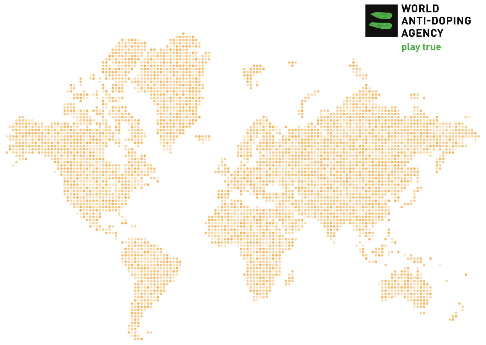
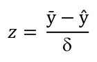

International Standards · ISL
Edition 2021 · effective 1 January 2021 · superseded
Retrieved on 25 November 2026 from https://www.wada-ama.org/sites/default/files/resources/files/isl_2021.pdf
Editions: 2027 (current) · 2021 · 2019 (v10.0) · 2016 (v9.0) · 2015 (v8.0) · 2012 (v7.0) · 2009 (v6.0) · 2008 (v5.0) · 2004 (v4.0)
p. 1
International Standard for Laboratories

p. 2
The World Anti-Doping Code International Standard for Laboratories is a mandatory International Standard developed as part of the World Anti-Doping Program. It was developed in consultation with Signatories, public authorities, and other relevant stakeholders.
The International Standard for Laboratories first came into effect in November 2002. It was subsequently amended multiple times, specifically in 2003, 2004, 2008, 2009, 2012, 2015, 2016, and 2019. A revised version was approved by the WADA Executive Committee on 15 September 2020 and is effective as of 1 January 2021.
Published by:
World Anti-Doping Agency Stock Exchange Tower 800 Place Victoria (Suite 1700) PO Box 120 Montreal, Quebec Canada H4Z 1B7
www.wada-ama.org
Tel:
Fax:
+1 514 904 9232
+1 514 904 8650
E-mail: code@wada-ama.org
p. 3
p. 4
p. 5
p. 6
p. 7
p. 8
PART ONE: INTRODUCTION, CODE PROVISIONS, INTERNATIONAL STANDARD PROVISIONS AND DEFINITIONS
1.0 Introduction and Scope
1.1 WADA Laboratory Standards
1.1.1 International Standard for Laboratories (ISL)
In the introduction to the World Anti-Doping Code (Code), the purpose and implementation of the International Standards are summarized as follows:
"International Standards for different technical and operational areas within the anti-doping program have been and will be developed in consultation with the Signatories and governments and approved by WADA. The purpose of the International Standards is harmonization among Anti-Doping Organizations responsible for specific technical and operational parts of anti-doping programs. Adherence to the International Standards is mandatory for compliance with the Code. The International Standards may be revised from time to time by the WADA Executive Committee after reasonable consultation with the Signatories, governments and other relevant stakeholders. International Standards and all revisions will be published on the WADA website and shall become effective on the date specified in the International Standard or revision."
The main purpose of the ISL is to ensure that Laboratories and ABP Laboratories report valid test results based on reliable evidentiary data, and to facilitate harmonization in Analytical Testing of Samples by Laboratories and in the analysis of ABP blood Samples by Laboratories and ABP Laboratories.
The ISL sets out the requirements to be followed by Laboratories and ABP Laboratories that wish to demonstrate that they are technically competent, operate within an effective Management System, and are able to produce forensically valid results. The ISL includes, inter alia, requirements for obtaining and maintaining WADA Laboratory accreditation and WADA laboratory approval for the ABP, operating standards for the performance of Laboratories and ABP Laboratories and a description of the accreditation and approval processes. The ISL also sets out requirements and guidance for Anti-Doping Organizations in relation to Sample custody and storage, Analytical Testing and some aspects of Results Management.
Compliance with the ISL in effect at the time of Sample analysis (as opposed to another alternative standard, practice or procedure) shall be sufficient to conclude that the procedures covered by this International Standard were performed properly. A failure by a Laboratory or ABP Laboratory to follow a requirement in effect at the time of Analytical Testing, which has subsequently been eliminated from this ISL or applicable Technical Document(s) or Technical Letter(s) at the time of a hearing, shall not serve as a defense to an anti-doping rule violation.
p. 9
1.1.2 Technical Documents
- Technical Documents are issued to provide direction to the Laboratories, ABP Laboratories and other stakeholders on specific technical or procedural issues. Technical Documents are modified and/or withdrawn by WADA as appropriate.
- Technical Documents are approved by the WADA Executive Committee and published on WADA's website. Once approved, a Technical Document becomes an integral part of the ISL and supersedes any previous publication on a similar topic¹ , including Technical Letter(s) and/or the ISL.
- Implementation of the requirements detailed in a Technical Document may occur prior to the effective date for implementation specified in the Technical Document and shall occur no later than the effective date.
A failure by a Laboratory or ABP Laboratory to implement a Technical Document or Technical Letter by the effective date may result in the imposition of an Analytical Testing Restriction against the Laboratory for that particular Analytical Testing Procedure or a Suspension of the Laboratory's WADA accreditation, or a Suspension of the approval for the ABP, respectively, as determined by WADA;
[Comment: Laboratories and ABP Laboratories may implement a Technical Document as soon as it is approved by the WADA Executive Committee and published on WADA's website, provided that the requirements of the Technical Document have been implemented and documented in the Laboratory's or ABP Laboratory's Standard Operating Procedure(s) [SOP(s)]. If a Laboratory or ABP Laboratory is not able to implement a new Technical Document by its effective date, it shall inform its clients and WADA as soon as possible. The Laboratory or ABP Laboratory shall send a written request to WADA for an extension beyond the applicable effective date, providing the reason(s) for the delayed implementation of the Technical Document, any measures taken to ensure that Samples received in the Laboratory or ABP Laboratory will be subject to Analytical Testing in compliance with the new Technical Document (for example, by subcontracting the analysis to another Laboratory or ABP Laboratory, as applicable), as well as plans for the implementation of the new Technical Document.]
- The implementation of the Technical Documents requirements into the Laboratory's and, if relevant to the analysis of ABP blood Samples, the ABP Laboratory's Management System is mandatory for obtaining and maintaining WADA accreditation or approval, respectively, and for the application of the relevant Analytical Testing Procedure(s) to the analysis of Samples;
- In cases when a newly approved version of a Technical Document lowers either a Decision Limit for a Threshold Substance or a Minimum Reporting Level for a Non-Threshold Substance, as applicable, the revised limits specified in the new
¹WADA will provide guidance to Laboratories, ABP Laboratories and other WADA stakeholders on the standard(s) that may be affected by a new Technical Document or Technical Letter in the Summary of Modifications that accompanies the publication of the revised version of the Technical Document or Technical Letter.
p. 10
Technical Document shall not be applied to the reporting of analytical results for Samples collected before the effective date of the Technical Document.
[Comment: For example, if the application of a newly approved Technical Document results in an Adverse Analytical Finding for a Sample with a collection date prior to the effective date of that new Technical Document, which would not have resulted in an Adverse Analytical Finding with the application of the currently effective version of the Technical Document in effect at the time of Sample collection (for example if the Decision Limit for a Threshold Substance has been lowered in the newly approved Technical Document), the Laboratory shall report the finding as a Negative Finding. In addition, the Laboratory shall record the details of the finding as a comment in the Negative Finding Test Report.]
- The most recently approved Technical Document shall be applied to the Analytical Testing of Samples prior to the effective date if it would lead to a result that benefits the Athlete (e.g. increase of the Decision Limit for a Threshold Substance or of the Minimum Reporting Level for a Non-Threshold Substance, establishment of more stringent identification criteria for chromatographic-mass spectrometric or electrophoretic Confirmation Procedures). Therefore, in the case where an analytical finding does not meet the reporting criteria defined in the new Technical Document, it shall be reported as a Negative Finding;
- Subject to the above, the analysis of Samples or the review of analytical data may occur immediately once a Technical Document has been approved.
1.1.3 Technical Letters
- Technical Letters are issued in letter format on an ad-hoc basis in order to provide direction to the Laboratories, ABP Laboratories and other stakeholders on particular issues on the analysis, interpretation and reporting of results for specific Prohibited Substance(s) and/or Prohibited Method(s) or on the application of specific Laboratory procedures. Technical Letters are modified and/or withdrawn by WADA as appropriate;
- Technical Letters are approved by the WADA Executive Committee and published on WADA's website. Technical Letters become effective immediately, unless otherwise specified by WADA;
[Comment: Technical Letters may require actions [(e.g. validation of new Analytes or modifications to Analytical Testing Procedures, the procurement of Reference Material(s) or Reference Collection(s)], which may justify that its application cannot be immediate. In such cases, WADA shall make a time provision for implementation and specify an effective date for the Technical Letter.]
- Once approved, a Technical Letter becomes an integral part of the ISL and supersedes any previous publication on a similar topic¹ , including Technical Document(s) and/or the ISL;
- The implementation of the requirements of relevant Technical Letters into the Laboratory's and, if relevant to the analysis of ABP blood Samples, the ABP Laboratory's Management System is mandatory for obtaining and maintaining
p. 11
WADA accreditation or approval, respectively, and for the application of the relevant Analytical Testing Procedure(s) to the analysis of Samples.
1.1.4 Laboratory Guidelines
- Laboratory Guidelines are issued in order to provide direction to the Laboratories, ABP Laboratories and other WADA stakeholders on new Analytical Methods or procedures approved by WADA. Laboratory Guidelines are modified and/or deleted by WADA, as appropriate;
- Laboratory Guidelines are approved by the Laboratory Expert Group (LabEG) and are published on WADA's website;
- Implementation of Laboratory Guidelines is not mandatory. However, Laboratories and ABP Laboratories are encouraged to follow, to the fullest extent possible, the recommendations of best practice included in relevant Laboratory Guidelines.
1.1.5 Technical Notes
- Technical Notes are issued to Laboratories to provide detailed technical guidance on the performance of specific Analytical Methods or procedures;
- Technical Notes are approved by the LabEG. Technical Notes are provided to Laboratories only and are not published on WADA's website;
- Implementation of the recommendations detailed in Technical Notes is not mandatory. However, Laboratories are encouraged to follow, to the fullest extent possible, the technical guidance included in Technical Notes.
1.2 Sample Analysis
Sample analysis is part of the Analytical Testing process and involves the detection, identification, and in some cases demonstration of the presence above a Threshold of Prohibited Substance(s) and/or their Metabolite(s), or Marker(s) of Use of Prohibited Substances or Prohibited Methods in human biological fluids or tissues.
Laboratories may accept samples for other forms of analysis, subject to the provisions of the ISL Code of Ethics (see Annex A), which are not under the scope of WADA accreditation (e.g. animal sports testing, forensic testing, clinical testing, drugs of abuse testing). Any such testing shall not be covered by the Laboratory's WADA accreditation and, therefore, shall not be subject to the requirements of the ISL, Technical Documents or Technical Letters. For the avoidance of doubt, test reports or other documentation or correspondence from Laboratories shall not declare or represent that any such testing is covered under their WADA accreditation status.
ABP Laboratories may also accept samples for other forms of analyses, which are not within the scope of the WADA approval (e.g. forensic testing, clinical testing, drugs of abuse testing). For the avoidance of doubt, test reports or other documentation or correspondence from ABP
p. 12
Laboratories shall not state or represent that any such testing is covered under their WADA approval status.
1.3 WADA Laboratory Accreditation Framework and Laboratory Approval for the ABP
The WADA Laboratory accreditation and Laboratory approval for the ABP framework consists of two main elements: Part Two of the ISL (Laboratory accreditation and Laboratory approval for the ABP requirements and operating standards) and Part Three (the Annexes).
- Part Two of the ISL describes the requirements necessary to obtain and maintain WADA accreditation and the procedures involved to fulfill these requirements, as well as the requirements necessary to obtain and maintain WADA approval for the ABP (Section 4.0). It also includes the application of ISO/IEC 17025² to the field of Doping Control (Section 5.0) and a description of the WADA External Quality Assessment Scheme (EQAS) (Section 6.0) as well as the procedures to evaluate Laboratory EQAS and routine Analytical Testing performance by WADA (Section 7.0). The purpose of Part Two of the ISL is to enable the consistent application of ISO/IEC 17025 and ISL-specific requirements to Analytical Testing for Doping Control by Laboratories and ABP Laboratories, as well as to facilitate the assessment of Laboratory and ABP Laboratory compliance by Accreditation Bodies and WADA.
- Part Three of the ISL includes all Annexes. Annex A (Code of Ethics), Annex B (Accreditation and Analytical Testing Requirements for Major Events) and Annex C (Procedural Rules) describe the ethical and legal standards required for continued WADA accreditation of the Laboratory or continued approval of the laboratory for the ABP, as well as the specific requirements to conduct Analytical Testing during Major Events.
In order to harmonize the accreditation of Laboratories to the requirements of ISO/IEC 17025 and the approval of ABP Laboratories to the requirements of ISO/IEC 17025 (or ISO 15189), as well as the WADA-specific requirements for accreditation or approval, Accreditation Bodies are required to use the ISL, including the applicable Annexes, Technical Documents, Technical Letters and Laboratory Guidelines as reference documents in their assessment process.
[Comment: While Laboratories are required to be accredited to the requirements of ISO/IEC 17025 (applicable to testing and calibration laboratories), ABP Laboratories may be accredited to either the ISO/IEC 17025 or ISO 15189 (applicable to medical laboratories) standards].
Maintenance of a laboratory's WADA accreditation or approval for the ABP is based on satisfactory performance in the applicable EQAS and in routine Analytical Testing. The EQAS performance of Laboratories and ABP Laboratories is continually monitored by WADA and reviewed as part of their Accreditation Body assessment process, as applicable. Therefore, the Laboratory or ABP Laboratory shall not be subject to challenge or to demands to produce EQAS data or related EQAS documentation by third parties.
²Effective version of ISO/IEC 17025.
p. 13
Terms used in this International Standard that are defined terms from the Code are italicized. Terms that are defined in this or another International Standard are underlined.
2.0 Code Provisions
The following articles in the 2021 Code are directly relevant to the International Standard for Laboratories, they can be obtained by referring to the Code itself:
- Code Article 2 Anti-doping Rule Violations
- Code Article 3 Proof of Doping
- Code Article 4 The Prohibited List
- Code Article 6 Analysis of Samples
- Code Article 10 Sanctions of Individuals
- Code Article 13 Results Management: Appeals
- Code Article 14 Confidentiality and Reporting
3.0 Definitions and Interpretations
3.1 Defined terms from the 2021 Code that are used in the International Standard for Laboratories
ADAMS: The Anti-Doping Administration and Management System is a Web-based database management tool for data entry, storage, sharing, and reporting designed to assist stakeholders and WADA in their anti-doping operations in conjunction with data protection legislation.
Adverse Analytical Finding: A report from a WADA-accredited laboratory or other WADA-approved laboratory that, consistent with the International Standard for Laboratories establishes in a Sample the presence of a Prohibited Substance or its Metabolites or Markers or evidence of the Use of a Prohibited Method.
Anti-Doping Organization: WADA or a Signatory that is responsible for adopting rules for initiating, implementing or enforcing any part of the Doping Control process. This includes, for example, the International Olympic Committee, the International Paralympic Committee, other Major Event Organizations that conduct Testing at their Events, International Federations, and National Anti-Doping Organizations.
Athlete: Any Person who competes in sport at the international level (as defined by each International Federation) or the national level (as defined by each National Anti-Doping Organization). An Anti-Doping Organization has discretion to apply anti-doping rules to an Athlete who is neither an International-Level Athlete nor a National-Level Athlete, and thus to bring them within the definition of "Athlete." In relation to Athletes who are neither International- Level nor National-Level Athletes, an Anti-Doping Organization may elect to: conduct limited Testing or no Testing at all; analyze Samples for less than the full menu of Prohibited Substances; require limited or no whereabouts information; or not require advance TUEs. However, if an Article 2.1, 2.3 or 2.5 anti-doping rule violation is committed by any Athlete over whom an Anti-Doping Organization has elected to exercise its authority to test and who competes below the international or national level, then the Consequences set forth in the Code must be applied. For purposes of Article 2.8 and Article 2.9 and for purposes of anti-doping information and education, any Person who participates in sport under the authority of any Signatory, government, or other sports organization accepting the Code is an Athlete.
p. 14
[Comment: Individuals who participate in sport may fall in one of five categories: 1) International-Level Athlete, 2) National-Level Athlete, 3) individuals who are not International or National-Level Athletes but over whom the International Federation or National Anti-Doping Organization has chosen to exercise authority, 4) Recreational Athlete, and 5) individuals over whom no International Federation or National Anti-Doping Organization has, or has chosen to, exercise authority. All International and National-Level Athletes are subject to the anti-doping rules of the Code, with the precise definitions of international and national level sport to be set forth in the anti-doping rules of the International Federations and National Anti-Doping Organizations.]
Athlete Biological Passport (ABP): The program and methods of gathering and collating data as described in the International Standard for Testing and Investigations and International Standard for Laboratories.
Atypical Finding: A report from a WADA-accredited laboratory or other *WADA-*approved laboratory, which requires further investigation as provided by the International Standard for Laboratories or related Technical Documents prior to the determination of an Adverse Analytical Finding.
CAS: The Court of Arbitration for Sport.
Code: The World Anti-Doping Code.
Competition: A single race, match, game or singular sport contest. For example, a basketball game or the finals of the Olympic 100-meter race in athletics. For stage races and other sport contests where prizes are awarded on a daily or other interim basis the distinction between a Competition and an Event will be as provided in the rules of the applicable International Federation.
Consequences of Anti-Doping Rule Violations ("Consequences"): An Athlete's or other Person's violation of an anti-doping rule may result in one or more of the following: (a) Disqualification means the Athlete's results in a particular Competition or Event are invalidated, with all resulting Consequences including forfeiture of any medals, points and prizes; (b) Ineligibility means the Athlete or other Person is barred on account of an anti-doping rule violation for a specified period of time from participating in any Competition or other activity or funding as provided in Article 10.12.1; (c) Provisional Suspension means the Athlete or other Person is barred temporarily from participating in any Competition or activity prior to the final decision at a hearing conducted under Article 8; (d) Financial Consequences means a financial sanction imposed for an anti-doping rule violation or to recover costs associated with an anti-doping rule violation; and (e) Public Disclosure means the dissemination or distribution of information to the general public or Persons beyond those Persons entitled to earlier notification in accordance with Article 14. Teams in Team Sports may also be subject to Consequences as provided in Article 11.
p. 15
Decision Limit: The value of the result for a Threshold Substance in a Sample, above which an Adverse Analytical Finding shall be reported, as defined in the International Standard for Laboratories.
Delegated Third Parties: Any Person to which an Anti-Doping Organization delegates any aspect of Doping Control or anti-doping Education programs including, but not limited to, third parties or other Anti-Doping Organizations that conduct Sample collection or other Doping Control services or anti-doping Educational programs for the Anti-Doping Organization, or individuals serving as independent contractors who perform Doping Control services for the Anti-Doping Organization (e.g., non-employee Doping Control officers or chaperones) This definition does not include CAS.
Doping Control: All steps and processes from test distribution planning through to ultimate disposition of any appeal and the enforcement of Consequences, including all steps and processes in between, including but not limited to, Testing, investigations, whereabouts, TUEs, Sample collection and handling, laboratory analysis, Results Management, and investigations or proceedings relating to violations of Article 10.14 (Status During Ineligibility or Provisional Suspension).
Event: A series of individual Competitions conducted together under one ruling body (e.g., the Olympic Games, World Championships of an International Federation or Pan American Games).
In-Competition: The period commencing at 11: 59 pm on the day before a Competition in which the Athlete is scheduled to participate through the end of such Competition and the Sample collection process related to such Competition. Provided, however, WADA may approve, for a particular sport, an alternative definition if an International Federation provides a compelling justification that a different definition is necessary for its sport; upon such approval by WADA, the alternative definition shall be followed by all Major Event Organizations for that particular sport.
[Comment: Having a universally accepted definition for In-Competition provides greater harmonization among Athletes across all sport, eliminates or reduces confusion among Athletes about the relevant timeframe for In-Competition Testing, avoids inadvertent Adverse Analytical Findings in between Competitions during an Event and assists in preventing any potential performance enhancement benefits from substances prohibited Out-of-Competition being carried over to the Competition.]
Ineligibility: See Consequences of Anti-Doping Rule Violations above.
International Standard: A standard adopted by WADA in support of the Code. Compliance with an International Standard (as opposed to another alternative standard, practice or procedure) shall be sufficient to conclude that the procedures addressed by the International Standard were performed properly. International Standards shall include any Technical Documents issued pursuant to the International Standard.
Major Event Organizations: The continental associations of National Olympic Committees and other international multi-sport organizations that function as the ruling body for any continental, regional or other International Event.
p. 16
Marker: A compound, group of compounds or biological variable(s) that indicates the Use of a Prohibited Substance or Prohibited Method.
Metabolite: Any substance produced by a biotransformation process.
Minimum Reporting Level: The estimated concentration of a Prohibited Substance or its Metabolite(s) or Marker(s) in a Sample below which WADA-accredited laboratories should not report that Sample as an Adverse Analytical Finding.
National Anti-Doping Organization: The entity(-ies) designated by each country as possessing the primary authority and responsibility to adopt and implement anti-doping rules, direct the collection of Samples, the management of test results, and the conduct of hearings at the national level. If this designation has not been made by the competent public authority(- ies), the entity shall be the country's National Olympic Committee or its designee.
National Olympic Committee: The organization recognized by the International Olympic Committee. The term National Olympic Committee shall also include the National Sport Confederation in those countries where the National Sport Confederation assumes typical National Olympic Committee responsibilities in the anti-doping area.
Out-of-Competition: Any period which is not In-Competition.
Person: A natural Person or an organization or other entity.
Prohibited List: The List identifying the Prohibited Substances and Prohibited Methods.
Prohibited Method: Any method so described on the Prohibited List.
Prohibited Substance: Any substance, or class of substances, so described on the Prohibited List.
Results Management: The process encompassing the timeframe between notification as per Article 5 of the International Standard for Results Management, or in certain cases (e.g., Atypical Finding, Athlete Biological Passport, Whereabouts Failure), such pre-notification steps expressly provided for in Article 5 of the International Standard for Results Management, through the charge until the final resolution of the matter, including the end of the hearing process at first instance or on appeal (if an appeal was lodged).
Sample or Specimen: Any biological material collected for the purposes of Doping Control.
Signatories: Those entities signing the Code and agreeing to comply with the Code, as provided in Article 23.
Tampering: Intentional conduct which subverts the Doping Control process, but which would not otherwise be included in the definition of Prohibited Methods. Tampering shall include, without limitation, offering or accepting a bribe to perform or fail to perform an act, preventing the collection of a Sample, affecting or making impossible the analysis of a Sample, falsifying documents submitted to an Anti-Doping Organization or TUE committee or hearing panel, procuring false testimony from witnesses, committing any other fraudulent act upon the Anti-Doping Organization or hearing body to affect Results Management or the imposition of Consequences, and any other similar intentional interference or Attempted interference with any aspect of Doping Control.
Target Testing: Selection of specific Athletes for Testing based on criteria set forth in the International Standard for Testing and Investigations.
p. 17
Technical Document: A document adopted and published by WADA from time to time containing mandatory technical requirements on specific anti-doping topics as set forth in an International Standard.
Testing: The parts of the Doping Control process involving test distribution planning, Sample collection, Sample handling, and Sample transport to the laboratory.
Therapeutic Use Exemption (TUE): A Therapeutic Use Exemption allows an Athlete with a medical condition to Use a Prohibited Substance or Prohibited Method, but only if the conditions set out in Article 4.4 and the International Standard for Therapeutic Use Exemptions are met.
Use: The utilization, application, ingestion, injection or consumption by any means whatsoever of any Prohibited Substance or Prohibited Method.
WADA: The World Anti-Doping Agency.
3.2 Defined Terms from the International Standard for Laboratories
ABP Laboratory: A laboratory not otherwise accredited by WADA, which is approved by WADA to apply Analytical Methods and processes in support of the hematological module of the ABP program and in accordance with the criteria for approval of non-accredited laboratories for the ABP.
Aliquot: A portion of the Sample of biological fluid (e.g. urine, blood) obtained from the Athlete used in the analytical process.
Analyte: Also known as or referred to as a substance, compound or measurand, which is analyzed and/or determined in a biological matrix using an Analytical Testing Procedure performed under controlled analytical and laboratory conditions. For anti-doping purposes, an Analyte may be a Prohibited Substance, a Metabolite of a Prohibited Substance, or a Marker of the Use of a Prohibited Substance or Prohibited Method.
Analytical Method: Analytical Testing Procedure, Test Method.
Analytical Testing: The parts of the Doping Control process performed at the Laboratory, which include Sample handling, analysis and reporting of results.
Analytical Testing Procedure: A Fit-for-Purpose procedure, as demonstrated through method validation, and used to detect, identify and/or quantify Analytes in a Sample for Doping Control purposes in accordance with the ISL and relevant Technical Document(s), Technical Letter(s) or Laboratory Guidelines. An Analytical Testing Procedure is also referred to or known as an Analytical Method or Test Method.
Analytical Testing Restriction (ATR): Restriction on a Laboratory's application of specified Analytical Testing Procedure(s) or the analysis of a particular class(es) of Prohibited Substances or Prohibited Methods to Samples, as determined by WADA.
Athlete Passport Management Unit (APMU): A unit composed of a Person or Persons that is responsible for the timely management of Athlete Biological Passports in ADAMS on behalf of the Passport Custodian.
Bias (b): Deviation of a measured result from the expected or reference value when using the complete measurement procedure.
p. 18
Certificate of Analysis: The material produced by a Laboratory or ABP Laboratory upon request by an APMU, Expert Panel, or WADA as set forth in the Technical Document on Laboratory Documentation Packages (TD LDOC), to support an analytical result for a Sample that is judged to confirm the baseline level of a urine or blood Marker of the Athlete Biological Passport.
Certified Reference Material (CRM): Reference Material (RM), characterized by a metrologically valid procedure for one or more specified properties, which is accompanied by a certificate that provides the value of the specified property, its associated uncertainty, and a statement of metrological traceability.
Confirmation Procedure (CP): An Analytical Testing Procedure that has the purpose of confirming the presence and/or, when applicable, confirming the concentration/ratio/score and/or establishing the origin (exogenous or endogenous) of one or more specific Prohibited Substances, Metabolite(s) of a Prohibited Substance, or Marker(s) of the Use of a Prohibited Substance or Prohibited Method in a Sample.
Corrective Action Report (CAR): A report describing the Root Cause Analysis investigation of a detected nonconformity and the corrective actions implemented to rectify it. If appropriate, it shall also describe the improvements adopted to minimize the risk of recurrence of the nonconformity.
[Comment: The term "Corrective Action" is widespread in the ISO standards for laboratories and it is used to describe the actions that ought to be taken by a laboratory in cases of nonconformities that occur during the performance of its work. This term is recognized as one of the minimum items that the laboratory Management System shall address. Thus, corrective action reports (CARs) are used by accreditation bodies all over the world to understand and assess the treatment of nonconformities by laboratories, including an analysis of the extent and cause (i.e. root cause analysis) of the nonconformities.]
External Quality Assessment Scheme (EQAS): Program for quality assessment of Laboratory performance, which includes the periodical distribution of urine or blood samples to Laboratories and probationary laboratories by WADA, to be analyzed for the presence or absence of Prohibited Substances and/or their Metabolite(s), or Marker(s) of Use of Prohibited Substances or Prohibited Methods. The EQAS includes also the provision of blood samples to ABP Laboratories for the analysis of the blood Markers of the Athlete Biological Passport. EQAS samples may be open (i.e. educational; in such cases the content may be indicated), blind or double-blind (in such cases the content is unknown to the Laboratories).
Fit(ness)-for-Purpose: Suitable for the intended purpose and in conformity with the ISO/IEC 17025 or ISO 15189, as applicable, the ISL and relevant Technical Document(s) and Technical Letter(s).
Flexible Scope of ISO/IEC 17025 Accreditation: Status of laboratory accreditation, which allows a Laboratory to make and implement restricted modifications in the Scope of ISO/IEC 17025 Accreditation, as applicable, prior to the assessment by the Accreditation Body. See Article 4.4.2.2 for a detailed description of Flexible Scope of ISO/IEC 17025 Accreditation.
[Comment: The concept of flexible scope of accreditation may also be applied, as determined by the Accreditation Body, to the analysis of ABP blood Markers when included in the scope of ISO 15189 accreditation of ABP Laboratories.]
p. 19
Further Analysis: Further Analysis, as this term is used in the ISL, occurs when a Laboratory conducts additional analysis on an "A" Sample or a "B" Sample after an analytical result for that "A" Sample or that "B" Sample has been reported by the Laboratory.
[Comment: There is no limitation on a Laboratory's authority to conduct repeat or confirmation analysis, or to analyze a Sample with additional Analytical Methods, or to perform any other type of additional analysis on an "A" Sample or "B" Sample prior to reporting an analytical result on that Sample. That is not considered Further Analysis.
If a Laboratory is to conduct additional analysis on an "A" Sample or "B" Sample after an analytical result for that Sample has been reported (for example: additional Sample analysis to detect EPO, or GC/C/IRMS analysis, or analysis in connection with the Athlete Biological Passport or additional analysis on a stored Sample) it may do so after receiving approval from the Testing Authority or Results Management Authority (if different) or WADA. However, after an Athlete has been charged with a Code Article 2.1 anti-doping rule violation based on the presence of a Prohibited Substance, Metabolite(s) of a Prohibited Substance, or Marker(s) of the Use of a Prohibited Substance or Prohibited Method in a Sample, then Further Analysis on that Sample may only be performed with the consent of the Athlete or approval from a hearing body (see Code Article 6.5).
Further Analysis may be performed by the same Laboratory that did the original Analytical Testing, or by a different Laboratory or other WADA-approved laboratory, at the direction of the Testing Authority or Results Management Authority (if different) or WADA. Any other Anti-Doping Organization that wishes to conduct Further Analysis on a stored Sample may do so with the permission of the Testing Authority or Results Management Authority (if different) or WADA and shall be responsible for any follow-up Results Management. Any Sample storage or Further Analysis initiated by WADA or another Anti-Doping Organization shall be at WADA's or that Anti-Doping Organization's expense.]
Independent Witness: A Person, invited by the Testing Authority, the Laboratory or WADA to witness the opening and initial aliquoting of an Athlete's "B" Sample. An Independent Witness shall not be an employee or have a personal financial relationship with the Athlete or his/her representative(s), the Laboratory, the Sample Collection Authority, the Testing Authority / Delegated Third Parties / Results Management Authority or WADA, as applicable. However, the Independent Witness may be indemnified for his/her service.
Initial Testing Procedure (ITP): An Analytical Testing Procedure whose purpose is to identify those Samples which may contain a Prohibited Substance, Metabolite(s) of a Prohibited Substance, or Marker(s) of the Use of a Prohibited Substance or Prohibited Method or an elevated quantity of a Prohibited Substance, Metabolite(s) of a Prohibited Substance, or Marker(s) of the Use of a Prohibited Substance or Prohibited Method.
Intermediate Precision (sw): Variation in results observed when one or more factors, such as time, equipment, or operator are varied within a Laboratory. It is also referred to as inter-batch / inter-run precision.
Laboratory Internal Chain of Custody: Documentation maintained within the Laboratory to record the chronological traceability of custody (by Person(s) or upon storage) and actions performed on the Sample and any Aliquot of the Sample taken for Analytical Testing.
[Comment: Laboratory Internal Chain of Custody is generally documented by a written or electronic record of the date, location, action taken, and the Person performing an action with a Sample or Aliquot.]
Laboratory: A WADA-accredited laboratory applying Test Methods and processes to provide evidentiary data for the detection and/or identification of Prohibited Substances or Prohibited Methods on the Prohibited List and, if applicable, quantification of a Threshold Substance in Samples of urine and other biological matrices in the context of Doping Control activities.
p. 20
Laboratory Expert Group (LabEG): Group of laboratory experts responsible for providing advice, recommendations and guidance to WADA with respect to the overall management of anti-doping Laboratory accreditation and ABP approval, Laboratory and ABP Laboratory disciplinary action, re-accreditation and approval processes as well as Laboratory and ABP Laboratory monitoring activities.
Laboratory Guidelines (LGs): Recommendations of Laboratory best practice provided by WADA to address specific Laboratory operations or to provide technical requirements and guidance on interpretation and reporting of results for the analysis of specific Prohibited Substance(s) and/or Prohibited Method(s) or on the application of specific Laboratory procedures.
[Comment: Laboratory Guidelines are posted on WADA's website, are not of mandatory application and may be later incorporated, partially or in full, in Technical Document(s) or in the ISL. Laboratory Guidelines are approved by the LabEG].
Laboratory Documentation Package (LDP): The material produced by a Laboratory upon request by the Testing Authority, Results Management Authority or WADA, as set forth in the Technical Document on Laboratory Documentation Packages (TD LDOC), to support an analytical result such as an Adverse Analytical Finding or an Atypical Finding.
Limit of Detection (LOD): Analytical parameter of assay technical performance. Lowest concentration of an Analyte in a Sample that can be routinely detected, but not necessarily identified or quantified, under the stated Test Method conditions.
Limit of Identification (LOI): Analytical parameter of technical performance for chromatographic-mass spectrometric Confirmation Procedures. The LOI is estimated during method validation to evaluate the rate of false negative results at a certain concentration level. The LOI of a Test Method, at 5% false negative rate, for an Analyte (for which a Reference Material is available) shall be less than the MRPL.
[Comment: Since the LOI is an estimation of the false negative rate, Laboratories may report findings below the estimated LOI as Adverse Analytical Findings or Atypical Findings, as applicable, when the Analyte is identified in the Sample according to the criteria established in the Technical Document on chromatographic-mass spectrometric identification criteria (TD IDCR).]
Limit of Quantification (LOQ): Analytical parameter of assay technical performance. Lowest concentration of an Analyte in a Sample that can be quantitatively determined with acceptable precision and accuracy (i.e. acceptable Measurement Uncertainty) under the stated Test Method conditions.
Major Event: A series of individual international Competitions conducted together under an international multi-sport organization functioning as a ruling body (e.g. the Olympic Games, Pan American Games).
Measurement Uncertainty (MU): Parameter associated with a measurement result that characterizes the dispersion of quantity values attributed to the measure and provides confidence in the validity of the measured result [see Technical Document on Decision Limits (TD DL)].
Minimum Required Performance Level (MRPL): Minimum analytical criterion of Laboratory technical performance established by WADA. Minimum concentration at which a Laboratory is expected to consistently detect and confirm a Prohibited Substance or Metabolite of a Prohibited Substance or Marker of a Prohibited Substance or Prohibited Method in the routine daily operation of the Laboratory. Individual Laboratories may and are expected to achieve better performance [see Technical Document on Minimum Required Performance Levels (TD MRPL)].
p. 21
Negative Finding: A test result from a Laboratory which, in accordance with the effective ISL and/or relevant Technical Document(s) and/or Technical Letter(s), concludes that no Prohibited Substance(s) or its Metabolite(s) or Marker(s) or evidence of the Use of a Prohibited Method(s), included in the requested Analytical Testing menu, were found in a Sample based on the applied Initial Testing Procedure(s) or Confirmation Procedure(s).
Non-Threshold Substance: A substance listed on the Prohibited List for which the identification, in compliance with the Technical Document on chromatographic-mass spectrometric identification criteria (TD IDCR) or other applicable Technical Document(s), constitutes an Adverse Analytical Finding.
Presumptive Adverse Analytical Finding (PAAF): The status of a Sample test result from the Initial Testing Procedure which represents a suspicious finding, but for which a Confirmation Procedure to render a conclusive test result has not yet been performed.
Provisional Suspension: Temporary Suspension of a Laboratory's WADA accreditation or a laboratory's ABP approval pending a final decision by WADA regarding its accreditation status.
Reference Collection (RC): A collection of samples or isolates of known origin that may be used in the determination of the identity of an unknown substance. For example, a well-characterized sample obtained from a controlled administration or from in vitro studies in which the presence of the substance of interest has been established.
Reference Material (RM): Reference Substance or Reference Standard, which is sufficiently characterized, homogeneous and stable with respect to one or more specified properties and that has been established to be fit for its intended use in an Analytical Testing Procedure.
Repeatability (sr): Variability of results obtained within a laboratory using the same method, over a short time, using a single operator, item of equipment, etc. It is also referred to as intra-batch / intra-run precision.
Reproducibility (sR): Variability of results obtained when different laboratories analyze Aliquots of the same sample. Reproducibility is a property of the results obtained and represents a measurable agreement of analytical results between different laboratories.
Revocation: The permanent withdrawal of a Laboratory's WADA accreditation or a laboratory's ABP approval.
Root Cause Analysis (RCA): An investigation to identify one or more fundamental cause(s) of a nonconformity based on the collection of objective evidence from an assessment of the likely factors that led to the nonconformity. The removal of a root cause factor prevents the recurrence of the nonconformity; in contrast, removing a causal factor can improve the outcome, but it does not prevent the recurrence of the problem with certainty.
Selectivity: The ability of the Analytical Testing Procedure to detect or identify, as applicable, the substance of interest in the Sample.
Suspension: The temporary withdrawal of a Laboratory's WADA accreditation or a laboratory's ABP approval.
p. 22
Technical Letter (TL): Mandatory technical requirements provided by WADA from time to time (ad-hoc) to address particular issues on the analysis, interpretation and reporting of specific Prohibited Substance(s) and/or Prohibited Method(s) or on the application of specific Laboratory or ABP Laboratory procedures.
[Comment: Technical Letters are approved by the WADA Executive Committee and posted on WADA's website. Technical Letters become effective immediately, unless otherwise specified by WADA].
Technical Note (TN): Technical guidance provided by WADA to Laboratories on the performance of specific Laboratory methods or procedures.
[Comment: Technical Notes are not considered part of Technical Documents and therefore are not of mandatory application. Technical Notes are approved by the LabEG and become effective immediately].
Test Method: Analytical Testing Procedure, Analytical Method.
Threshold: The maximum permissible level of the concentration, ratio or score for a Threshold Substance in a Sample. The Threshold is used to establish the Decision Limit for reporting an Adverse Analytical Finding or Atypical Finding for a Threshold Substance.
Threshold Substance: An exogenous or endogenous Prohibited Substance, Metabolite or Marker of a Prohibited Substance for which the identification and quantitative determination (e.g. concentration, ratio, score) in excess of a pre-determined Decision Limit, or, when applicable, the establishment of an exogenous origin, constitutes an Adverse Analytical Finding. Threshold Substances are identified as such in the Technical Document on Decision Limits (TD DL).
3.3 Defined Terms from the International Standard for Testing and Investigations
Sample Collection Authority: The organization that is responsible for the collection of Samples in compliance with the requirements of the International Standard for Testing and Investigations, whether (1) the Testing Authority itself; or (2) a Delegated Third Party to whom the authority to conduct Testing has been granted or sub-contracted. The Testing Authority always remains ultimately responsible under the Code for compliance with the requirements of the International Standard for Testing and Investigations relating to collection of Samples.
Sample Collection Session: All of the sequential activities that directly involve the Athlete from the point that initial contact is made until the Athlete leaves the Doping Control Station after having provided their Sample(s).
Suitable Volume of Urine for Analysis: A minimum of 90 mL, whether the Laboratory will be analyzing the Sample for all or only some Prohibited Substances or Prohibited Methods.
Test Distribution Plan: A document written by an Anti-Doping Organization that plans Testing on Athletes over whom it has Testing Authority, in accordance with the requirements of Article 4 of the International Standard for Testing and Investigations.
Testing Authority: The Anti-Doping Organization that authorizes Testing on Athletes it has authority over. It may authorize a Delegated Third Party to conduct Testing pursuant to the authority of and in accordance with the rules of the Anti-Doping Organization. Such authorization shall be documented. The Anti-Doping Organization authorizing Testing remains the Testing Authority and ultimately responsible under the Code to ensure the Delegated Third Party conducting the Testing does so in compliance with the requirements of the International Standard for Testing and Investigations.
p. 23
3.4 Defined Terms from the International Standard for Results Management
Passport: A collation of all relevant data unique to an individual Athlete that may include longitudinal profiles of Markers, heterogeneous factors unique to that particular Athlete and other relevant information that may help in the evaluation of Markers.
Passport Custodian: The Anti-Doping Organization responsible for Result Management of the Athlete's Passport and for sharing any relevant information associated to that Athlete's Passport with other Anti-Doping Organization(s).
Results Management Authority: The Anti-Doping Organization responsible for conducting Results Management in a given case.
3.5 Interpretation
3.5.1 The official text of the International Standard for Laboratories shall be published in English and French. In the event of any conflict between the English and French versions, the English version shall prevail.
3.5.2 Like the Code, the International Standard for Laboratories has been drafted giving consideration to the principles of proportionality, human rights, and other applicable legal principles. It shall be interpreted and applied in that light.
3.5.3 The comments annotating various provisions of the International Standard for Laboratories shall be used to guide its interpretation.
3.5.4 Unless otherwise specified, references to Sections and Articles are references to Sections and Articles of the International Standard for Laboratories.
3.5.5 Where the term "days" is used in the International Standard for Laboratories, it shall mean calendar days unless otherwise specified.
3.5.6 The Annexes to the International Standard for Laboratories have the same mandatory status as the rest of the International Standard.
p. 24
PART TWO: LABORATORY ACCREDITATION AND LABORATORY APPROVAL FOR THE ABP REQUIREMENTS AND OPERATING STANDARDS
4.0 Process and Requirements for WADA Laboratory Accreditation and Laboratory Approval for the ABP
This section describes the specific requirements that a laboratory shall fulfill in the process of applying for, obtaining, and maintaining WADA accreditation or WADA approval for the ABP.
4.1 Applicant Laboratory for WADA Accreditation
In principle, any laboratory that satisfies the criteria listed below may apply to become a candidate laboratory for WADA accreditation. However, the WADA Executive Committee, at its sole discretion, may accept or deny a laboratory's candidacy application based on the identified needs (or lack thereof) for anti-doping Analytical Testing on a regional or national scale, or for any other reason(s).
4.1.1 Expression of Interest
The applicant laboratory shall officially contact WADA in writing to express its interest in becoming a WADA-accredited laboratory.
4.1.2 Submit Initial Application Form
The applicant laboratory shall submit a completed Application Form, provided by WADA, duly signed by the laboratory Director and, if relevant, by the Director of the host organization (e.g. university, hospital, public institution).
An applicant laboratory may only submit an application if its host country satisfies the following conditions:
- The existence of a National Anti-Doping Program conducted by a National Anti-Doping Organization and/or a Regional Anti-Doping Organization, which is compliant with the Code and the International Standards of the World Anti-Doping Program;
- The ratification of the UNESCO Convention against Doping in Sport; and
- The payment of the annual financial contributions to WADA.
These conditions shall be documented as part of the application.
4.1.3 Provision of Letters of Support
Upon receipt of an application and verification of the conditions mentioned above, WADA shall request that the applicant laboratory submit the following letters of support:
- Official letter(s) of support from host organizations acceptable to WADA (e.g. universities, hospitals, private organizations and/or public institutions) that p. 25 guarantee sufficient annual financial support for a minimum of three (3) years, the provision of adequate analytical facilities, instrumentation and human resources, as well as support for training programs, research and development activities;
- Official letter(s) of support from Signatories, such as a National Anti-Doping Organization or Regional Anti-Doping Organization responsible for a National Anti-Doping Program, or an International Federation responsible for an International Anti-Doping Program. Such letter(s) of support shall indicate a commitment to provide the Laboratory with a minimum of 3,000 Samples per year by the end of the second calendar year after obtaining WADA accreditation;
[Comment: To determine the minimum number of Samples, each urine Sample, blood Sample and ABP blood Sample analyzed by the Laboratory shall count as an individual Sample.]
- A declaration by the supporting Signatory(-ies) that their relationship with the applicant laboratory is compliant with Article 4.4.2.4.
4.1.4 Provision of Business Plan
WADA shall request the applicant laboratory to submit a business plan, which shall include market considerations (clients, number of Samples, maintenance costs, etc.), facility, instrumental, staffing and training needs, and shall guarantee the long-term provision of adequate financial and human resources to the laboratory.
4.2 Candidate Laboratory for WADA Accreditation
The application materials described in Articles 4.1.1 to 4.1.4 shall be evaluated by the WADA Executive Committee to determine whether the applicant laboratory will be granted WADA candidate laboratory status and thereby continue within the WADA accreditation process. Additional supporting documentation may be requested by, and at the discretion of, the WADA Executive Committee.
4.2.1 Description of the Candidate Laboratory
Once approved by the WADA Executive Committee, the candidate laboratory shall complete a detailed questionnaire provided by WADA and submit it to WADA within eight (8) weeks following receipt. The questionnaire will include, but is not limited to, the following:
- Staff list and their qualifications, including description of any relevant anti-doping experience and a list of relevant scientific publications by laboratory staff;
- Description of the physical laboratory facilities, including a description of the security considerations for Samples and records. The laboratory facilities shall include ample analytical and administrative space to allow separate, restricted and dedicated areas for analytical and administrative operations.
- Physical Security: specific measures to maintain secure and restricted access p. 26 to the laboratory facility and a controlled internal laboratory environment (e.g. dedicated and restricted Sample storage areas, CCTV monitoring);
- IT Security: implementation of firewalls and other cyber security measures consistent with best practice and any applicable governmental regulations (see Article 5.2.3.5);
- Information Technology (IT) infrastructure: implementation of a data and information management system (e.g. LIMS), central server/intranet which allows secure data handling (see Article 5.2.3.5).
- List of actual and proposed instrumental resources and equipment, including year of purchase and conditions for technical support (e.g. contract/access to instrument manufacturer maintenance services);
- List of validated Initial Testing Procedures and Confirmation Procedures, including target Analytes and Limits of Detection (LODs), Limits of Identification (LOIs) and, where applicable, Limits of Quantification (LOQs) and Measurement Uncertainties (MU);
- Status of method development and validation, including, at minimum, all mandatory Analytical Methods and method validation reports (if completed);
- List of available Reference Materials and Reference Collections, or plans to acquire Reference Materials or obtain Reference Collections;
- Plans to ensure compliance with laboratory independence and impartiality requirements before receiving WADA accreditation (see Article 4.4.2.4);
- List of laboratory sponsors;
- Contract or Memorandum of Understanding with a Laboratory, which will provide mentoring and training for at least the period spanning the probationary phase of accreditation;
[Comment: Candidate laboratories are encouraged to establish agreement(s) with a Laboratory(-ies) for mentoring and training, at least, up to the end of the probationary phase of accreditation in order to ensure successful preparation towards obtaining the WADA accreditation.
An authorization for the candidate laboratory to receive sensitive anti-doping information (e.g. methodological or technological information, Technical Notes) and/or to obtain access to specific, WADA-developed anti-doping tests or materials (e.g. kits, Reference Materials) may be approved by WADA on a case-by-case basis according to the documented roadmap, business plan and the progress made during the accreditation process and subject to the candidate laboratory entering into a confidentiality agreement with WADA and/or the Laboratory(-ies) that will provide the information and/or access to the aforementioned tests and materials.]
- Status of ISO/IEC 17025 accreditation;
- Description of customs regulations in the host country with respect to the reception p. 27 of urine and blood samples, Reference Materials and consumables from abroad and the ability to ship samples outside the country as needed;
- A description of how the principles of the Code of Ethics (Annex A) are integrated into the laboratory Management System. A letter of compliance with the Code of Ethics (Annex A) signed by the laboratory Director shall be provided.
WADA may require an update of this documentation during the process of accreditation.
4.2.2 Payment of Initial Accreditation Fee
Prior to entering the probationary period, the candidate laboratory shall pay WADA a one-time non-refundable fee to cover the costs related to the initial accreditation process. This fee shall be determined by WADA.
4.2.3 Compliance with the Code of Ethics (Annex A)
The candidate laboratory shall implement and comply with the provision(s) of the Code of Ethics. Candidate laboratories shall not conduct any anti-doping Analytical Testing activities for Signatories or WADA and shall not accept Samples directly from individual Athletes or from individuals or organizations acting on their behalf.
The Director of the candidate laboratory shall provide the Code of Ethics to all employees and ensure their understanding and compliance with all aspects of the Code of Ethics.
4.2.4 Laboratory Independence and Impartiality
As a condition to enter the probationary period, the candidate laboratory shall provide documentation to WADA demonstrating that, before obtaining WADA accreditation, they will comply with the requirements of Laboratory independence and impartiality indicated in Article 4.4.2.4.
4.2.5 Pre-Probationary Test and On-Site Assessment
Prior to entering the probationary period, WADA shall conduct a pre-probationary test (PPT) and on-site assessment of the candidate laboratory at the candidate laboratory's expense. The purpose of this assessment is to obtain information about different aspects of the laboratory's competence and to clarify any issues with regard to the accreditation process, which are relevant for the WADA accreditation.
As part of the PPT, the candidate laboratory shall be required to analyze at least ten (10) blind EQAS samples. The general composition and content of the blind EQAS samples and the evaluation of laboratory EQAS results are described in Sections 6.0 and 7.0, respectively.
The candidate laboratory shall report the results for the PPT blind EQAS samples in ADAMS (in compliance with Article 6.3.1) within a period of twenty (20) days, unless otherwise notified by WADA.
p. 28
- Upon request, the candidate laboratory shall provide WADA with a Laboratory Documentation Package for selected EQAS samples for which there is an Adverse Analytical Finding. Additional data may be required upon WADA's request. This documentation shall be submitted within ten (10) days of WADA's request or as otherwise indicated by WADA;
- For selected EQAS samples with Negative Findings, WADA may request all or a portion of the Initial Testing Procedure data.
After receiving the PPT EQAS results, WADA shall inform the candidate laboratory of the evaluation of its performance and provide guidance for improvement. Corrective actions, if any, shall be conducted and reported by the candidate laboratory to WADA within thirty (30) days, or as otherwise indicated by WADA.
In addition, WADA shall provide an Assessment Report regarding the outcomes of the on-site assessment, including any identified nonconformity(-ies), in order to allow the candidate laboratory to implement the necessary improvements. Corrective actions, if requested by WADA, shall be conducted and reported by the candidate laboratory to WADA within thirty (30) days, or as otherwise indicated by WADA.
The nonconformities identified in the WADA Assessment Report shall be satisfactorily addressed and the recommendations for improvement should be implemented before the candidate laboratory can be accepted as a WADA probationary laboratory. The candidate laboratory's performance in the PPT and on-site assessment will be taken into account in the overall review of the candidate laboratory's application and may affect the timeliness of the candidate laboratory's entry into the probationary phase of accreditation.
The maximum length of time during which a laboratory can remain as a candidate laboratory is three (3) years, unless WADA determines that there are exceptional circumstances that justify an extension of this period.
Upon satisfactory completion of the candidate laboratory requirements (as per Article 4.2), as determined by the LabEG, a candidate laboratory enters the probationary phase of WADA accreditation as a "WADA probationary laboratory".
p. 29
4.3 Probationary Laboratory for WADA Accreditation
4.3.1 Participating in the WADA EQAS Program
During the probationary period, the laboratory shall successfully analyze at least fifteen (15) blind EQAS samples, distributed over multiple EQAS rounds within a period of twelve (12) months (see Section 6.0 for a description of the EQAS). During this period, WADA shall provide feedback to assist the probationary laboratory to improve the quality of its Analytical Testing process.
The probationary laboratory shall successfully report the results for the blind EQAS samples to WADA in accordance with Article 6.3.1 within a period determined by WADA. The general composition and content of the blind EQAS samples and the evaluation of laboratory EQAS results are described in Sections 6.0 and 7.0, respectively.
4.3.2 Planning and Implementing Research and Development Activities
The probationary laboratory shall develop a plan for its research and development activities in the field of anti-doping science, for the initial three (3)-year period after obtaining WADA accreditation, allocating at least 7% of the operational annual budget expected from activities associated with Signatories.
At least two (2) research and development activities shall be initiated and implemented within the probationary period. The research activities can either be conducted by the probationary laboratory alone or in cooperation with other Laboratories or other research organizations.
[Comment: The validation or implementation of established anti-doping methods with only minor adjustments, or repetition of research previously published or presented by others, is not sufficient to be considered as a research and development activity.]
As part of its laboratory monitoring activities, WADA may request documented evidence of the research and development activities in the field of anti-doping science implemented by the probationary laboratory.
4.3.3 Planning and Implementing Sharing of Knowledge
During the probationary period, the probationary laboratory shall demonstrate its willingness and ability to collaborate and share knowledge with other Laboratories. A description of this sharing of knowledge is provided in the Code of Ethics (Annex A).
4.3.4 Compliance with the Code of Ethics (Annex A)
The probationary laboratory shall implement and comply with the provision(s) of the Code of Ethics. Probationary laboratories shall not conduct any anti-doping Analytical Testing activities for Signatories or WADA and shall not accept Samples directly from individual Athletes or from individuals or organizations acting on their behalf.
The Director of the probationary laboratory shall provide the Code of Ethics to all employees and ensure their understanding and compliance with all aspects of the Code of Ethics.
p. 30
4.3.5 Obtaining ISO/IEC 17025 Accreditation by the Laboratory
Before WADA grants accreditation, the probationary laboratory shall obtain ISO/IEC 17025 accreditation from an Accreditation Body, with primary reference to the interpretation and application of the ISO/IEC 17025 requirements to the analysis of Samples (see Section 5.0). The Accreditation Body shall be an International Laboratory Accreditation Cooperation (ILAC) full member that is a signatory to the ILAC Mutual Recognition Arrangement (ILAC MRA).
The probationary laboratory shall prepare and establish the required documentation and Management System according to the requirements of ISO/IEC 17025 applicable to the analysis of Samples (see Section 5.0). Based on this, the laboratory shall initiate and prepare for the accreditation process by consulting with an Accreditation Body. The probationary laboratory shall correct and document any identified nonconformities with the ISO/IEC 17025 standard within the defined timelines.
The Accreditation Body should send a summary of the Assessment Report and any corrective/preventive action documentation addressing nonconformities, in English or French, to WADA. Should the probationary laboratory prefer to send the information directly to WADA, the laboratory shall do so within a reasonable timeline.
The ISO/IEC 17025 accreditation shall be obtained before the end of the probationary period. This is a critical and mandatory pre-requisite for obtaining WADA accreditation.
4.3.6 Analytical Testing Procedures
Before WADA grants accreditation, probationary laboratories shall provide documentation to WADA demonstrating that all mandatory Test Methods (e.g. GC/C/IRMS, hGH, GHRF and EPO methods) have been validated and included in the Laboratory's Scope of ISO/IEC 17025 accreditation.
4.3.7 Laboratory Independence and Impartiality
Before WADA grants accreditation, probationary laboratories shall provide documentation to WADA demonstrating compliance with the requirements of Laboratory independence and impartiality established in Article 4.4.2.4.
4.3.8 Professional Liability Insurance Coverage
Before WADA grants accreditation, probationary laboratories shall provide documentation to WADA demonstrating that professional liability risk insurance coverage has been obtained to cover liability of no less than two (2) million USD annually.
p. 31
4.4 WADA-Accredited Laboratory
4.4.1 Obtaining WADA accreditation
4.4.1.1 WADA Accreditation Assessment - Final Accreditation Test
Once WADA has determined that the laboratory has successfully completed the requirements of the probationary period, and upon request by the probationary laboratory stating its readiness to proceed further, a Final Accreditation Test (FAT) and on-site assessment shall be conducted by WADA. At WADA's discretion, the FAT and on-site assessment may be conducted separately or at the same time. Representative(s) of the Accreditation Body may be invited as observers to the WADA on-site assessment.
As part of the FAT, the probationary laboratory shall analyze a minimum of fifteen (15) blind EQAS samples. The general composition and content of the blind EQAS samples and the evaluation of laboratory EQAS results are described in Sections 6.0 and 7.0, respectively.
Compliance with the defined requirements in the Application of ISO/IEC 17025 to the analysis of Samples, the ISL and other WADA Laboratory standards (Technical Documents, Technical Letters, Laboratory Guidelines), and the practice and documentation of the laboratory will be assessed. The FAT shall assess both the scientific competence and the capability of the probationary laboratory to manage multiple Samples.
Costs associated with the WADA on-site assessment and FAT shall be at the probationary laboratory's expense.
The probationary laboratory shall successfully report the results for the blind EQAS samples in the FAT to WADA in accordance with Article 6.3.1 within seven (7) days of opening the samples, unless otherwise determined by WADA:
- Upon request, the probationary laboratory shall provide WADA with a Laboratory Documentation Package for selected EQAS samples for which there is an Adverse Analytical Finding. Additional data may be required upon WADA's request. This documentation shall be submitted within ten (10) days of WADA's request or as otherwise indicated by WADA;
- For EQAS samples with Negative Findings, WADA may request all or a portion of the Initial Testing Procedure data.
After receiving the FAT EQAS results, WADA shall inform the probationary laboratory of the evaluation of its performance. Corrective actions, if any, shall be conducted and reported by the probationary laboratory to WADA within thirty (30) days, or as otherwise indicated by WADA.
p. 32
WADA shall provide an Assessment Report with the outcomes of the accreditation assessment, including any identified nonconformities in order for the probationary laboratory to implement the necessary improvements. Corrective actions, if any, shall be conducted and reported by the probationary laboratory to WADA within thirty (30) days, or as otherwise indicated by WADA. The nonconformities identified in the FAT EQAS and the Assessment Report shall be satisfactorily addressed by the laboratory and the recommendations for improvement should be implemented before accreditation can be granted.
4.4.1.2 WADA Recommendation for Accreditation
Based on the relevant documentation received from the probationary laboratory, the Assessment Report(s) from WADA and from the relevant Accreditation Body, the LabEG shall evaluate the probationary laboratory's progress in meeting all the requirements outlined in Articles 4.3 and 4.4.1.1.
Once all accreditation requirements have been satisfactorily met by the probationary laboratory, the LabEG will submit its recommendation that the laboratory be granted WADA accreditation to the WADA Executive Committee for approval.
However, if following the FAT and on-site assessment, and the review of any resulting Corrective Action Reports submitted by the probationary laboratory, the LabEG determines that the probationary laboratory should not be accredited, the laboratory will have a maximum of six (6) additional months to correct and improve any pending nonconformity(-ies). The provision of documentation, the analysis of additional EQAS samples and/or an additional assessment (on-site, remotely or as a documentary audit, as determined by WADA), may be required and conducted at the probationary laboratory's expense. A probationary laboratory that fails to provide satisfactory improvements, as determined by the LabEG, after six (6) months may be required to renew its candidacy as described in Article 4.2 or to restart the probationary phase of accreditation in accordance with Article 4.3.
Once a laboratory becomes a WADA-accredited laboratory, the new Laboratory shall, for a period of one (1) year, obtain a second opinion from an(other) Laboratory(-ies) before reporting any Adverse Analytical Finding or Atypical Finding. WADA may extend this requirement to obtain a second opinion beyond one (1) year.
4.4.1.3 Issuing and Publishing of WADA Accreditation Certificate
An Accreditation Certificate signed by a duly authorized representative of WADA shall be issued in recognition of the WADA accreditation. Such Accreditation Certificate shall specify the name of the Laboratory and the period for which the Accreditation Certificate is valid. Accreditation Certificates may be issued after the effective date, with retroactive effect. A list of WADA-accredited laboratories shall be published on WADA's website.
p. 33
4.4.2 Maintaining WADA Accreditation
In order to maintain WADA accreditation, a Laboratory shall comply with the following requirements.
4.4.2.1 Maintain ISO/IEC 17025 Accreditation
The Laboratory shall maintain accreditation to ISO/IEC 17025, with primary reference to the analysis of Samples (Section 5.0), granted by a relevant Accreditation Body, which is an ILAC full member and signatory to the ILAC MRA for testing activities as defined in ISO/IEC 17025.
4.4.2.2 Flexible Scope of ISO/IEC 17025 Accreditation³
A Laboratory may modify or add Analytes to Analytical Testing Procedures, which are included within its Scope of ISO/IEC 17025 Accreditation or develop new Analytical Testing Procedure(s) that involve technology already included within the Scope of ISO/IEC 17025 Accreditation, without the need for approval by the Accreditation Body that provides the ISO/IEC 17025 accreditation of that Laboratory.
[Comment: The flexible system of ISO/IEC 17025 Laboratory accreditation shall be based on the overall assessment by the Accreditation Body of the demonstrated competence of the Laboratory in the implementation of Laboratory processes and procedures when following a Flexible Scope of ISO/IEC 17025 Accreditation system. The flexible system of ISO/IEC 17025 Laboratory accreditation is important to ensure that Laboratories can adapt their Analytical Testing Procedures to the detection of new Prohibited Substances or Prohibited Methods, as well as to the application of new technical and scientific developments in Analytical Testing for Doping Control.]
The Laboratories are not eligible to apply a Flexible Scope of ISO/IEC 17025 Accreditation to the analysis of Samples in the following scenarios:
- New Analytical Testing Procedures: Any Analytical Testing Procedure, which is new to the field of anti-doping analysis, shall be approved as Fit-for-Purpose by WADA prior to implementation by any Laboratory. WADA shall use whatever means deemed appropriate, including formal consultations with scientific expert working groups, publication(s) in peer-reviewed scientific journal(s), or participation in an inter-laboratory collaborative study or WADA-organized EQAS round to evaluate whether the test is Fit-for-Purpose prior to providing approval. Before applying such a new Analytical Testing Procedure to the analysis of Samples, a
³See ILAC-G29/06:2020 "Guidelines for harmonization of scopes of ISO/IEC 17025 accreditation of WADA anti-doping laboratories".
p. 34
Laboratory shall obtain an extension of the Scope of ISO/IEC 17025 Accreditation by the relevant Accreditation Body and may be required to successfully participate in a WADA EQAS, if available;
- WADA-specific Analytical Testing Procedures: WADA may require an extension of the Scope of ISO/IEC 17025 Accreditation to include specific Analytical Testing Procedures before application to the analysis of Samples, even if the analytical technique involved is already incorporated in the Laboratory's Scope of ISO/IEC 17025 Accreditation. WADA will communicate to the Laboratories and to the Accreditation Bodies which Analytical Testing Procedures are included in this category. In such cases, the Analytical Testing Procedure shall be validated by the Laboratory. The Laboratory may also be required to successfully participate in an inter-laboratory collaborative study or WADA-organized EQAS round in order to obtain an extension to the Scope of ISO/IEC 17025 Accreditation by a relevant Accreditation Body before introducing the Analytical Testing Procedure to the analysis of Samples. However, once included within the scope, limited changes to these Analytical Testing Procedures may be allowed within the boundaries of a Flexible Scope of ISO/IEC 17025 Accreditation. Nonetheless, this flexibility does not allow the Laboratories to introduce new Analytes within these Analytical Testing Procedures if specific method performance and compliance decision criteria (e.g. Decision Limits) are needed and those criteria are not yet defined in an applicable Technical Document (e.g. new target compound(s) for GC/C/IRMS analysis).
Inclusion of an Analytical Testing Procedure within the Laboratory's Scope of ISO/IEC 17025 Accreditation establishes that the Analytical Testing Procedure is Fit-for-Purpose, and the Laboratory shall not be required to provide Analytical Method validation documentation or EQAS performance data in support of an analytical finding.
Laboratories are expected to include Analytical Testing Procedures within their Scope of ISO/IEC 17025 Accreditation prior to application to the analysis of Samples. However, under exceptional circumstances, a Laboratory may apply a method, which has been validated in accordance with applicable Technical Document(s), Technical Letter(s) or Laboratory Guidelines, to the analysis of Samples before inclusion into the Laboratory's Scope of ISO/IEC 17025 Accreditation. However, in such cases, the Laboratory does not automatically benefit from the presumption that the method is Fit-for-Purpose, as would otherwise be the case if the Analytical Testing Procedure is included within the Laboratory's Scope of ISO/IEC 17025 Accreditation. Consequently, any Adverse Analytical Finding reported by applying a Test Method, which is not within the Laboratory's Scope of ISO/IEC 17025 Accreditation, may require the Laboratory to provide method validation documentation or EQAS performance data in support of that Adverse Analytical Finding.
p. 35
[Comment: Laboratories shall not apply a WADA-specific Analytical Testing Procedure to the analysis of Samples until such method is included in the Laboratory's Scope of ISO/IEC 17025 Accreditation.]
4.4.2.3 Participate in the WADA EQAS Program
Laboratories are required to participate in the WADA EQAS on a continuous basis and meet the performance requirements of the EQAS as described in Section 6.0.
4.4.2.4 Laboratory Independence and Impartiality
The Laboratory shall be administratively and operationally independent from any organization that could exert undue pressure on the Laboratory and affect the impartial execution of its tasks and operations⁴ .
In order to be administratively independent, the Laboratory cannot be administered by, connected or subject to an Anti-Doping Organization, sport organization or government Ministry of Sport or other government body responsible for sport performance, including their Board Members, staff, Commission Members or officials. This is necessary to avoid potential conflicts of interest and ensure full confidence in the Laboratory's competence, impartiality, judgment and operational integrity, in compliance with ISO/IEC 17025.
In order to be operationally independent, the Laboratory shall manage its own affairs without hindrance, interference or direction from any Person. The Laboratory shall, without limitation, control: the allocation of its budget, the procurement of equipment and other resources, Laboratory personnel decisions, the research conducted by the Laboratory and all Sample Analytical Testing and reporting of results.
The Laboratory shall have a dedicated budget allowing the implementation of an efficient approval process for the timely procurement of necessary Reference Materials, reagents, consumables and essential equipment, as well as independent Laboratory management decisions concerning the recruitment, retention and training of staff, participation in scientific meetings and symposia, etc. This does not prevent the Laboratory from receiving research grants or other financial support from their host organization (e.g.
⁴Laboratories shall comply with these requirements of administrative and operational independence by 1 January 2022, unless otherwise approved by WADA.
p. 36
university, hospital, public institution), Anti-Doping Organizations, sport organizations, government, or other sponsors, while following applicable accounting regulations in connection with the receipt and management of those funds.
In accordance with ISO/IEC 17025, the Laboratory shall be a legal entity, or a defined part of a legal entity, which is legally responsible for its activities.
4.4.2.5 Document Compliance with the WADA Laboratory Code of Ethics
The Laboratory shall annually provide to WADA a letter of compliance with the provisions of the Code of Ethics, signed by the Laboratory Director. All staff employed at the Laboratory, permanent or temporary, shall also read, agree to and sign the Code of Ethics. The Laboratory may be asked to provide documentation of compliance with the provisions of the Code of Ethics.
The Laboratory shall establish a system requiring Laboratory staff to report any alleged breaches of the Code of Ethics to the Laboratory Director, which the Laboratory Director shall report to WADA. However, if Laboratory staff suspect that the Laboratory Director may have breached the Code of Ethics, the Laboratory staff shall report the alleged breaches of the Code of Ethics directly to WADA. The Laboratory Director and/or the Laboratory's host organization and/or WADA, as applicable, shall immediately and thoroughly investigate any alleged breach of the Code of Ethics.
If the Laboratory's investigation determines that a breach of the Code of Ethics occurred, the Laboratory Director and/or the Laboratory's host organization shall immediately inform WADA of the results of the investigation and the disciplinary actions taken. WADA may also request further sanctions or implement sanctions as a result of its own investigations. Sanctions may range from a personal reprimand to the expulsion of the implicated Laboratory staff member(s), the reporting of the breach to the pertinent authorities (e.g. law enforcement) or the Suspension or Revocation of the Laboratory's WADA accreditation.
4.4.2.6 Document Implemented Research and Development Activities
The Laboratory shall maintain a plan for research and development in the field of anti-doping science, including an annual budget in this area of at least 7% of the total annual operational budget allocated to activities associated with Signatories.
The Laboratory should document the publication of results of the research in relevant scientific papers in the peer-reviewed literature (at least one publication every two (2) years). The list of scientific papers shall be made available to WADA upon request. The Laboratory may also demonstrate a research program by documenting successful or pending applications for research grants [at least one (1) application submitted every three (3) years].
p. 37
[Comment: The validation or implementation of established anti-doping methods with only minor adjustments, or repetition of research previously published or presented by others, is not sufficient to be considered as a research and development activity.]
The Laboratory shall supply an annual progress report to WADA documenting research and development results in the field of anti-doping science. The Laboratory shall also relate research and development plans for the following year.
4.4.2.7 Document Implemented Sharing of Knowledge
The Laboratory shall demonstrate its willingness and ability to share knowledge with other Laboratories. The Laboratory shall disseminate the results of its research and development activities to other Laboratories. The Laboratory should make at least one (1) annual contribution to an anti-doping symposium or conference. Laboratories are encouraged to participate in collaborative research projects with other Laboratories, and to exchange experience, protocols, arrange for visits of specialists and provide training to other Laboratories and probationary laboratories in specific areas of Analytical Testing.
The Laboratory shall supply an annual report on sharing of knowledge with other Laboratories to WADA. A description of sharing of knowledge is provided in the Code of Ethics (Annex A).
4.4.2.8 Maintain Professional Liability Insurance Coverage
Laboratories shall provide documentation to WADA including evidence that professional liability risk insurance coverage is maintained of no less than two (2) million USD annually (for example, evidence of timely payment of applicable fees and premiums).
4.4.2.9 Providing renewed letter(s) of support
Letter(s) of support, as described in Article 4.1.3, from Signatories shall be provided to WADA every two (2) years confirming three (3) years of support or unless otherwise approved by WADA.
4.4.2.10 Maintain Minimum Number of Samples
In order to maintain proficiency in Analytical Testing, Laboratories are required to analyze a minimum of 3,000 Samples provided annually by Code-compliant Anti-Doping Organizations (as determined by WADA) or as otherwise approved by WADA.
p. 38
[Comment: To determine the minimum number of Samples, each urine Sample, blood Sample and ABP blood Sample analyzed by the Laboratory shall count as an individual Sample.]
WADA will monitor the number of Samples tested by the Laboratory. If the number of Samples falls below 3,000 per year, the Laboratory's WADA accreditation may be suspended in accordance with Article 4.6.4.1.2.
It is recognized that specific circumstances may affect a Laboratory's ability to analyze a minimum of 3,000 Samples annually, such as when an Anti-Doping Organization is declared non-compliant with the Code by WADA, or when the Laboratory is not operational for the full calendar year. In such cases, WADA shall require that the Laboratory implement measures to maintain proficiency in Analytical Testing, for example by strengthening its internal Quality Assurance Scheme (iQAS) and internal audits program*. WADA* may also provide additional EQAS samples and/or conduct a documentary audit and/or an on-site or remote (on-line) assessment, at its discretion, in order to assess the status of the Laboratory's operations.
4.4.2.11 Publication of Laboratory Analytical Testing Procedures, services and fees
Laboratories shall report and maintain in ADAMS an up-to-date list of Analytical Testing Procedures and services, including standard prices, to assist Anti-Doping Organizations in developing Test Distribution Plans. Upon request by an Anti-Doping Organization, Laboratories should cooperate with the Anti-Doping Organization by providing other relevant information regarding Testing plans (e.g. Laboratory analytical capabilities).
4.4.2.12 Participating in WADA / Accreditation Body Re-assessments and Continuous Assessments during the Accreditation Cycle
- Accreditation Body Re-assessment and/or Continuous Assessment during the Accreditation Cycle
The assessment team shall include at least one ISL-trained assessor selected by the Accreditation Body for the assessment/re-assessment.
The relevant Accreditation Body should send copies of a summary of the Assessment Report, in English or French, as well as the Laboratory responses in a timely fashion to WADA. Should the Laboratory prefer to provide the Assessment Report summary directly to WADA, it shall do so within thirty (30) days from receiving the Accreditation Body's Assessment Report.
The Laboratory shall provide WADA with an updated copy of the ISO/IEC 17025 Certificate and Scope of ISO/IEC 17025 Accreditation as soon as it is obtained from the Accreditation Body.
p. 39
· WADA Laboratory Assessment
WADA reserves the right to conduct documentary audits as well as inspect and assess the Laboratory through on-site or remote (on-line) assessments at any time, at WADA's expense. The notice of the WADA assessment will be made in writing to the Laboratory Director. In exceptional circumstances, and at WADA's discretion, the assessment may be unannounced.
As part of an announced or unannounced Laboratory assessment, WADA retains the right to request copies of Laboratory documentation and/or request Further Analysis of selected "A" and/or "B" Samples either on-site or in a Laboratory(-ies) chosen by WADA.
4.5 Removal of Samples by WADA
4.5.1 Removal of Samples for Analysis or Further Analysis
Within the context of an investigation or Laboratory performance monitoring activity (for example, during an on-site WADA Laboratory assessment), WADA, initially at its expense, may remove Sample(s) from a Laboratory in order to conduct Further Analysis, or analysis of the Sample if the analytical results for that Sample have not yet been reported, for the purpose described in Code Article 6.2. In such cases, WADA shall notify the Testing Authority, which shall retain ownership of the Sample(s) pursuant to the Article 10.1 of the International Standard for Testing and Investigations (ISTI). Notwithstanding the aforementioned, WADA shall retain the right to request analysis or Further Analysis, at its expense, as permitted by Code Article 6.6.
[Comment: If Laboratory nonconformities are revealed with respect to the Analytical Testing of any Sample, WADA retains the right to recover the expenses incurred in connection with the analysis or Further Analysis of the Samples from the Laboratory.]
WADA may delegate an observer to monitor the removal of the Samples, which shall be implemented in accordance with WADA's instructions. During the removal of Samples, WADA shall be responsible for maintaining proper Sample chain of custody documentation and the safety and integrity of the Samples until receipt by the other Laboratory(-ies).
WADA may also require that the Laboratory transfer the Samples. In such situations, the Laboratory shall be responsible for maintaining proper chain of custody documentation for all transferred Samples and the safety and integrity of the Samples until receipt by the receiving Laboratory(-ies).
In connection with its monitoring of Laboratory performance, WADA may direct Further Analysis of a Sample which has resulted in a Code Article 2.1 anti-doping rule violation charge without consent of the Athlete or approval from a hearing body as provided in Code Article 6.5, provided that the analytical result from that Further Analysis cannot be used against the Athlete (for example, re-analysis of Samples which a Laboratory has reported as Adverse Analytical Findings when the Laboratory has been determined to have reported False Adverse Analytical Findings using the same Analytical Method).
p. 40
4.5.2 Removal of Samples for Laboratory Quality Assessment
WADA may also direct the re-analysis of anonymized Samples, which have met the conditions described in Article 5.3.12, for purposes of Laboratory quality assurance and education, including the implementation of a system of transfer of Samples reported as Negative Findings between Laboratories. In this regard, the number of Samples directed by WADA for re-analysis may vary.
[Comment: A transfer of Samples with Negative Findings shall apply only to Samples collected by Signatories.]
4.6 WADA Monitoring of Accreditation Status
WADA shall regularly review the compliance of Laboratories with the requirements listed in the ISL and related Technical Documents and Technical Letters. In addition, WADA shall also conduct an annual review of EQAS results and of relevant routine Analytical Testing issues reported to WADA by stakeholders to assess the overall performance of each Laboratory and to decide its accreditation status.
4.6.1 Maintenance of WADA Accreditation
Compliance with all the requirements established in Article 4.4.2, including satisfactory performance by a Laboratory in the EQAS and in routine Analytical Testing (see Sections 6.0 and 7.0), as determined by WADA, is a critical requirement for the maintenance of the Laboratory's WADA accreditation.
4.6.2 Re-accreditation Costs
On an annual basis, WADA will invoice the Laboratory for a portion of the costs associated with the WADA re-accreditation process.
4.6.3 Issuing and Publication of Accreditation Certificate
On an annual basis, when maintenance of accreditation is approved, the Laboratory shall receive a WADA Accreditation Certificate, signed by a duly authorized representative of WADA, which is issued in recognition of such accreditation. The Accreditation Certificate shall specify the name of the Laboratory and the time period for which the Accreditation Certificate is valid. WADA Accreditation Certificates may be issued after the effective date, with retroactive effect. The list of *WADA-*accredited Laboratories is maintained on WADA's website.
p. 41
4.6.4 Withdrawal of WADA Accreditation
A Laboratory's WADA accreditation may be suspended or revoked, or subject to an Analytical Testing Restriction, whenever the Laboratory fails to comply with the ISL and/or Technical Documents and/or Technical Letters, or where the Suspension, Revocation or Analytical Testing Restriction is otherwise required in order to protect the integrity of the Samples, the Analytical Testing process or the interests of the Anti-Doping Community.
The imposition of an Analytical Testing Restriction or the Suspension of a Laboratory's WADA accreditation should not imply the automatic withdrawal of its ISO/IEC 17025 accreditation. The status of the Laboratory's ISO/IEC 17025 accreditation is to be independently assessed by the relevant Accreditation Body.
4.6.4.1 Suspension of Accreditation and Analytical Testing Restriction
The Chairman of the WADA Executive Committee may suspend a Laboratory's WADA accreditation or impose an Analytical Testing Restriction against a Laboratory if WADA identifies a noncompliance with the ISL and/or Technical Documents and/or Technical Letters based on the Laboratory's performance during the EQAS or during routine Analytical Testing.
The Laboratory's WADA accreditation shall be subject to a Suspension and not to an Analytical Testing Restriction, as determined by the LabEG, when the sanction imposed to the Laboratory impacts Analytical Methods or target Analytes that are included in the Laboratory's standard In-Competition or Out-of-Competition Analytical Testing menus, because it would affect the analysis of all respective urine and/or blood Samples received by the Laboratory.
[Comment: If WADA determines that the noncompliance(s) leading to the Suspension of the Laboratory's WADA accreditation or to the imposition of an Analytical Testing Restriction against the Laboratory does not affect the Laboratory's ability to analyze blood Samples for the ABP or to operate as an APMU, then the Laboratory may, at WADA's discretion, continue operating in such a capacity. In such cases, WADA will inform the Laboratory accordingly.]
4.6.4.1.1 Suspension of Accreditation and Analytical Testing Restriction - No Disciplinary Proceedings
In the event that a Laboratory has accumulated the maximum allowed number of penalty points for the EQAS and/or Analytical Testing (as determined by the application of the Points Scale Table in Article 7.3), or if a Laboratory has reported a False Adverse Analytical Finding with Consequences for an Athlete, the LabEG shall make a recommendation to the Chairman of the WADA Executive Committee that the Laboratory be subject to an Analytical Testing Restriction, Suspension or Revocation, as applicable and as determined by the LabEG.
p. 42
If the LabEG recommends to the Chairman of the WADA Executive Committee that the Laboratory be subject to an Analytical Testing Restriction or Suspension when the specific above-mentioned nonconformities are present, the Laboratory may not challenge the recommendation of the LabEG before the Disciplinary Committee pursuant to Article 4.6.4.5 at any time. However, in the event that the Chairman of the WADA Executive Committee imposes an Analytical Testing Restriction or a Suspension against the Laboratory pursuant to this Article 4.6.4.1.1, the Laboratory may appeal the decision of the Chairman of the WADA Executive Committee to CAS in accordance with Article 4.6.4.7.
Notwithstanding the above, if the LabEG recommends the Revocation of a Laboratory's WADA accreditation in situations where the Laboratory has accumulated the maximum allowed number of penalty points for the EQAS and/or Analytical Testing (as determined by the application of the Points Scale Table in Article 7.3) or where the Laboratory reports a False Adverse Analytical Finding that results in Consequences for an Athlete, the Laboratory may challenge the LabEG's recommendation before the Disciplinary Committee in accordance with Article 4.6.4.5.
4.6.4.1.2 Analytical Testing Restriction and Suspension or Revocation of Accreditation - Disciplinary Proceedings.
The LabEG may also recommend to the Chairman of the WADA Executive Committee that a Laboratory be subject to an Analytical Testing Restriction or a Suspension or Revocation of its WADA accreditation even if the Laboratory has not reported a False Adverse Analytical Finding with Consequences for an Athlete or has not attained the maximum number of penalty points detailed in the Points Scale Table in Article 7.3, but where the Laboratory's other Analytical Testing failure(s) and/or other identified nonconformities (as described in Articles 4.6.4.2 and 4.6.4.3, as applicable) otherwise justifies that such action be taken to ensure the full reliability and accuracy of Analytical Testing and the accurate reporting of test results.
Prior to commencing disciplinary proceedings in accordance with Article 4.6.4.5, and if requested by the Laboratory, the LabEG shall hold a resolution facilitation session with the Laboratory as described in Article 4.6.4.4, at the conclusion of which the Laboratory may accept the LabEG's recommendation and the terms of the LabEG's Analytical Testing Restriction or Suspension. As indicated in Article 4.6.4.4, the Chairman of the WADA Executive Committee must approve any agreement between the Laboratory and the LabEG regarding the Laboratory's accreditation status and the terms of its Analytical Testing Restriction or Suspension.
p. 43
However, if the Laboratory does not accept the LabEG's recommendation and/or terms for the Analytical Testing Restriction or Suspension following the resolution facilitation process, as per Article 4.6.4.4, the Laboratory may challenge the LabEG's recommendation to the Disciplinary Committee and disciplinary proceedings will be conducted in accordance with Article 4.6.4.5.
In such circumstances, the LabEG may, on the basis of the seriousness of the Laboratory's Analytical Testing failures and/or other identified nonconformities, recommend to the Chairman of the WADA Executive Committee that the Laboratory:
- May continue its Analytical Testing activities pending the outcome of the Laboratory's appeal to the Disciplinary Committee; or
- Be immediately subject to a provisional Analytical Testing Restriction or that its WADA accreditation be subject to an immediate Provisional Suspension pending the outcome of the disciplinary proceedings. In such cases, a decision by the Chairman of the WADA Executive Committee to impose a Provisional Suspension or subject the Laboratory to a provisional Analytical Testing Restriction shall not be subject to appeal by the Laboratory.
However, should the Laboratory be immediately subject to a provisional Analytical Testing Restriction or should its WADA accreditation be subject to a Provisional Suspension, the proceedings before the Disciplinary Committee should be conducted within forty-five (45) days of the date when the provisional Analytical Testing Restriction or the Provisional Suspension of the Laboratory's WADA accreditation was imposed.
4.6.4.2 Noncompliances with the ISL
Noncompliances with the ISL that may lead to an Analytical Testing Restriction or Suspension include, but are not limited to:
- Suspension, or withdrawal of ISO/IEC 17025 accreditation;
- Failure to establish and/or maintain administrative and operational independence as described in Article 4.4.2.4;
- Repeated reporting of False Adverse Analytical Findings and/or False Negative Findings:
[Comment: LabEG recommendations are made in consideration of the number of false analytical findings reported by the Laboratory, irrespective of the total number of penalty points accumulated during this period (i.e. after consideration of any applicable penalty point deductions) or whether or not the Laboratory has satisfactorily corrected the noncompliances.]
p. 44
- The reporting of two (2) or more independent⁵ False Adverse Analytical Findings per EQAS round; or
- The reporting of three (3) or more independent⁵ False Adverse Analytical Findings, including EQAS and routine Analytical Testing, per twelve (12)-month period; or
- The reporting of three (3) or more independent⁵ False Negative Findings per EQAS round; or
- The reporting of four (4) or more independent⁵ False Negative Findings, including EQAS and routine Analytical Testing, per twelve (12)-month period; or
- Any combination of four (4) or more independent⁵ False Adverse Analytical Findings and False Negative Findings, including EQAS and routine Analytical Testing, per twelve (12)-month period.
- Failure to implement a Technical Document or Technical Letter by the effective date without prior approval by WADA;
- Failure to comply with any of the requirements or standards listed in the ISL and/or Technical Documents and/or Technical Letters;
- Serious and repeated noncompliances with results reporting timelines (see Article 5.3.8.4);
- Failure to take appropriate corrective action after an unsatisfactory performance during routine Analytical Testing or in a blind EQAS or double-blind EQAS round;
- Failure to take appropriate corrective action for ISL and/or Technical Document and/or Technical Letter noncompliance(s) identified from WADA Laboratory assessment(s);
- Failure to cooperate with WADA or the relevant Testing Authority or Results Management Authority in providing documentation;
- Noncompliance(s) with the Code of Ethics;
- Laboratory staff and/or management issues, including but not limited to:
⁵Independent analytical findings are produced by different and unrelated root causes and based on a satisfactory Root Cause Analysis investigation, as determined by the LabEG.
p. 45
- Major changes in senior Laboratory management positions (e.g. Laboratory Director, Quality Manager) without proper and timely notification to WADA;
- Failure to appoint a permanent Laboratory Director or other senior management positions (e.g. Quality Manager) within a reasonable timeline;
- Failure to guarantee the competence and/or proper training of scientific staff including, for example, the qualification of analysts as Certifying Scientists and Laboratory Supervisory Personnel (see Articles 5.2.2.3 and 5.2.2.4);
- Significant loss or lack of experienced staff (e.g. Certifying Scientists) that affects, as determined by WADA, the Laboratory's ability to ensure the full reliability and accuracy of Analytical Testing and reporting of test results;
- Loss of sufficient Laboratory support and resources that affects, as determined by WADA, the quality and/or viability of the Laboratory;
- Failure to analyze the minimum number of Samples indicated in Article 4.4.2.10; or
- Failure to cooperate in any WADA enquiry in relation to the activities of the Laboratory.
4.6.4.3 Revocation of Accreditation
The WADA Executive Committee shall revoke the WADA accreditation of any Laboratory if it determines that Revocation is necessary to ensure the full reliability and accuracy of Analytical Testing and the accurate reporting of analytical test results.
The LabEG shall recommend the Revocation of a Laboratory's WADA accreditation based on, but not limited to, the following noncompliance(s):
- Repeated reporting of False Adverse Analytical Findings or repeated failure to take appropriate corrective action after the reporting of a False Adverse Analytical Finding;
[Comment: The repeated reporting of False Adverse Analytical Findings with Consequences for an Athlete(s) shall lead to the Revocation of the Laboratory's WADA accreditation, irrespective of whether or not those findings were independent as described in Article 4.6.4.2.]
- Repeated reporting of False Negative Findings or repeated failure to take appropriate corrective action after the reporting of False Negative Finding(s);
- Repeated suspensions of ISO/IEC 17025 accreditation or Suspensions of
p. 46
WADA accreditation or repeated impositions of Analytical Testing Restrictions against the Laboratory;
- Failure to correct a noncompliance with any of the requirements or standards listed in the ISL and/or Technical Documents and/or Technical Letters by the end of the Suspension period or at the end of an extension of the Suspension period in accordance with Article 4.6.6.1;
- Repeated failure to comply with the ISL and/or Technical Documents and/or Technical Letters;
- Serious Laboratory noncompliance(s) with the ISL and/or Technical Documents and/or Technical Letters identified, for example, during WADA Laboratory assessments, by documented client complaints or through other enquiries or investigations conducted by WADA;
- Repeated failure to take appropriate corrective action following unsatisfactory performance either in routine Analytical Testing or in a blind EQAS or double-blind EQAS round;
- Repeated failure to take appropriate corrective action following ISL and/or Technical Document and/or Technical Letter noncompliance(s) identified from WADA Laboratory assessment(s);
- Repeated failure to analyze the minimum number of Samples indicated in Article 4.4.2.10;
- Continuous, serious Laboratory staff and/or management issues (e.g. continuous turnover of qualified staff affecting Laboratory expertise and competence, inadequate training, repeated failure to train and qualify an appropriate number of analysts as Certifying Scientists);
- Failure to cooperate with WADA or any relevant Testing Authority or Results Management Authority during a period of Suspension or following the imposition of an Analytical Testing Restriction;
- Analysis of Samples from Signatories in violation of a Suspension or Analytical Testing Restriction decision;
- A serious or repeated violation(s) of the Code of Ethics;
- Conviction of any key personnel for any criminal offence that is determined by WADA to impact the operations of the Laboratory;
- Repeated and/or continuous failure to cooperate in any WADA inquiry in relation to the activities of the Laboratory;
- Failure to establish and/or maintain administrative and operational independence, as described in Article 4.4.2.4, during the Suspension period;
- Loss of support which significantly affects the quality and/or viability of the
p. 47
Laboratory; and
- Any other cause that materially affects the ability of the Laboratory to ensure the full reliability and accuracy of Analytical Testing and the accurate reporting of test results.
If the Laboratory does not accept the LabEG's recommendation for Revocation either following the resolution facilitation session (if held pursuant to Article 4.6.4.4) or otherwise, the LabEG shall recommend to the Chairman of the WADA Executive Committee that the Laboratory's WADA accreditation be immediately subject to a Provisional Suspension pending the outcome of the disciplinary proceedings conducted pursuant to Article 4.6.4.5.
In such cases, a decision by the Chairman of the WADA Executive Committee to impose a Provisional Suspension against the Laboratory shall not be subject to appeal by the Laboratory. However, should the Laboratory be immediately subject to a Provisional Suspension, the proceedings before the Disciplinary Committee should be conducted within forty-five (45) days of the date when the Provisional Suspension of the Laboratory's WADA accreditation was imposed.
4.6.4.4 Resolution Facilitation
Prior to the commencement of Disciplinary Proceedings in accordance with Articles 4.6.4.1.2, 4.6.4.3 and 4.6.4.5, the LabEG, upon request by the Laboratory Director, will hold a resolution facilitation session with the Laboratory Director (via teleconference or other means). During this session, the LabEG shall explain the Laboratory's noncompliances with the ISL and/or Technical Document(s) and/or Technical Letter(s) and offer the Laboratory Director an opportunity to provide further clarification to the LabEG.
During the resolution facilitation session, the Laboratory and the LabEG may come to an agreement regarding the Laboratory's Revocation or the terms and duration of the Suspension of the Laboratory's WADA accreditation or the Laboratory's Analytical Testing Restriction. Any such agreement must be submitted to the Chair of the WADA Executive Committee for approval. Following such approval by the Chair of the WADA Executive Committee, disciplinary proceedings will not be conducted in accordance with Article 4.6.4.5.
If the Laboratory and the LabEG are unable to come to an agreement regarding the Laboratory's Revocation or the terms and duration of the Suspension of the Laboratory's WADA accreditation or the Laboratory's Analytical Testing Restriction during the resolution facilitation session, the procedure indicated in Article 4.6.4.5 shall be followed.
p. 48
In the case of a LabEG recommendation for Revocation, a resolution facilitation session shall not be available to a Laboratory which is already serving a Suspension or Analytical Testing Restriction.
4.6.4.5 Disciplinary Proceedings
In the event that the Laboratory decides to challenge the LabEG's recommendation to impose an Analytical Testing Restriction or to suspend its WADA accreditation in accordance with Article 4.6.4.1.2 or should a Laboratory's WADA accreditation be subject to Revocation in accordance with Article 4.6.4.3, WADA shall constitute an impartial Disciplinary Committee (DC) in accordance with Article 1 of the Procedural Rules (Annex C). The DC shall be responsible for conducting Disciplinary Proceedings in accordance with the Procedural Rules.
In such circumstances, WADA shall provide the DC with the case file, which shall include the relevant documentation and correspondence related to the Laboratory's Analytical Testing failures or other ISL noncompliances or, where applicable, the circumstances that have resulted in the Laboratory's WADA accreditation being subject to Revocation proceedings. The Laboratory shall be permitted to make written submissions and provide any supporting documents or evidence in accordance with Article 3 of the Procedural Rules (Annex C).
The DC shall issue a recommendation to the Chair of the WADA Executive Committee or, where applicable (e.g. in the case of a Revocation), to the WADA Executive Committee, regarding the action(s) to be taken with regard to the Laboratory's WADA accreditation in accordance with the requirements and procedure described in Article 7 of the Procedural Rules (Annex C).
[Comment: For the avoidance of doubt, and as indicated in Article 4.6.4.1.1, disciplinary proceedings will not be conducted pursuant to Article 4.6.4.5 in situations where a Laboratory has accumulated the maximum allowed number of penalty points for the EQAS and/or Analytical Testing (as determined by the application of the Points Scale Table in Article 7.3), or if a Laboratory has reported a False Adverse Analytical Finding with Consequence(s) for an Athlete. Instead, and only in the aforementioned circumstances, the Laboratory may appeal any decision of the Chairman of the WADA Executive Committee to impose an Analytical Testing Restriction or to suspend the Laboratory's WADA accreditation directly to CAS in accordance with Article 4.6.4.7.]
4.6.4.6 Notification of Decision
Upon completion of the procedures indicated in Articles 4.6.4.5 or 7.3, as applicable, and in accordance with the timelines indicated in Article 7 of the Procedural Rules (Annex C), WADA shall provide the Laboratory with written notice of its decision regarding the status of the Laboratory's WADA accreditation. This notice shall state the following:
p. 49
- That the Laboratory's WADA accreditation has been maintained (including warnings, if applicable); or
Such notice shall include:
- The reason(s) for Suspension or Revocation or the imposition of an Analytical Testing Restriction;
- The terms of the Suspension, Revocation, or Analytical Testing Restriction; and
- The period of Suspension or of Analytical Testing Restriction, if applicable.
For proceedings conducted pursuant to Article 4.6.4.5, WADA shall also provide the Laboratory with a copy of the DC's recommendation regarding the Suspension or Revocation of the Laboratory's WADA accreditation or the imposition of an Analytical Testing Restriction against the Laboratory.
4.6.4.7 Effective Date and Appeals
A Suspension or Analytical Testing Restriction is effective immediately upon receipt of notification of the decision.
A Revocation takes effect one (1) month after notification. The Laboratory shall remain under Suspension until such a time when the Revocation becomes effective or pending the outcome of any possible appeal of the Revocation decision by the Laboratory.
A Laboratory may appeal a decision by WADA to revoke or suspend its WADA accreditation, or to impose an Analytical Testing Restriction, to CAS in accordance with Code Article 13.7. The Laboratory shall have twenty-one (21) days from the date of receipt of the decision from WADA to file an appeal to CAS.
4.6.4.8 Public Notice
WADA shall publicly announce a change in a Laboratory's accreditation status on its website as soon as the Laboratory is notified by WADA of its decision. In cases of Laboratory Revocation, the public notice shall specify that the Laboratory shall remain under Suspension until the date when the Revocation becomes effective, as determined in Article 4.6.4.7.
WADA shall also indicate the terms and length of the Suspension or the Analytical Testing Restriction, as well as the nature of the Laboratory's noncompliance with the ISL and/or Technical Document(s) and/or Technical Letter(s).
p. 50
WADA's website shall be updated regarding a Laboratory's accreditation status when the Laboratory's WADA accreditation is reinstated following a Suspension or when an Analytical Testing Restriction is lifted.
4.6.5 Consequences of Suspended or Revoked Accreditation or Analytical Testing Restriction
4.6.5.1 Analytical Testing Restriction
If WADA determines that the noncompliance(s) are limited to a class of Prohibited Substances or Prohibited Methods or to a specific Analytical Testing Procedure, which are not included in the standard Analytical Testing menu for In-Competition or Out-of-Competition Samples received by the Laboratory, WADA may impose an Analytical Testing Restriction for that class of Prohibited Substance(s) or Prohibited Method(s) or for the specific Analytical Testing Procedure in which the noncompliance(s) occurred.
The Laboratory shall inform its clients of the imposed Analytical Testing Restriction and shall subcontract the affected analyses to another Laboratory(- ies) during the period of the Analytical Testing Restriction, as provided in Article 5.2.6. A Laboratory under an Analytical Testing Restriction shall inform WADA of the identity of the relevant Testing Authority(-ies) and the chosen Laboratory(-ies).
If the reason for the Analytical Testing Restriction was related to the reporting of False Adverse Analytical Finding(s), all analyses employing the affected Analytical Testing Procedure(s) shall cease immediately.
The Laboratory shall transfer⁶ the following Samples ("A" and "B" Samples) in the Laboratory's custody, which involve the analysis of the same class of Prohibited Substances or Prohibited Methods and/or the application of the affected Analytical Testing Procedure(s) subjected to the Analytical Testing Restriction, to another Laboratory(-ies) for the performance of the "A" and, if needed, the "B" Confirmation Procedures (unless otherwise instructed by WADA):
- Samples, which had been previously reported as an Adverse Analytical
⁶The Laboratory under Analytical Testing Restriction shall contact the relevant Testing Authority(-ies) to arrange for the transfer of the relevant Samples to subcontracted Laboratory(-ies), chosen by the Testing Authority, within thirty (30) days of being notified of the Analytical Testing Restriction decision. All associated costs shall be borne by the Laboratory under Analytical Testing Restriction.
p. 51
Finding (as requested by WADA);
- Samples, which had been opened and were undergoing analysis for the Initial Testing Procedure(s) at the time of the Analytical Testing Restriction decision;
- Samples for which, at the time of the Analytical Testing Restriction decision, Initial Testing Procedure(s) had been completed and had produced Presumptive Adverse Analytical Findings requiring Confirmation Procedures, or Samples that are the subject of other Confirmation Procedures (e.g. GC/C/IRMS analysis for Markers of the steroid profile);
- Samples for which the "A" or "B" Confirmation Procedures had been completed, but results of the analysis had not been reported by the Analytical Testing Restriction date, or Samples which were undergoing "A" or "B" Confirmation Procedures at the time of the imposition of the Analytical Testing Restriction;
- Samples which had been reported as Adverse Analytical Findings based on the "A" Confirmation Procedure prior to the imposition of the Analytical Testing Restriction. These Samples shall be kept in the Laboratory under proper Laboratory Internal Chain of Custody and appropriate storage conditions. Should a "B" Confirmation Procedure be requested during the period of the Analytical Testing Restriction, both "A" and "B" Samples shall be transferred⁶ to another Laboratory(-ies) for the "A" Confirmation Procedure to be performed again and for the performance of the "B" Confirmation Procedure, if applicable.
If the Analytical Testing Restriction was caused by the reporting of False Negative Finding(s), and further investigation reveals that other Negative Finding(s) had been reported for Samples that are still stored in the Laboratory, the Laboratory shall inform the Testing Authority and WADA. In such cases, both the "A" and "B" containers of the relevant Samples shall be transferred⁶ to another Laboratory(-ies) for Further Analysis, as determined by WADA. These re-analyses may be applied to the class of Prohibited Substances and/or Prohibited Methods or to the Analytical Testing Procedure(s) that were associated with the Negative Finding(s), as determined by WADA.
4.6.5.2 Suspension
A Laboratory whose WADA accreditation has been suspended is ineligible to perform Analytical Testing of Samples for any Signatory. This provision does not apply when the noncompliance(s) that led to the Suspension do not affect the blood analyses for the ABP, as determined by WADA.
- Suspension for Violation of the Code of Ethics
If the reason for the Suspension was related to a violation of the Code of Ethics (Annex A), all Analytical Testing in the suspended Laboratory shall cease immediately and the Laboratory shall transfer⁷ all Samples (both the "A" and "B" Samples) in the Laboratory's custody to other Laboratory(-ies) chosen by the Testing Authority(-ies).
p. 52
- Suspension for Reporting of False Adverse Analytical Finding(s)
If the reason for the Suspension was related to the reporting of False Adverse Analytical Finding(s), all Analytical Testing shall cease immediately. In addition, the Laboratory shall transfer⁷ the following Samples ("A" and "B" Samples) in the Laboratory's custody to another Laboratory(-ies) for the performance of the "A" and, if needed, the "B" Confirmation Procedures, unless otherwise instructed by WADA:
- Samples, which had been previously reported as an Adverse Analytical Finding for the same class of Prohibited Substances or Prohibited Methods when applying the same Confirmation Procedure (as requested by WADA);
- Samples for which, at the time of the Suspension decision, Initial Testing Procedure(s) had been completed and had produced Presumptive Adverse Analytical Findings requiring Confirmation Procedures, or Samples that are the subject of other Confirmation Procedures (e.g. GC/C/IRMS analysis for Markers of the steroid profile);
- Samples, which had been opened and were undergoing analysis for the Initial Testing Procedure(s) at the time of the Suspension;
- Samples which had been received at the Laboratory but had not been opened at the time of the Suspension [these Samples shall be kept sealed in the Laboratory under proper Laboratory Internal Chain of Custody and appropriate storage conditions until transfer⁷ to another
⁷The suspended or revoked Laboratory shall contact the relevant Testing Authority(-ies) to arrange for the transfer of Samples to Laboratory(-ies), chosen by the Testing Authority, within thirty (30) days of being notified of the Suspension or Revocation decision. Any additional costs of analysis to those previously agreed or already paid to the suspended or revoked Laboratory shall be borne by the Laboratory under Suspension or Revocation. In case of Code of Ethics violation(s), the suspended or revoked Laboratory shall also reimburse the Testing Authority for the costs of re-analyses in another Laboratory. The suspended or revoked Laboratory shall inform WADA of such actions including providing the Sample code(s) and the identity of the relevant Testing Authority(-ies) and the chosen Laboratory(-ies). Testing Authorities should consider differences in analytical capacity between the suspended or revoked Laboratory and the receiving Laboratory(-ies) (e.g. LOI for Non-Threshold Substances, capacity to perform specific analyses). In such cases, the Testing Authority may consult the Laboratories implicated and/or WADA for guidance.
p. 53
Laboratory(-ies)].
- Samples for which "A" or "B" Confirmation Procedures had been completed, but results of the analysis had not been reported by the Suspension date, or Samples which were undergoing "A" or "B" Confirmation Procedures at the time of the Suspension;
- Samples which had been reported as Adverse Analytical Findings based on the "A" Confirmation Procedure prior to the Suspension.
- Suspension for Other Reasons
A Laboratory that has had its WADA accreditation suspended for reasons other than a violation of the Code of Ethics or the reporting of False Adverse Analytical Findings(s) shall take the following steps with the Samples in the Laboratory's custody, unless otherwise instructed by WADA:
- Samples which had been analyzed and reported as a Negative Finding, and which have either been stored in the Laboratory for a period of less than three (3) months or have been placed in long-term storage upon request by the Testing Authority or WADA.
These Samples shall be kept in the Laboratory under proper Laboratory Chain of Custody and appropriate storage conditions. The Laboratory shall inform WADA of such actions including the provision of the Sample codes and the identity of the relevant Testing Authority(-ies).
If the Suspension was caused by the reporting of False Negative Finding(s), and further investigation reveals that other Negative Finding(s) had been reported by the Laboratory, the Laboratory shall inform the Testing Authority and WADA. In such cases, both the "A" and "B" containers of the relevant Samples shall be transferred⁷ to another Laboratory(-ies) for Further Analysis, as determined by WADA. These analyses may be applied for all the Prohibited Substances and Prohibited Methods included in the requested Analytical Testing menu or be limited to the class of Prohibited Substances and/or Prohibited Methods or to the Analytical Testing Procedure(s) that were associated with the Negative Finding(s), as determined by WADA.
- Samples for which Initial Testing Procedures had been completed, but results had not been reported at the time of the Suspension:
If the Initial Testing Procedure(s) produced Presumptive Adverse Analytical Finding(s) or other Confirmation Procedures were required (e.g. GC/C/IRMS analysis for Markers of the steroid profile), both the "A" and "B" Samples shall be transferred⁷ to another Laboratory(-ies) for the performance of the "A" and, if needed, the "B" Confirmation Procedures.
p. 54
In addition, if the Suspension was caused by the reporting of False Negative Finding(s) and the Initial Testing Procedure(s) had produced negative results, both the "A" and "B" Samples shall also be transferred⁷ to another Laboratory(-ies) for the repetition of the Initial Testing Procedure(s) and, if needed, the performance of Confirmation Procedures. These analyses may be applied for all the Prohibited Substances and Prohibited Methods included in the requested Analytical Testing menu or be limited to the class of Prohibited Substances and/or Prohibited Methods or to the Analytical Testing Procedure(s) that were associated with the Negative Finding, as determined by WADA.
If the reason for the Suspension was not related to the reporting of False Negative Findings and the Initial Testing Procedures had produced negative results, the Sample(s) shall be reported in ADAMS as Negative Finding(s). These Samples shall be kept in the Laboratory under proper Laboratory Internal Chain of Custody and appropriate storage conditions until further notice by WADA. The Laboratory shall inform WADA of such actions including the provision of the Sample codes and the identity of the relevant Testing Authority(-ies).
- Samples which had been opened and were undergoing analysis for the Initial Testing Procedure(s) at the time of the Suspension:
If the reason for Suspension was not related to the reporting of False Negative Finding(s), the Laboratory shall continue to analyze the relevant Samples until all Initial Testing Procedures are completed. If the Initial Testing Procedures produce Negative Findings, the Laboratory shall report these findings into ADAMS and these Samples shall be kept in the Laboratory under proper Laboratory Chain of Custody and appropriate storage conditions until further notice by WADA. The Laboratory shall inform WADA of such actions including the provision of the Sample codes and the identity of the relevant Testing Authority(-ies).
However, if the Initial Testing Procedure produced a Presumptive Adverse Analytical Finding, both the "A" and "B" Samples shall be transferred⁷ to another Laboratory(-ies) for the performance of the "A" and, if needed, the "B" Confirmation Procedures.
If the Suspension was caused by the reporting of False Negative Finding(s), then the Laboratory shall cease all Analytical Testing and have the "A" and "B" Samples transferred⁷ to another Laboratory(-ies) for the performance of the "A" and, if needed, the "B" Confirmation Procedures.
- Samples which had been received at the Laboratory but had not been p. 55 opened yet at the time of the Suspension:
These Samples shall be kept sealed in the Laboratory under proper Laboratory Chain of Custody and appropriate storage conditions until transfer⁷ to another Laboratory(-ies) for Analytical Testing.
- Samples for which "A" or "B" Confirmation Procedures had been completed, but results of analysis had not been reported by the Suspension date, or Samples which were undergoing "A" or "B" Confirmation Procedures at the time of the Suspension:
Both the "A" and "B" Samples shall be transferred⁷ to another Laboratory(- ies) for the repetition of the "A" and, if applicable, the "B" Confirmation Procedures.
- Samples which had been reported as an Adverse Analytical Finding based on the "A" Confirmation Procedure prior to the Suspension:
These Samples shall be kept in the Laboratory under proper Laboratory Internal Chain of Custody and appropriate storage conditions. Should a "B" Confirmation Procedure be requested during the Suspension, both "A" and "B" Samples shall be transferred ⁷to another Laboratory(-ies) for the "A" Confirmation Procedure to be performed again and for the performance of the "B" Confirmation Procedure, if applicable.
If the Suspension concerns the analysis of blood Samples for the ABP, Samples collected prior to the Suspension date may be analyzed by the Laboratory. The reporting of results for the relevant Sample(s) in ADAMS shall include a comment regarding the Suspension at the time of analysis so that the Testing Authority (or Results Management Authority, if different) / APMU can take this information into account during the Results Management process.
[Comment: Due to the negative impact of time on the integrity of blood Samples for the ABP analysis, it is not normally feasible to send the ABP blood Samples to other Laboratory(-ies) for timely analysis.]
During a Suspension or Analytical Testing Restriction period, the Laboratory shall continue to participate in the WADA EQAS program. WADA may require the Laboratory to analyze additional blind EQAS samples and/or perform a Laboratory assessment, at any time and at the expense of the Laboratory, in order to evaluate the Laboratory's status.
4.6.5.3 Revocation
A laboratory whose WADA accreditation or approval for the ABP has been revoked is ineligible to perform Analytical Testing of Samples for any Testing Authority. The Laboratory Internal Chain of Custody maintained by a revoked laboratory for stored Samples is valid until such time that arrangements can be made, in consultation with WADA, for the transfer⁷ of relevant Samples to a Laboratory(-ies).
p. 56
A laboratory whose WADA accreditation or approval for the ABP has been revoked shall arrange the transfer⁷ of Samples in the laboratory's custody to a Laboratory(-ies) chosen by the Testing Authority or WADA, respectively, within thirty (30) days of being notified of the decision revoking its WADA accreditation. In such circumstances, the Samples to be transferred shall be selected by the Testing Authority or WADA. The laboratory transferring the Samples shall inform WADA and provide the relevant Sample codes and the identity of the relevant Testing Authority(-ies) and the chosen Laboratory(-ies). In addition, the revoked laboratory shall assist the relevant Testing Authority(-ies) with the transfer of the relevant Sample data and records to the Laboratory(-ies) that have been selected to receive the Samples.
[Comment: The revoked laboratory shall transfer all Samples in its custody for which the Analytical Testing process has not been completed at the time of the Revocation. The Testing Authority may also choose to transfer additional Samples retained in the laboratory in accordance with Articles 5.3.11.1. or 5.3.11.2, or other Samples for which it is the owner pursuant to Article 10.1 of the ISTI and that had been analyzed and were in long-term storage at the time of the Revocation of the laboratory's WADA accreditation. In addition, WADA may identify and request that Samples be transferred to another Laboratory(-ies).]
4.6.6 Reinstatement of Suspended Accreditation or Lifting of the Analytical Testing Restriction
WADA shall lift the Suspension of the Laboratory's WADA accreditation or lift the Analytical Testing Restriction only when the Laboratory provides satisfactory evidence, as determined by WADA, that appropriate steps have been taken to remedy the noncompliance(s) that resulted in the Suspension of the Laboratory's WADA accreditation or the imposition of the Analytical Testing Restriction, and that proper measures have been implemented to satisfactorily address the condition(s) specified, if any, for reinstatement of WADA accreditation.
4.6.6.1 Extension of Suspension or Analytical Testing Restriction
If a Laboratory whose WADA accreditation has been suspended or has been the subject of an Analytical Testing Restriction has not satisfactorily corrected the ISL and/or Technical Document(s) and/or Technical Letter(s) noncompliance(s) that resulted in the Suspension or Analytical Testing Restriction, or if WADA identifies any additional ISL and/or Technical Document(s) and/or Technical Letter(s) noncompliance(s) during a WADA Laboratory assessment conducted during the initial Suspension or Analytical Testing Restriction period, either the Suspension of the Laboratory's WADA accreditation or Analytical Testing Restriction shall be further extended or the Laboratory's accreditation shall be revoked, as determined by WADA.
p. 57
The Suspension or Analytical Testing Restriction period may be extended up to an additional six (6) months, if the Laboratory provides justifiable explanation(s) for the delay, as determined by the LabEG, in addressing the conditions to lift the Suspension or Analytical Testing Restriction (including the submission of satisfactory corrective actions). The Suspension of a Laboratory's WADA accreditation or the Analytical Testing Restriction, including any extensions of a Suspension or Analytical Testing Restriction, shall not exceed twelve (12) months, unless the Laboratory is subject to Revocation proceedings in accordance with Article 4.6.5.3 or as otherwise determined by WADA.
If applicable, a delay in the delivery of the ISO/IEC 17025 accreditation to the Laboratory by the relevant Accreditation Body may also constitute grounds to extend the Suspension of the Laboratory's WADA accreditation.
The decision to extend the Suspension of a Laboratory's WADA accreditation or the period of the Analytical Testing Restriction shall be rendered by the Chair of the WADA Executive Committee on the basis of a recommendation from the LabEG. WADA will provide the Laboratory with a decision of the Chair of the WADA Executive Committee extending the Suspension of the Laboratory's WADA accreditation or extending the period of the Analytical Testing Restriction.
The Laboratory may appeal WADA's decision to extend the Suspension of its WADA accreditation or to extend the period of the Analytical Testing Restriction in accordance with Article 4.6.4.7.
If, in accordance with the terms of the extension of the Suspension of the Laboratory's WADA accreditation or the terms of the extension of the Analytical Testing Restriction, the Laboratory provides evidence determined to be satisfactory by WADA that all of the identified ISL and/or Technical Document and/or Technical Letter noncompliance(s) have been corrected, the Laboratory's accreditation shall be re-instated or the Analytical Testing Restriction may be lifted by decision of the Chair of the WADA Executive Committee.
If the Laboratory has not provided evidence determined to be satisfactory by WADA at the end of the extended Suspension or extended Analytical Testing Restriction period, the LabEG shall recommend the Revocation of the Laboratory's accreditation. The decision to revoke a Laboratory's WADA accreditation shall be rendered by the WADA Executive Committee.
If the Laboratory is subject to Revocation proceedings either at the end of a six (6) month Suspension or Analytical Testing Restriction or at the end of a Suspension or Analytical Testing Restriction that has been extended to twelve (12) months, the Laboratory's WADA accreditation shall remain subject to the Suspension or Analytical Testing Restriction, as applicable, until the completion of the Revocation proceedings and pending the decision of the WADA Executive Committee regarding the Revocation of the Laboratory's WADA accreditation. If the WADA Executive Committee confirms the Revocation of the Laboratory's WADA accreditation, then the Laboratory's WADA accreditation shall remain subject to the Suspension or Analytical Testing Restriction, as applicable, until the Revocation comes into effect according to Article 4.6.4.7.
p. 58
[Comment: For Revocation proceedings conducted at the end of a Suspension or Analytical Testing Restriction period, no resolution facilitation session, as described in Article 4.6.4.4, will be conducted.]
WADA shall not be required to take any other formal action to extend the Laboratory's Analytical Testing Restriction or Suspension beyond either the initial six (6)- month Suspension or Analytical Testing Restriction or beyond the end of the Suspension or Analytical Testing Restriction that has been extended to twelve (12) months, apart from formally instituting Revocation proceedings against the Laboratory. Further, if Revocation proceedings are instituted against a Laboratory in such circumstances, the Laboratory may not appeal the extension of its Analytical Testing Restriction or Suspension beyond the initial six (6)- month Suspension or Analytical Testing Restriction period or beyond the end of the Suspension or Analytical Testing Restriction that has been extended to twelve (12) months.
WADA will notify the Laboratory of the decision of the WADA Executive Committee to revoke the Laboratory's WADA accreditation in accordance with Article 4.6.4.6.
The Laboratory may appeal WADA's decision to revoke its WADA accreditation in accordance with Article 4.6.4.7.
4.6.6.2 Revoked Accreditation
If a laboratory whose WADA accreditation has been revoked wishes to seek a new WADA accreditation, it must apply for WADA accreditation as a new laboratory in accordance with Article 4.1.
When seeking a new WADA accreditation, the laboratory may request that WADA expedite the laboratory re-accreditation procedure, which shall be approved by the WADA Executive Committee. To do so the laboratory shall provide WADA, as part of its application for a new accreditation, information that it considers constitutes "exceptional circumstances" as justification for modifying the requirements of Articles 4.1 to 4.3 to expedite the entry of the laboratory into, and/or shortening the duration of, the probationary phase of accreditation. At its sole discretion, WADA's Executive Committee may determine whether such modifications are justified, and which steps must be followed prior to granting approval to the laboratory to enter the probationary phase of accreditation.
p. 59
4.6.7 Voluntary Cessation of Laboratory Operations
A Laboratory may decide to voluntarily cease its anti-doping Analytical Testing operations on either a temporary or permanent basis despite not having been found to have committed any analytical failures or other ISL noncompliance(s) and not having been subject to an Analytical Testing Restriction or Suspension or Revocation of its WADA accreditation.
In such circumstances, the Laboratory shall inform WADA and provide, in writing, the reason(s) for the cessation of anti-doping Analytical Testing operations as soon as the decision is taken to cease its operations and no later than three (3) months prior to the date on which its decision shall take effect. The Laboratory shall also take all necessary measures to notify all its clients of the decision to cease its operations and to arrange, in consultation with its clients, to transfer Samples to another Laboratory(- ies) in accordance with Articles 4.6.5.2 (temporary closure) or 4.6.5.3 (permanent closure).
If a Laboratory voluntarily ceases its anti-doping Analytical Testing operations on a temporary basis, the Laboratory shall maintain satisfactory performance in the analysis of EQAS samples during the period of inactivity. The period of temporary cessation of Analytical Testing activities shall not exceed six (6) months, with one possible extension of up to six (6) months (as determined by the Chair of the WADA Executive Committee based on a recommendation from the LabEG). If the Laboratory is unable to resume its Analytical Testing operations within a twelve (12)- month period, the WADA Executive Committee shall revoke the Laboratory's accreditation, unless otherwise approved by WADA.
If a Laboratory decides to cease its operations on a permanent basis, the Laboratory shall assist the relevant Testing Authority(-ies) with the transfer of relevant Sample data and records to the Laboratory(-ies) that have been selected to receive the Samples.
p. 60
4.7 Process and Requirements for WADA Laboratory Approval for the ABP
The network of WADA-accredited laboratories may be geographically limited to fully serve the practical development of the ABP. Therefore, non-WADA-accredited laboratories, which have the capacity to analyze blood Markers, may apply for WADA approval for the purposes of conducting blood Samples analysis in support of the hematological module of the ABP in regions that cannot be served by a Laboratory. This Article describes the specific requirements that a laboratory shall fulfill in the process of applying for, obtaining, and maintaining WADA approval for the ABP.
4.7.1 Applicant Laboratory for WADA Approval for the ABP
In principle, any laboratory that satisfies the criteria listed below may apply to become a candidate laboratory for WADA approval for the ABP. However, the WADA Executive Committee, in its sole discretion, may accept or deny a laboratory's candidacy application based on the identified needs (or lack thereof) for anti-doping Analytical Testing for the ABP on a regional or national scale, or for any other reason(s).
4.7.1.1 Expression of Interest
The applicant laboratory shall officially contact WADA in writing to express its interest in becoming an ABP Laboratory.
4.7.1.2 Submit Initial Application Form
The applicant laboratory shall submit a completed initial application form, provided by WADA, with supporting documentation for review by the LabEG.
An applicant laboratory may only submit an application if its host country satisfies the following conditions:
- The existence of a National Anti-Doping Program conducted by a National Anti-Doping Organization and/or a Regional Anti-Doping Organization which is compliant with the Code and the International Standards of the World Anti-Doping Program;
- The ratification of the UNESCO Convention against Doping in Sport; and
- The payment of the annual financial contributions to WADA.
These conditions shall be documented as part of the application.
4.7.1.3 Provision of Letter(s) of Support
Upon receipt of an application and verification of the conditions mentioned above, WADA shall request that the applicant laboratory submit letter(s) of support from one or more Signatory. The letter(s) of support shall indicate the estimated number of ABP blood Samples that will be provided per year to the applicant laboratory, as well as the reason(s) why an existing Laboratory or ABP Laboratory is not a viable option for the Signatory's ABP program.
p. 61
4.7.2 Candidate Laboratory for WADA Approval for the ABP
The application materials described in Articles 4.7.1.1 to 4.7.1.3 shall be evaluated by the WADA Executive Committee to determine whether the applicant laboratory will be granted WADA candidate laboratory status for the ABP and thereby continue within the WADA approval process.
4.7.2.1 Description of the Candidate Laboratory
Once approved by the WADA Executive Committee, the candidate laboratory shall complete a detailed questionnaire provided by WADA and submit it to WADA within eight (8) weeks of receipt. The questionnaire will include, but is not limited to, the following:
- List of staff that will be responsible for the ABP analyses and their qualifications;
- Description of the physical laboratory facilities, including a description of the security considerations for Samples and records (see Article 5.2.3);
- Physical Security: specific measures to maintain a secure laboratory environment (e.g., CCTV monitoring, restricted access to Sample storage areas);
- IT Security: implementation of firewalls and other current cyber security measures consistent with best practice and any applicable governmental regulations;
- Information Technology (IT) infrastructure: implementation of a data and information management system (e.g. LIMS), central server/intranet which allows for secure data handling.
- List of actual and proposed instrumental resources and equipment for the ABP, including year of purchase and conditions for technical support (e.g. contract/access to instrument maintenance services);
- Status of the ABP method development and validation. Method validation report (if completed);
- Status of ISO/IEC 17025 or ISO 15189 accreditation;
- Status of Laboratory's independence and impartiality as described in ISL Article 4.7.2.2;
- Description of customs regulations in the host country with respect to the reception of blood Samples and consumables from abroad and the ability to ship blood Samples outside the country as needed.
WADA may require an update of this documentation during the process of the ABP approval.
p. 62
[Comment: Candidate laboratories for ABP approval are encouraged to establish agreement(s) with a Laboratory(-ies) for mentoring and training in order to ensure successful preparation towards obtaining the WADA approval.]
4.7.2.2 Laboratory Independence and Impartiality⁸
In order to avoid potential conflicts of interest, the laboratory shall be administratively and operationally independent from any organization which could exert undue pressure on the laboratory and affect the impartial execution of its tasks and operations.
- Administrative independence requires that the laboratory be a separate legal entity, or a defined part of a legal entity, without any administrative links to an Anti-Doping Organization or any other sport organization or government Ministry of Sport or other government body responsible for sport performance (see Article 4.4.2.4);
- Operational independence requires that the laboratory shall manage its ABP Analytical Testing activities without hindrance, interference or direction from any Person.
4.7.2.3 Compliance with the Code of Ethics (Annex A)
The candidate laboratory shall implement and comply with the provision(s) of the Code of Ethics. A letter of compliance with the Code of Ethics shall be signed by the laboratory Director and provided to WADA.
4.7.2.4 Participating in the WADA EQAS Program for the analysis of ABP blood Markers
The candidate laboratory shall be required to participate in at least three (3) WADA EQAS rounds for the analysis of ABP blood Markers with satisfactory performance, as determined by the LabEG. During this period, WADA may provide feedback to assist the laboratory to improve the quality of its Analytical Testing process.
4.7.2.5 Obtaining ISO/IEC 17025 or ISO 15189 Accreditation
The applicant laboratory shall obtain ISO/IEC 17025 or ISO 15189 accreditation from an Accreditation Body, which is an ILAC full member and is a signatory to the ILAC MRA for testing laboratories according to ISO/IEC 17025 or for medical laboratories according to ISO 15189.
The laboratory shall correct and document any identified nonconformities with the ISO/IEC 17025 or ISO 15189 requirements within defined timelines. The Accreditation Body should send a summary of the Assessment Report and any corrective/preventive action documentation addressing identified nonconformities, in English or French, to WADA. Should the applicant laboratory prefer to send the information directly to WADA, the laboratory shall do so within a reasonable timeline.
⁸ABP Laboratories shall comply with these requirements of administrative and operational independence by 1 January 2022, unless otherwise approved by WADA.
p. 63
A valid ISO/IEC 17025 or ISO 15189 Accreditation Certificate and Scope of Accreditation shall be provided to WADA before the WADA-approval can be granted.
4.7.2.6 WADA On-Site Assessment for the ABP Approval
Prior to approval, WADA shall conduct an on-site assessment of the candidate laboratory at the laboratory's expense. The purpose of this assessment is to obtain information about different aspects of the laboratory's competence and verify compliance with the relevant ISL and TD BAR (Technical Document on blood analytical requirements for the Athlete Biological Passport) requirements for the ABP and to clarify any issues with regard to the approval process.
[Comment: At WADA's discretion, the initial on-site assessment for the ABP approval may not be necessary or may be conducted on-line or as a document-based audit, in cases of previously accredited or WADA-approved laboratories].
WADA shall provide an Assessment Report regarding the outcomes of the on-site assessment, including any identified nonconformity(-ies), in order to allow the applicant laboratory to implement the necessary improvements. Corrective actions, if requested by WADA, shall be conducted and reported by the candidate laboratory to WADA within thirty (30) days, or as otherwise indicated by WADA.
The nonconformities identified in the WADA Assessment Report shall be satisfactorily addressed and the recommendations for improvement should be implemented before the laboratory can be accepted as an ABP Laboratory. The laboratory's performance in the on-site assessment will be taken into account in the overall review of the laboratory's status and may affect the timeliness of the WADA approval.
4.7.2.7 Professional Liability Insurance Coverage
Before WADA grants approval, candidate laboratories shall provide documentation to WADA that professional liability risk insurance coverage has been obtained to cover liability of no less than two (2) million USD annually.
4.7.3 Granting of WADA Approval for the ABP
The maximum length of time during which a laboratory can remain as a candidate laboratory for the ABP is one (1) year, unless WADA determines that there are exceptional circumstances that justify an extension of this period.
p. 64
Upon successful fulfilment of the requirements stated in the preceding provisions by a candidate laboratory, the LabEG will submit a recommendation to the WADA Executive Committee to grant the laboratory the status of an ABP Laboratory.
4.7.3.1 Issuing and Publishing of WADA Approval Certificate for the ABP
Upon granting of WADA approval for the ABP, a WADA Approval Certificate signed by a duly authorized representative of WADA (exclusive to Analytical Testing in support of the Hematological Module of the ABP) will be issued to the laboratory.
On an annual basis, if approval for the ABP is maintained, the ABP Laboratory shall receive a renewed WADA Approval Certificate signed by a duly authorized representative of WADA (exclusive to Analytical Testing in support of the Hematological Module of the ABP), which is issued in recognition of such approval.
The WADA Approval Certificate shall specify the name of the ABP Laboratory and the period of validity. WADA Approval Certificates may be issued after the effective date of the WADA approval, with retroactive effect.
A list of ABP Laboratories shall be maintained on WADA's website and in ADAMS for stakeholder reference.
4.7.4 Maintaining Status as an ABP Laboratory
The laboratory shall meet the following requirements to maintain its WADA approval status for the ABP:
- Satisfactory performance, as determined by WADA, in a WADA EQAS or similar WADA-approved quality assurance program for the analysis of ABP blood Markers and during routine Analytical Testing of ABP blood Samples;
- Maintenance of a valid ISO accreditation (ISO/IEC 17025 or ISO 15189);
- Availability of analytical instrumentation, which is compliant with the requirements of the hematological module of the ABP, as determined by WADA;
- Implementation of Analytical Testing Procedures for the measurement of individual Athlete blood Markers, which are in compliance with the TD BAR;
- Compliance with relevant WADA documents, including the relevant articles of the Section 5.0 relevant to the analysis of blood Samples;
- Documented compliance with the Code of Ethics (Annex A);
- Maintenance of Professional Liability Insurance Coverage;
- Implementation of Laboratory Internal Chain of Custody procedures, which are compliant with the Technical Document on Laboratory Internal Chain of Custody (TD LCOC);
p. 65
- Production of Laboratory Documentation Packages or Certificates of Analysis for the Blood ABP in compliance with the Technical Document on Laboratory Documentation Packages (TD LDOC);
- Cooperation in support of the administrative and legal processes instigated when anti-doping rule violations are issued and managed by Anti-Doping Organizations.
4.7.4.1 Suspension or Revocation of WADA approval for the ABP
A laboratory's WADA approval for the ABP may be suspended or revoked whenever the ABP Laboratory fails to comply with the ISL and/or applicable Technical Document(s) and/or Technical Letter(s), or where the Suspension or Revocation of the laboratory's approved status is otherwise required in order to protect the integrity of the ABP blood Samples, the Analytical Testing process for the ABP and the interests of the Anti-Doping Community.
Disciplinary proceedings to suspend or revoke a laboratory's WADA approval for the ABP (including notice, publication, and right to appeal) shall be conducted in accordance with the procedures described in Articles 4.6.4 and 4.6.5, applied and modified accordingly, and the Procedural Rules found in Annex C of the ISL.
p. 66
5.0 Application of ISO/IEC 17025 to the Analysis of Samples
Cited by 1
5.1 Introduction and Scope
This section of the ISL is intended as an extension of the application of ISO/IEC 17025 to the field of Doping Control. Any aspect of Analytical Testing or management not specifically discussed in this document or in the relevant Technical Documents, Technical Letters or Laboratory Guidelines shall be governed by ISO/IEC 17025 (or ISO 15189, as applicable for ABP Laboratories). The application focuses on the specific parts of the processes that are critical with regard to the quality of the laboratory's performance as a Laboratory or ABP Laboratory, and are therefore significant in the evaluation and accreditation process.
This section introduces the specific performance standards for a Laboratory or ABP Laboratory, as applicable. The conduct of Laboratory Analytical Testing is considered a process within the definitions of ISO 17000. Performance standards are defined according to a process model where the Laboratory practice is structured into three (3) main categories of processes:
- Structural and Resource Requirements,
- Process Requirements,
- Management Requirements.
5.2 Structural and Resource Requirements
5.2.1 General
General structure and resource requirements shall be provided in accordance with the requirements of ISO/IEC 17025.
The Laboratory shall have available the personnel, facilities, equipment, systems and support services necessary to manage and perform its Laboratory activities.
5.2.2 Laboratory Personnel
The Laboratory Director is responsible for ensuring that the Laboratory personnel are adequately trained and have the experience and skills necessary to perform their duties.
All personnel shall have a thorough knowledge of their responsibilities including the security of the Laboratory, the Code of Ethics, confidentiality of Analytical Testing results, Laboratory Internal Chain of Custody protocols, and the Standard Operating Procedures (SOPs) for any Analytical Testing Procedure that they perform.
The Laboratory shall have access to records for every Person employed by, or under contract with, the Laboratory including a curriculum vitae or qualification form(s)/certificate(s), a job description, records of completed and ongoing training and records of authorization to perform their defined duties.
p. 67
Specific criteria shall be met by the Laboratory Director, Laboratory Quality Manager, Laboratory Certifying Scientists, and Laboratory Supervisory Personnel, as outlined below.
5.2.2.1 Laboratory Director
The Laboratory shall have a qualified Person as the Laboratory Director, whose priority is to assume and focus on the professional, organizational, educational, operational and administrative responsibilities of the Laboratory's operations. The Laboratory Director plays an essential role in the anti-doping Laboratory's operations and the WADA accreditation is delivered based upon such qualification as well as on the Laboratory's operational performance.
The Laboratory Director shall be a full-time appointment and his/her qualifications shall include:
- Doctoral degree (Ph.D. or equivalent) in one of the natural sciences with appropriate experience and/or training in chemical and/or biochemical analysis, preferably in the anti-doping area; or
- In the absence of a Doctoral degree, a postgraduate degree (e.g. Master's degree) in one of the natural sciences and appropriate anti-doping science experience and training (e.g. a senior Laboratory position for a minimum of five (5) years), including the documented ability to develop analytical methodology and oversee research projects; or
- In the absence of a postgraduate degree, a Bachelor degree in one of the natural sciences and extensive and appropriate anti-doping science experience and training (e.g. a senior Laboratory position for a minimum of ten (10) years), including the documented ability to develop analytical methodology and oversee research projects;
- Experience and competence in the analysis of chemical and biological material for the classes of substances and methods used in doping;
- Demonstrated working knowledge of drug metabolism and pharmacokinetics;
- Proficiency in English to an extent that allows adequate performance of functions as part of the international anti-doping community and in accordance with the Code, the ISL, Technical Documents, Technical Letters and Laboratory Guidelines.
Any personnel changes to the position of Laboratory Director shall be communicated to WADA no later than one (1) month prior to the scheduled date the Laboratory Director vacates his/her position. A succession plan shall be forwarded to WADA. WADA reserves the right to review the credentials of such appointment and either approve it or reject it in accordance with the above qualifications.
p. 68
5.2.2.2 Laboratory Quality Manager
The Laboratory shall have a single staff member appointed as the Laboratory Quality Manager. The Quality Manager shall have responsibility and authority to implement and ensure compliance with the Management System. The Quality Manager's priority and functions shall be focused on quality assurance and quality control activities. The Quality Manager should remain independent, as much as possible, from routine Laboratory analytical activities.
The Laboratory Quality Manager qualifications shall include:
- At least a Bachelor degree (or similar) in one of the natural sciences with appropriate experience and/or training in chemical and/or biochemical sciences;
- Appropriate experience of two (2) years or more in laboratory analytical procedures;
- Appropriate documented qualifications and training in laboratory quality management, including ISO/IEC 17025;
- Ability to ensure compliance with the Management System and quality assurance processes.
5.2.2.3 Laboratory Certifying Scientists
The Laboratory shall have qualified personnel to serve as Certifying Scientists to review all pertinent analytical data, Analytical Method validation results, quality control results, Laboratory Documentation Packages, and to attest to the validity of the Laboratory's test results.
The qualifications of Certifying Scientists shall include:
- At least a Bachelor degree (or similar) in one of the natural sciences with appropriate experience and/or training in chemical and/or biochemical analysis, preferably in the anti-doping area. In the absence of a Bachelor degree, documented experience of five (5) years or more in a Laboratory as senior scientist (e.g. supervisor, section head) may be considered equivalent to a Bachelor degree for this position;
- Appropriate training and experience (e.g. three (3) years or more) including theoretical knowledge and technical competence in the analysis and interpretation of results for chemical or biological materials, including the classes of substances and methods used in doping;
- Knowledge of relevant Technical Documents, Technical Letters, Laboratory Guidelines and other technical standards;
- Experience in the use of relevant analytical techniques such as chromatography, immunoassays, electrophoresis or mass spectrometry;
p. 69
- Adequate training in the Laboratory's Management System and thorough understanding of its application into Laboratory processes.
5.2.2.4 Laboratory Supervisory Personnel
The Laboratory shall have qualified personnel to serve as Laboratory Supervisors. All Laboratory Supervisors shall have a thorough understanding of the Laboratory's Management System including the review, interpretation and reporting of test results, the maintenance of Laboratory Internal Chain of Custody, and proper implementation of corrective and preventive actions in response to analytical problems.
The qualifications for a Laboratory Supervisor shall include:
- At least a Bachelor degree (or similar) in one of the natural sciences with appropriate experience and/or training in chemical and/or biochemical analysis, preferably in the anti-doping area. Documented experience of two (2) years or more in a Laboratory may be considered equivalent to a Bachelor degree for this position;
- Experience in the use of relevant analytical techniques such as chromatography, immunoassays, electrophoresis or mass spectrometry;
- Ability to comply with the Management System and quality assurance processes.
5.2.3 Laboratory Facilities and Environmental Conditions
5.2.3.1 Laboratory Facilities
The Laboratory shall have Fit-for-Purpose facilities including sufficient space for dedicated administrative, Sample handling, Sample storage and analytical areas, which comply with the security requirements outlined below:
- A Person shall be assigned as the security officer, who has overall knowledge of the security system and/or serves as the liaison Person with the security services of the host organization (e.g. university, hospital, research institute);
- The Laboratory shall have a policy for the security of its facilities, equipment and systems against unauthorized access, which may include a threat and risk assessment performed by expert(s) in the relevant field;
- Two (2) main levels of access shall be defined in the Management System and evaluated in the threat assessment plan:
- Reception Zone: An initial point of control beyond which unauthorized individuals shall not be permitted;
The Laboratory shall have a system to register visitors and authorized individuals to the Laboratory. They shall be supplied with an identification badge while in the Laboratory facilities.
p. 70
- Controlled Zones: Access to these areas shall be monitored (e.g. through the use of electronic access system(s) such as biometric and/or personal identification cards) and records of access by visitors shall be maintained;
Access to the Laboratory Controlled Zones shall be monitored and restricted to Laboratory staff and temporarily approved/authorized personnel (e.g. maintenance engineers, auditing teams). All other visitors to the Laboratory Controlled Zones shall be continuously escorted by Laboratory staff member(s). Access to the Laboratory Controlled Zones shall be defined in the Laboratory's Management System.
- The Laboratory shall have a dedicated and restricted area within the Controlled Zone for Sample receipt and Aliquot preparation;
Access to the Laboratory's Sample receipt and Aliquot preparation area shall be restricted to authorized personnel, based on a risk assessment by the Laboratory.
- The Laboratory shall have a dedicated and restricted Sample storage area;
Access to stored Samples⁹ shall be restricted to authorized personnel, based on a risk assessment by the Laboratory.
Samples may be transported for long-term storage to a specialized, secure Sample storage facility, which is located outside the Laboratory's permanent controlled zone, to another Laboratory, or to another Fit-for-Purpose facility under the responsibility of the Testing Authority, which has ownership of the Sample(s) pursuant to Article 10.1 of the ISTI. Long-term storage facilities shall maintain security requirements comparable to the security requirements applicable to a Laboratory's short-term storage of Samples. If the external Sample storage facility is not covered by the Laboratory's ISO/IEC 17025 accreditation, then the subcontracted external storage facility shall have its own ISO accreditation or accredited certification (e.g. 17025, 20387, 9001). The transfer of the Samples to the long-term storage facility shall be recorded.
- The Laboratory may implement additional security measures, which should be assessed on a case-by-case basis.
⁹This refers to "A" and "B" Samples stored in Sample collection containers (urine collection bottles, blood collection tubes) and should not be confused with access to Aliquots, which should be accessible to analysts for the performance of Analytical Testing Procedures.
p. 71
5.2.3.2 Relocation of Laboratory Facilities
In cases where a Laboratory is to relocate to a new physical space, on a permanent or temporary basis, a report containing the following information shall be provided to WADA no later than three (3) months prior to the relocation:
- Description of the circumstances for moving Laboratory operations into a new space and anticipated effect on capabilities;
- Relocation date(s) including date of closing of existing facility operations and date of opening of future facility operations;
- Expected date(s) of assessment of the new facilities by the Accreditation Body (evidence of continued accreditation and/or acceptance of suitability of the new Laboratory facilities required when made available by the Accreditation Body);
- New Laboratory contact information and coordinates;
- Assessment of the effect of the Laboratory relocation on client operations.
5.2.3.3 Environmental Control
The Laboratory shall have a written safety policy and compliance with Laboratory safety policies shall be enforced.
The Laboratory's storage and handling of controlled substances shall comply with applicable national legislation.
The Laboratory shall:
- Ensure appropriate electrical service (for example, by provision of an alternative power supply such as an UPS system and/or power generators) and environmental conditions (space, temperature, humidity, as applicable) for all Laboratory instrumentation and equipment critical to Laboratory operations, such that service is not likely to be interrupted;
- Have policies in place to ensure the integrity of refrigerated and/or frozen stored Samples in the event of an electrical or freezer/refrigerator equipment failure.
5.2.3.4 Confidentiality of Data, Information and Operations
The Laboratory should implement a clean desk policy and either file securely any confidential or sensitive information or properly destroy it before disposal. Laboratory staff shall be trained on how to comply with a clean desk policy, on how to ensure confidentiality of information and operations, as well as on the risks of corruption attempts by third parties.
Laboratory staff shall be trained to protect their personal access badge during and outside of working hours.
p. 72
In order to minimize any attempts of fraud or counterfeit, the Laboratory should implement a policy to ensure that discarded urine and blood Sample containers, as well as the seals and rings, cannot be collected by unauthorized Persons or recovered after disposal (for example, bottles should be destroyed, or trash containers should be properly secured).
5.2.3.5 Control and Security of Electronic Data and Information
The Laboratory shall implement all reasonable measures, based on a thorough risk and vulnerability assessments (e.g., by a competent third party), to prevent and to detect unauthorized access and copying of Laboratory data and information from local and/or cloud-based computerized systems. Laboratories shall implement technical and organizational safeguards consistent with best practice and any applicable governmental regulations.
Access to Laboratory computer terminals, computers, servers or other operating equipment shall be restricted to authorized personnel (e.g. by using access passwords).
The Laboratory shall implement a data and information management system, a software-based solution that supports and maintains proper traceability of Laboratory operations (e.g. a Laboratory Information Management System, LIMS) with secure and restricted access to stored electronic data by authorized personnel as well as information and data exchange capabilities including between the Laboratory and ADAMS.
[Comment: The data and information management system may also feature workflow management, data tracking support, Sample and Aliquot Laboratory Internal Chain of Custody, control of stocks of Reference Materials, etc.]
The Laboratory shall utilize a secure data storage system that prevents unauthorized access and data loss (e.g. failed hard drive, fire, flooding). The Laboratory shall ensure that at least two (2) independent, regularly backed-up copies of all relevant analytical/LIMS/instrument software files are available.
- If the Laboratory is utilizing a non-cloud-based system, then at least one (1) backup copy shall be stored in a restricted and secure environment either in the Laboratory (e.g. fire and waterproof safe) or in a secure offsite location (e.g. in a mirrored server that guarantees the integrity of the server and the stored data);
- If the Laboratory is using a cloud-based system, the Laboratory data shall be, at a minimum, replicated in two different physical locations (e.g. between two different availability zones within the same region or between different regions) in order to minimize the possibility of data loss.
The software utilized by the Laboratory shall prevent the changing of data and test results, unless there is a system to record the change with audit trail capabilities which is limited to users with authorized access. The audit trail shall record the Person performing the editing task, the date and time of the edit, the reason(s) for the change to the original data and allow the retention of the original data.
p. 73
If the Laboratory utilizes third-party computerized systems or software, the Laboratory shall ensure the provider or operator complies with all applicable requirements of the Code and the ISL and shall implement and maintain technical and organizational controls necessary to safeguard Laboratory data.
5.2.4 Laboratory Equipment
The Laboratory shall have access to equipment that is required for the correct performance of Analytical Testing activities. The Laboratory shall maintain sufficient instrumental capacity to minimize the risk of operational delays and meet the analytical and results reporting obligations of the ISL and its related Technical Documents, Technical Letters and Laboratory Guidelines. A list of available equipment shall be established and maintained.
As part of its Management System, the Laboratory shall operate a program for the maintenance and calibration of equipment according to ISO/IEC 17025. Calibrations are only required where the setting can change the test result. A maintenance schedule, at least in accordance with the manufacturer's recommendations or local regulations, if available, shall be established for general Laboratory equipment that is used in Analytical Testing Procedure(s).
General Laboratory equipment (fume hoods, centrifuges, evaporators, etc.) that is not used for analytical measurements should be maintained by visual examination, safety checks, performance verification and cleaning, as necessary.
Equipment or volumetric devices used in measuring shall have periodic performance checks and/or calibrations along with servicing, cleaning, and repair.
Qualified vendors may be contracted to service, maintain, and repair equipment. All maintenance, service, and repair of equipment shall be recorded.
5.2.5 Metrological Traceability
5.2.5.1 Reference Materials
When available, Reference Materials of substances traceable to a national standard or certified by a body of recognized status (e.g. USP, BP, Ph.Eur. WHO) or a Reference Material producer accredited to ISO 17034 should be used.
When a Reference Material is not certified, the Laboratory shall verify its identity and check its purity by comparison with published data and/or by chemical characterization.
p. 74
5.2.5.2 Reference Collections
Samples or isolates may be obtained from in vitro or in vivo sources [e.g. (i) an external quality control sample, (ii) an isolate from a urine or blood sample after an authenticated administration, or (iii) an "in-vitro" incubation with liver cells, microsomes or biological fluids] and be used as Reference Collections.
Reference Collections shall be traceable to a Prohibited Substance or a Prohibited Method, and the analytical data shall be sufficient to establish the identity of the Analyte.
5.2.6 Subcontracting of Analysis
A Laboratory or ABP Laboratory shall perform all work with qualified personnel and equipment within its accredited or approved facility, respectively.
A Laboratory may subcontract an analysis to another Laboratory, in consultation with the Testing Authority. The conditions that justify subcontracting include, for example:
- A specific technology or Analyte(s) that are not within the Laboratory's Scope of ISO/IEC 17025 Accreditation;
- An Analytical Testing Restriction decision;
- Other justifications such as a need for higher sensitivity or specific equipment or expertise, temporary workload or technical incapacity);
- In exceptional circumstances, WADA may elect to grant specific authorization to subcontract analyses using specific methods to an ISO/IEC 17025-accredited laboratory approved by WADA, which has the necessary technique within its Scope of ISO/IEC 17025 Accreditation (for example, DNA analysis or genomic profiling);
- Other specific investigations, such as, without limitation, forensic examinations which need to be performed in the course of the Analytical Testing process may also be subcontracted by the Laboratory.
[Comment: Alternatively, the analysis may be contracted by the Testing Authority. In this case, the Laboratory shall nevertheless be in charge of ensuring the Sample chain of custody in connection with the transfer of the Sample(s) to the other Laboratory(-ies) or expert(s) as the case may be.]
In all such cases, the Laboratory subcontracting the analysis is only responsible for the maintenance of the appropriate chain of custody up to Sample reception by the subcontracted Laboratory. Such arrangements shall be clearly recorded as part of the Sample's documentation and included in the Laboratory Documentation Package, if applicable.
Recommendations to facilitate the implementation of subcontracted analyses and Further Analysis are provided in the WADA Laboratory Guidelines on "Conducting and Reporting Subcontracted Analysis and Further Analysis for Doping Control".
p. 75
5.2.7 Purchasing of Services and Supplies
Chemicals and reagents shall be Fit-for-Purpose and be of appropriate purity. Documentation indicating the purity of Reference Materials/Standards shall be obtained when available and retained in the Management System documentation. Chemicals, reagents and kits labelled e.g. "Research Only" or "Forensic Use Only" may be utilized for the purposes of Doping Control as long as they are demonstrated to be Fit-for-Purpose by the Laboratory and/or WADA.
In the case of rare or difficult to obtain Reference Materials, or Reference Collections for use in qualitative Analytical Testing Procedures, the expiration date can be extended if adequate documentation exists confirming that no significant deterioration has occurred or that appropriate purification or verification of Fitness-for-Purpose has been performed. The process to extend the expiration date of a Reference Material, Reference Collection, or solution shall be described in the Laboratory's Management System documentation.
The Laboratory shall maintain control and proper records of use of controlled chemicals and reagents in accordance with national laws and other relevant regulations.
Waste disposal shall be in accordance with national laws and other relevant regulations. This includes biohazard materials, chemicals, controlled substances, and radioisotopes, if used.
Environmental health and safety policies shall be in place to protect the staff, the public, and the environment.
5.3 Process Requirements
The Laboratory shall maintain paper or electronic Laboratory Internal Chain of Custody in compliance with the Technical Document TD LCOC.
5.3.1 Reviewing of Requests, Tenders and Contracts
Review of legal documents or agreements related to Analytical Testing shall meet the requirements of ISO/IEC 17025.
5.3.2 Reception, Registration and Handling of Samples
The Laboratory may receive Samples, which have been collected, sealed and transported to the Laboratory according to the ISTI.
The transfer of the Samples from the courier or other delivery Person shall be recorded including, at a minimum, the date, the time of receipt, the initials or (electronic) signature of the Laboratory representative receiving the Samples and the courier company tracking number, if available. This information shall be included into the Laboratory Internal Chain of Custody record(s) of the Sample(s).
The Sample transport container shall be inspected, and any irregularities recorded.
p. 76
Each individual Sample shall be inspected, and any irregularities recorded (see Article 5.3.3.1). However, Samples transferred for long-term storage purposes are not subject to an individual inspection by the receiving Laboratory until a Sample has been selected for Further Analysis.
The Laboratory shall have a system to uniquely identify the Samples and associate each Sample with the collection document or other external chain of custody information.
5.3.3 Acceptance of Samples for Analysis
The Laboratory shall analyze each Sample received, unless the Sample meets any of the following conditions:
- In cases where the Laboratory receives two (2) urine Samples, which are linked to a single Sample Collection Session from the same Athlete according to the Doping Control Forms (DCF), the Laboratory shall analyze both Samples collected, unless otherwise instructed by the Testing Authority;
[Comment: The Laboratory may combine Aliquots from the two (2) Samples, if necessary, in order to have sufficient volume to perform the required Analytical Testing Procedure(s).]
- In cases where the Laboratory receives three (3) or more urine Samples, which are linked to a single Sample Collection Session from the same Athlete according to the DCF(s), the Laboratory shall prioritize the analysis of the first and the subsequent collected Sample with the highest specific gravity (SG), as recorded on the DCF:
[Comment: The Laboratory may conduct analyses on the additional collected Samples, if deemed necessary, with the agreement of the Testing Authority. The Laboratory may also combine Aliquots from multiple Samples, if necessary, in order to have sufficient volume to perform the required Analytical Testing Procedure(s).
With the agreement of the Testing Authority, the Laboratory may store the additional collected, non-analyzed Samples for Further Analysis.]
- If the Sample(s) meet documented Sample rejection criteria, which have been agreed with the Testing Authority.
[Comment: If justified by the Sample irregularities observed (see Article 5.3.3.1), the Laboratory shall seek instructions from the Testing Authority on the performance of Analytical Testing on the Sample. The Testing Authority shall inform the Laboratory in writing within seven (7) days whether a Sample with noted irregularities should be analyzed or not, and/or of any further measures to be taken (e.g. splitting the Sample in accordance with Article 5.3.3.2, forensic analysis, DNA analysis), or that the Sample should be stored for Further Analysis. The communication between the Laboratory and the Testing Authority shall be recorded as part of the Sample's documentation.]
- Except as provided in this Article 5.3.3, Samples shall not be accepted by a Laboratory for the sole purpose of being put into long-term storage or for later analysis without first being subject to an Analytical Testing Procedure.
p. 77
5.3.3.1 Samples with Irregularities
With the exception of the situation when a large number of Samples, which have already been analyzed, are received for long-term storage only (e.g. from a Major Event Organization), as described in Article 5.3.11.3, the Laboratory shall observe and document conditions that exist at the time of Sample reception or registration that may adversely impact on the integrity of a Sample or on the performance of Analytical Testing Procedures. Only unusual conditions shall be recorded.
Irregularities to be noted by the Laboratory may include, but are not limited to:
- Sample transport conditions (e.g. delivery time, temperature), which may impact the integrity of the Sample for Analytical Testing, as determined by the Laboratory;
- Sample collection information (including Sample identification code), which is necessary to conduct the requested Analytical Testing menu, is not provided, e.g. missing or incomplete DCF;
- Sample identification is questionable. For example, the number on the Sample container does not match the Sample identification number on the DCF;
- Athlete information is visible on the Laboratory copy of the DCF or any other document transferred to the Laboratory;
- Sample identification numbers are different between the "A" and the "B" Sample containers of the same Sample;
- Tampering or adulteration of the Sample is evident;
- Sample is not sealed with tamper-evident device or not sealed upon receipt;
- Sample volume does not meet the Suitable Volume of Urine for Analysis or is otherwise inadequate to perform the requested Analytical Testing menu;
- The Sample condition(s) is unusual - for example: color, odor, presence of turbidity or foam in a urine Sample; color, haemolysis, freezing or clotting of a blood Sample; unusual differences in Sample appearance (e.g. color and/or turbidity) between the "A" and the "B" Samples¹⁰ .
When an analysis on a Sample with documented irregularities is performed, the Laboratory shall record the irregularities in the Test Report.
¹⁰Further guidance on assessing the differences between "A" and "B" Samples is provided in a Technical Letter.
p. 78
5.3.3.2 Sample Splitting Procedure
In cases when either the "A" or "B" Sample is not suitable for the performance of the analyses (e.g. there is insufficient Sample volume; the Sample container has not been properly sealed or has been broken; the Sample's integrity has been compromised in any way; the Sample is heavily contaminated, the "A" or "B" Sample is missing), the Laboratory shall notify and seek authorization from the Testing Authority to split the other Sample container ("A" or "B", as applicable), provided that it is properly sealed. The Testing Authority shall inform the Laboratory of its decision in writing within seven (7) days of notification by the Laboratory. If the Testing Authority decides not to proceed with the Sample splitting procedure, then the Laboratory shall report the Sample as Not Analyzed in ADAMS, including the noted Sample irregularities and the documented reasons if provided by the Testing Authority.
The first fraction of the split Sample shall be considered as the "A" Sample and shall be used for the Initial Testing Procedure(s), unless the Initial Testing Procedure(s) have already been performed, and the "A" Confirmation Procedure(s), if necessary. The second fraction, considered as the "B" Sample, shall be resealed and stored frozen for "B" Confirmation Procedure(s), if necessary.
The process of opening and splitting the Sample and re-sealing of the remaining second fraction shall be conducted in accordance with Article 5.3.6.2.3 as for a customary "B" Sample opening, including an attempt to notify the Athlete that the opening of the Sample to be split will occur on a specified date and time and advising the Athlete of the opportunity to observe the process in person and/or through a representative. When the Athlete cannot be located, does not respond or the Athlete and/or his/her representative does not attend the opening and splitting of the Sample, the procedure shall be done in the presence of an Independent Witness that is assigned by the Laboratory.
[Comment: If the Athlete chooses to witness the Sample splitting procedure, the Athlete takes responsibility for forfeiting his/her anonymity.]
When the splitting procedure concerns blood Samples, which have been collected for Analytical Testing on the blood serum/plasma fraction, the sealed, intact ("A" or "B") Sample shall be centrifuged as soon as practical after Laboratory reception to obtain the serum or plasma fraction. The centrifuged Sample shall be stored frozen in the sealed Sample collection tube according to established protocols until the Sample opening/splitting procedure can be conducted. The opening of the Sample for the splitting of the serum/plasma fraction and re-sealing of the second fraction shall be carried out as described immediately above.
p. 79
5.3.4 Initial Storage and Sample Aliquoting for Analysis
Cited by 4
It is recommended that the Laboratory assign specific staff member(s) to Sample aliquoting, and that the process of aliquoting is performed in a specifically designated area (see Article 5.2.3.1).
The Aliquot preparation procedure for any Initial Testing Procedure or Confirmation Procedure shall minimize the risk of contamination of the Sample or Aliquot. The Laboratory shall use new material(s) (e.g. new test tubes) to take Aliquots for Confirmation Procedures.
5.3.4.1 Urine Samples
In order to maintain the stability and integrity of the urine Samples, the Laboratory shall implement Sample storage procedures that minimize storage time at room and refrigerated temperatures as well as Sample freeze/thaw cycles.
For urine Samples, the Laboratory shall obtain, following proper homogenization of the Sample, an initial Aliquot containing enough Sample volume for all analytical procedures (all Initial Testing Procedures or all intended Confirmation Procedures, as applicable), by decanting the Aliquot from the urine Sample container into a secondary container (e.g. a Falcon tube). Procedure-specific Aliquot(s) shall then be taken from the secondary container.
The Laboratory shall measure the pH and SG of urine Samples once, using one Aliquot, during the Initial Testing Procedure and the Confirmation Procedure(s) ("A" and "B" Samples). Other tests that may assist in the evaluation of adulteration or manipulation may be performed if deemed necessary by the Laboratory (refer to the Technical Document on measuring and reporting the steroid profile, TD EAAS).
Urine "A" Samples should be frozen after Aliquots are taken for the Initial Testing Procedure(s) to minimize risks of Sample microbial degradation. Urine "B" Samples shall be stored frozen after reception until analysis, if applicable.
5.3.4.2 Blood Samples
The Laboratory shall follow the applicable Technical Document(s), Technical Letter(s) or Laboratory Guidelines for handling and storing blood Samples.
For blood Samples, the Laboratory shall obtain Aliquot(s) from the blood Sample container by using disposable pipettes or pipettes with disposable, non-reusable tips.
a) Samples for which Analytical Testing will be performed on blood serum/plasma fraction only (not on cellular components).
Blood Samples ("A" and "B" Samples), for which Analytical Testing will be performed on the plasma/serum fraction only should be centrifuged as soon as practical after Laboratory reception to obtain the serum or plasma fraction¹¹ .
p. 80
The "A" Sample serum or plasma fraction (contained in the "A" Sample collection tube) and/or the "A" Sample serum or plasma Aliquots may be stored refrigerated for a maximum of 24 hours (but not surpassing the maximum allowed time from Sample collection established in the applicable Technical Document, Technical Letter or Laboratory Guidelines) or frozen until analysis. In all circumstances, the Laboratory shall take the appropriate steps to maintain the integrity of the Sample.
"A" Sample serum or plasma Aliquots used for "A" Confirmation Procedures shall be analyzed as soon as possible after thawing.
The "B" Sample serum or plasma fractions shall be immediately stored frozen in the collection tube according to established protocols until analysis, if applicable¹¹ .
b) Samples for which Analytical Testing will be performed on the cellular fraction of whole blood.
Whole blood Samples shall be maintained refrigerated and shall be analyzed according to established protocols. After Aliquots have been taken for analysis, Samples shall be returned to refrigerated storage. Whole blood Samples shall not be frozen. In all circumstances, appropriate steps to ensure the integrity of the Sample(s) shall be taken by the Laboratory.
If, after completion of analyses on the cellular components of whole blood, the Sample is centrifuged to obtain the plasma fraction for additional analyses (e.g. EPO), then the plasma Sample shall be stored as described above.
5.3.5 Selection and Validation of Analytical Testing Procedures
Standard methods are generally not available for Doping Control analyses. The Laboratory shall select, validate and document Analytical Testing Procedures, which are Fit-for-Purpose for the analysis of representative target Analytes of Prohibited Substances and Prohibited Methods.
Validation results for Analytical Testing Procedures shall be summarized in a Validation Report and supported by the necessary documentation and analytical data. The Validation Report shall indicate whether the Analytical Testing Procedure is Fit-for-Purpose and shall be approved at least by the Laboratory Director and the Laboratory Quality Manager, or other qualified senior Laboratory staff, e.g. the Deputy Scientific Director, as designated by the Laboratory Director.
¹¹Unless otherwise specified in a Technical Document, Technical Letter or Laboratory Guidelines.
p. 81
The Laboratory shall define and document the conditions that would trigger the revalidation of an Analytical Testing Procedure (e.g. change of internal standard, modified extraction procedure or chromatographic methodology, change in detection technique) or a partial re-assessment of the validation process (e.g. replacement or upgrade of instrument, addition of new Analyte to the Analytical Method).
This Article applies only to the validation of Analytical Testing Procedures, and not to the review of the analytical results for any Sample(s).
5.3.5.1 Validation of Analytical Testing Procedures for Non-Threshold Substances
The Laboratory shall develop, as part of the method validation process, appropriate standard solutions for detection and/or identification and estimation of the concentration of Non-Threshold Substances using Reference Materials. In the absence of suitable Reference Materials, Reference Collections may be used for detection and identification.
a) Validation of Initial Testing Procedures for Non-Threshold Substances
The Laboratory shall validate the Selectivity, carryover, reliability of detection at the MRPL and Limit of Detection (LOD) for the Initial Testing Procedure from the analysis of an adequate number of representative samples prepared in the appropriate matrix of analysis. For chromatographic-mass spectrometric Analytical Methods, the Initial Testing Procedure shall allow the detection of each Non-Threshold Substance or its representative Metabolite(s) or Marker(s) at 50% or less of the Minimum Required Performance Levels (MRPL) (see the Technical Document on Minimum Required Performance Levels, TD MRPL).
For Non-Threshold Substances with Minimum Reporting Levels (MRL), the Laboratory shall validate and document the concentration levels that will require a Confirmation Procedure.
If there is no available Reference Material, an estimate of the detection capability of the Initial Testing Procedure (i.e. the LOD) for the Non-Threshold Substance or its representative Metabolite(s) or Marker(s) may be provided by assessing a representative substance from the same class of Prohibited Substances with a similar chemical structure.
p. 82
b) Validation of Confirmation Procedures for Non-Threshold Substances
Factors to be investigated in the method validation procedure to demonstrate that a Confirmation Procedure for Non-Threshold Substances is Fit-for-Purpose include, but are not limited to:
- Selectivity: The ability of the Confirmation Procedure to detect and identify the Analyte of interest, taking into account interference(s) from the matrix or from other substance(s) present in the Sample. Selectivity shall be determined and documented from the analysis of an adequate number of representative samples prepared in the matrix of Sample analysis, in compliance with the Technical Document on chromatographic-mass spectrometric identification criteria (TD IDCR) or other applicable Technical Document, Technical Letter or Laboratory Guidelines. The Confirmation Procedure shall be able to discriminate between Analytes of closely related structures;
- Limit of Identification (LOI): When the analyses of Non-Threshold Substances are based on chromatographic-mass spectrometric techniques, the Laboratory shall determine the lowest concentration at which each Non-Threshold Substance or its representative Metabolite(s) or Marker(s), for which a Reference Material is available, is identified at no more than 5% false negative rate (in compliance with the TD IDCR or other applicable Technical Document, Technical Letter or Laboratory Guidelines). The LOI shall be lower than the applicable MRPL;
[Comment: The TD MRPL requirement that the LOD, estimated during method validation, shall be equal to or less than (≤) 50% of the MRPL, is applicable to the Initial Testing Procedures and not to the Confirmation Procedures. This ensures the detection of the Non-Threshold Substance (or its representative Metabolite or characteristic Marker, as applicable) at the MRPL at all times, which then triggers the subsequent performance of a Confirmation Procedure.
Due to inherent differences between the procedures (e.g. Sample preparation) and identification requirements (e.g. number of diagnostic ions or precursor-product ion transitions) applicable to Initial Testing Procedures and Confirmation Procedures, their detection capabilities may differ. Therefore, it may occur that a Sample is reported as an Adverse Analytical Finding for a Non-Threshold Substance at concentrations lower than the estimated LOD of the Initial Testing Procedure. Furthermore, since LOD values are estimations based on method validation with a limited number of representative samples, a Laboratory may be able to effectively confirm the presence of a target Non-Threshold Substance (or its representative Metabolite or characteristic Marker) in a given Sample at levels below the validated LOD (e.g. in a Sample with low background or less matrix interferences).
A Confirmation Procedure for a Non-Threshold Substance shall allow the unequivocal identification of the Non-Threshold Substance (or its representative Metabolite(s) or characteristic Marker(s)) in compliance with the TD IDCR. If successfully identified, a Non-Threshold Substance can be reported at a concentration below the estimated LOD of the Initial Testing Procedure or the LOI of the Confirmation Procedure.]
p. 83
- Robustness: The Confirmation Procedure shall be demonstrated to produce similar results with respect to minor variations in analytical conditions, which may affect the results of the analysis. Those conditions that are critical to ensuring reproducible results shall be considered;
- Carryover: The conditions required to eliminate carryover of the substance of interest from Sample to Sample during processing or instrumental analysis;
[Comment: Elimination of 'injection memory' effect is demonstrated by injecting a blank control sample for the Analyte in question, prepared in the Sample matrix, immediately prior to the Sample of interest.]
5.3.5.2 Validation of Analytical Testing Procedures for Threshold Substances
As part of the validation process for chromatography-mass spectrometric Analytical Methods applied to the analysis of Threshold Substances, the Laboratory shall develop acceptable standard solutions for identification of Threshold Substances using Reference Materials. For Confirmation Procedures, Certified Reference Materials should be used for quantification, if available.
For the application of affinity-binding assays to the analysis of Threshold Substances, the Laboratory shall follow the applicable Technical Document (e.g. Technical Document on human Growth Hormone, TD GH) or Laboratory Guidelines.
a) Validation of Initial Testing Procedures for Threshold Substances
The Laboratory shall validate Initial Testing Procedures that are Fit-forPurpose, in accordance with relevant Technical Document(s), Technical Letter(s) or Laboratory Guidelines.
For chromatographic-mass spectrometric Initial Testing Procedures, the Laboratory shall validate the Selectivity, LOD and dynamic range from the analysis of an adequate number of representative samples prepared in the appropriate matrix of analysis¹² .
The Laboratory shall validate and document the concentration levels which will require quantitative Confirmation Procedure(s)¹² .
¹²Unless otherwise specified in a Technical Document, Technical Letter or Laboratory Guidelines.
p. 84
[Comment: In order to account for a possible underestimation of concentrations of Threshold Substances during non-quantitative Initial Testing Procedures, the Laboratory shall establish, and document in the Test Method's SOP, criteria (e.g. concentration levels), determined during the Initial Testing Procedure method validation, to evaluate initial results as Presumptive Adverse Analytical Findings and ensure that all potentially positive Samples are subjected to quantitative Confirmation Procedures.
Unless otherwise specified in a Technical Document, Technical Letter or Laboratory Guidelines, the Laboratory may also choose to forward all Samples containing an exogenous Threshold Substance to confirmation analysis, in order to ensure that all potential Presumptive Adverse Analytical Findings are subjected to Confirmation Procedure(s).]
The estimation of Measurement Uncertainty (MU) is not required during the validation of Initial Testing Procedures¹² .
b) Validation of Confirmation Procedures for Threshold Substances
Factors to be investigated during the method validation to demonstrate that a quantitative Confirmation Procedure for a Threshold Substance is Fit-forPurpose include but are not limited to:
- Selectivity, LOI, Robustness, Carryover (see Article 5.3.5.1);
- Limit of Quantification (LOQ): The Laboratory shall demonstrate that a quantitative Confirmation Procedure has an established LOQ of no more than 50% of the Threshold value or in accordance with the LOQ values required in relevant Technical Document(s) or Laboratory Guidelines;
- Dynamic Range: The range of the quantitative Confirmation Procedure shall be documented from at least 50% to 200% of the Threshold value;
- Repeatability (sr): The quantitative Confirmation Procedure shall allow for the reliable repetition of the results over a short time, using a single operator, item of equipment, etc. Repeatability at levels close to the Threshold shall be determined;
- Intermediate Precision (sw): The quantitative Confirmation Procedure shall allow for the reliable repetition of the results at different times and with different operators and instruments, if applicable, performing the assay. Intermediate Precision at levels close to the Threshold shall be determined;
- Bias (b): The Bias of the measurement procedure shall be evaluated either using Certified Reference Materials or traceable Reference Materials, if available, or from comparison with a reference method or with the consensus values obtained from an inter-Laboratory comparison study or EQAS participation. Bias at the levels close to the
p. 85
Threshold shall be determined;
- Measurement Uncertainty (MU): The MU associated with the results obtained with the quantitative Confirmation Procedure shall be estimated in accordance with the Technical Document on Decision Limits (TD DL) or other applicable Technical Document (e.g. TD GH), Technical Letter or Laboratory Guidelines. At least, MU at levels close to the Threshold shall be addressed during the validation of the quantitative Confirmation Procedure.
Confirmation Procedure method validation data (including the estimation of MU) is evaluated during the assessment process for inclusion of the quantitative Confirmation Procedure within the Laboratory's Scope of ISO/IEC 17025 Accreditation. Therefore, for those Confirmation Procedures that are included within the Laboratory's Scope of ISO/IEC 17025 Accreditation, the Laboratory is not required to produce method validation data or other evidence of method validation in any legal proceeding.
5.3.6 Sample Analysis
Laboratories shall analyze Samples collected by Anti-Doping Organizations using In-Competition or Out-of-Competition Analytical Testing menus to detect the presence of Prohibited Substances or Prohibited Methods only (as defined in the Prohibited List). In addition, Laboratories may analyze Samples for the following, in which case the results of the analysis shall not be reported as an Atypical Finding or an Adverse Analytical Finding:
- Non-prohibited substances or methods that are included in the WADA Monitoring Program (see Code Article 4.5);
- Non-prohibited substances for results interpretation purposes (e.g. confounding factors of the "steroid profile", non-prohibited substances that share Metabolite(s) or degradation products with Prohibited Substances), if applicable;
- Non-prohibited substances or methods requested as part of a Results Management process by the Results Management Authority, a hearing body or WADA;
- Non-prohibited substances or methods requested by the Testing Authority as part of its safety code, code of conduct or other regulations (see comments to Code Articles 5.1 and 23.2.2); or
- Additional analyses for quality assurance/quality improvement/method development or research purposes, in accordance with the requirements indicated in Article 5.3.12.
[Comment: An Anti-Doping Organization has the discretion to apply anti-doping rules to an Athlete who is neither an International-Level Athlete nor a National-Level Athlete and may elect to request that Samples collected from these Athletes are analyzed for less than the full menu of Prohibited Substances and Prohibited Methods. The Anti-Doping Organization is responsible for providing the Laboratory with the appropriate written justification for a reduced Testing menu.]
p. 86
At minimum, all Laboratories are required to implement all mandatory Analytical Testing Procedures, as determined by WADA in specific Technical Document(s), Technical Letter(s) or Laboratory Guidelines. Laboratories may implement additional methods for the analysis of particular Prohibited Substances or Prohibited Methods.
[Comment: Mandatory Analytical Testing Procedures are those Analytical Methods for which all Laboratories shall have available analytical capacity, in compliance with relevant Technical Document(s), Technical Letter(s) or Laboratory Guidelines, and therefore should have the Analytical Method included in their Scope of ISO/IEC 17025 Accreditation. However, based on an In-Competition or Out-of-Competition Analytical Testing menu, a mandatory Analytical Testing Procedure is not necessarily applied to all Samples. For some Samples, Testing Authorities may decide to request Analytical Testing for specific Prohibited Substances or Prohibited Methods only. These requests shall be detailed in the Sample chain of custody. On occasion, however, certain Analytical Testing Procedures (e.g. gene doping) or the analysis of certain Prohibited Substances (e.g. some large peptides) or Prohibited Methods (e.g. homologous blood transfusion) with a given Analytical Testing Procedure may not be mandatory for all Laboratories. WADA will maintain the list of mandatory Analytical Methods for reference by the Anti-Doping Organizations.]
Analytical Testing Procedure(s) included in the Laboratory's Scope of ISO/IEC 17025 Accreditation shall be considered as Fit-for-Purpose and therefore the Laboratory shall not be required to provide method validation documentation or EQAS performance data in support of an Adverse Analytical Finding.
However, if the Analytical Testing Procedure has not been included yet in the Laboratory's Scope of ISO/IEC 17025 Accreditation, the Laboratory shall validate the procedure in compliance with the ISL and the applicable Technical Document(s), Technical Letter(s) or Laboratory Guidelines prior to its application to the analysis of Samples. In such cases, the Laboratory may be required to provide method validation documentation or EQAS performance data in support of an Adverse Analytical Finding (see Article 4.4.2.2).
Laboratories may, on their own initiative and prior to reporting a test result, apply additional Analytical Testing Procedures to analyze Samples for Prohibited Substances or Prohibited Methods not included in the standard Analytical Testing menu or in the Technical Document for sport-specific analysis (TD SSA), provided that the additional work is conducted at the Laboratory's expense and does not significantly affect the possibility to submit the Sample, as identified by the Testing Authority or WADA, to Further Analysis. Results from any such analysis shall be reported in ADAMS and have the same validity and Consequences as any other analytical result.
p. 87
5.3.6.1 Application of Initial Testing Procedures
The objective of the Initial Testing Procedure is to obtain information about the potential presence of Prohibited Substance(s) or Metabolite(s) of Prohibited Substance(s), or Marker(s) of the Use of a Prohibited Substance or Prohibited Method. Results from Initial Testing Procedure(s) can be included as part of longitudinal studies (e.g. endogenous steroid or hematological profiles), provided that the method is Fit-for-Purpose.
The Initial Testing Procedure(s) shall fulfil the following requirements:
- The Initial Testing Procedure shall be Fit-for-Purpose;
- The Initial Testing Procedure shall be performed on Aliquot(s) taken from the container identified as the "A" Sample;
[Comment: In cases when the "A" Sample cannot be used for the Initial Testing Procedure(s), the Initial Testing Procedure may be performed on an Aliquot of the first bottle of the split "B" Sample, which is to be used as the "A" Sample (see Article 5.3.3.2).]
- The Initial Testing Procedure shall be recorded, as part of the Sample (or Sample batch) record, each time it is conducted;
- All batches undergoing an Initial Testing Procedure shall include appropriate negative and positive quality controls prepared in the matrix of analysis¹³ ;
- The Initial Testing Procedures for Non-Threshold Substances shall include appropriate controls of representative substance(s) at or below the MRPL;
- The Initial Testing Procedures for Threshold Substances shall include appropriate controls close to the Threshold¹⁴ ;
- Results from Initial Testing Procedures are not required to consider the associated MU¹⁴ ;
- The Laboratory shall establish criteria, based on its method validation and in accordance with its SOP, to evaluate results from an Initial Testing Procedure as a Presumptive Adverse Analytical Finding, which would trigger confirmation analyses.
¹³Unless otherwise specified in a Technical Document, Technical Letter or Laboratory Guidelines.
p. 88
5.3.6.2 Application of Confirmation Procedures
The objective of the Confirmation Procedure is to obtain a result, which supports or does not support the reporting of an Adverse Analytical Finding or Atypical Finding.
A Confirmation Procedure for a Non-Threshold Substance with a Minimum Reporting Level may also be performed if the result estimated from the Initial Testing Procedure is lower than the applicable Minimum Reporting Level, as determined by the Laboratory in accordance with the method's validation results.
A result obtained in the Initial Testing Procedure for a Threshold Substance higher than the Threshold requires a Confirmation Procedure, even if this result is below the relevant Decision Limit¹⁴ . A Confirmation Procedure may also be performed if the result obtained in the Initial Testing Procedure is lower than the Threshold, as determined by the Laboratory or as specifically required by the Testing Authority (or Results Management Authority, if different) or WADA.
Irregularities in the Initial Testing Procedure(s) shall not invalidate an Adverse Analytical Finding, which is adequately established by a Confirmation Procedure.
The Confirmation Procedure(s) shall fulfil the following requirements:
- The Confirmation Procedure(s) shall be Fit-for-Purpose, including the estimation of the MU associated with a quantitative Confirmation Procedure;
- The Confirmation Procedure(s) shall be recorded, as part of the Sample (or Sample batch) record, each time it is conducted;
- The Confirmation Procedure shall have equal or greater Selectivity than the Initial Testing Procedure and shall provide accurate quantification results (applicable to Threshold Substances). The Confirmation Procedure should incorporate, when possible and adequate, a different Sample extraction protocol and/or a different analytical methodology¹⁴ ;
- All batches undergoing a Confirmation Procedure shall include appropriate negative and positive quality controls prepared in the matrix of analysis.
5.3.6.2.1 Confirmation Procedure Methods
Mass spectrometry (MS) coupled to chromatographic separation (e.g. gas or liquid chromatography) is the analytical technique of choice for confirmation of most Prohibited Substances, Metabolite(s) of a Prohibited Substance, or Marker(s) of the Use of a Prohibited Substance or Prohibited Method. These are acceptable methods for both the Initial Testing Procedure and the Confirmation Procedure.
¹⁴Unless otherwise specified in a Technical Document, Technical Letter or Laboratory Guidelines
p. 89
Affinity-binding assays (e.g. Immunoassays), electrophoretic methods and other Analytical Methods are also routinely used for detection of macromolecules in Samples.
[Affinity-binding assays applied for the Initial Testing Procedure(s) and Confirmation Procedure(s) shall use affinity reagents (e.g. antibodies) recognizing different epitopes of the macromolecule analyzed, unless a purification (e.g. immunopurification) or separation method (e.g. electrophoresis, chromatography) is used prior to the application of the affinity-binding assay to eliminate the potential of cross-reactivity. The Laboratory shall document, as part of the method validation, that any such purification or separation method is Fit-for-Purpose.
In affinity-binding assays which include multiple affinity reagents (such as sandwich immunoassays), at least one (1) of the affinity reagents (either applied for capture or detection of the target Analyte) used in the affinity-binding assays applied for the Initial Testing Procedure(s) and Confirmation Procedure(s) must differ. The other affinity reagent may be used in both affinity-binding assays.
For Analytes that are too small to have two (2) independent antigenic epitopes, two (2) different purification methods or two (2) different Analytical Methods shall be applied. Multiplexed affinity-binding assays, protein chips, and similar simultaneous multi-Analyte testing approaches may be used.
Antibodies may also be used for specific labelling of cell components and other cellular characteristics. When the purpose of the test is to identify populations of blood constituents, the detection of multiple Markers on the cells as the criteria for an Adverse Analytical Finding replaces the requirement for two (2) antibodies recognizing different antigenic epitopes. An example is the detection of surface Markers on red blood cells (RBCs) using flow cytometry. The flow cytometer is set up to selectively recognize RBCs. The presence on the RBCs of more than one surface Marker (as determined by antibody labelling) as a criterion for an Adverse Analytical Finding may be used as an alternative to multiple antibodies to the same Marker.]
p. 90
5.3.6.2.2 "A" Confirmation Procedure:
- Aliquots
The "A" Confirmation Procedure shall be performed using new Aliquot(s) taken from the container identified as the "A" Sample. At this point, the link between the Sample external code as shown in the Sample container and the Laboratory internal Sample code shall be verified.
[Comment: In cases when the "A" Sample cannot be used, the "A" Confirmation Procedure may be performed on an Aliquot of the split "B" Sample (see Article 5.3.3.2).]
- Target Analyte(s)
If the presence of more than one (1) Prohibited Substance, Metabolite(s) of a Prohibited Substance, or Marker(s) of the Use of a Prohibited Substance or Prohibited Method is detected by the Initial Testing Procedure(s), the Laboratory shall confirm as many of the Presumptive Adverse Analytical Findings as reasonably possible (such decision should take into account the volumes available in the "A" and "B" Samples). The confirmation(s) shall prioritize the identification and/or quantification of the Prohibited Substance(s) or Prohibited Method(s) that carry the longest potential period of Ineligibility. The decision shall be made in consultation with the Testing Authority (or Results Management Authority, if different) and documented.
- Existence of approved Therapeutic Use Exemption (TUE)
When there is a Presumptive Adverse Analytical Finding for hCG, hGH (Biomarkers Test), Beta-2 Agonists, Diuretics, Amfetamine, Methylphenidate, Glucocorticoids or Beta-blockers, the Laboratory may contact the Testing Authority (or Results Management Authority, if different) to enquire whether an approved Therapeutic Use Exemption (TUE) exists for the Prohibited Substance(s) detected.
[Comment: Unless there is a prior agreement between the Testing Authority (or Results Management Authority, if different) and the Laboratory, contacting the Testing Authority (or Results Management Authority, if different) in such cases is not a requirement for the Laboratory. The Laboratory may proceed, at its discretion, to confirm the Presumptive Adverse Analytical Finding for hCG, hGH (Biomarkers Test), Beta-2 Agonists, Diuretics, Amfetamine, Methylphenidate, Glucocorticoids or Beta-blockers and report an Adverse Analytical Finding in ADAMS according to the confirmation results obtained.]
p. 91
[Comment: In principle, the enquiry by Laboratories regarding the existence of an approved TUE for a Beta-2 Agonist may be applied not only to those Beta-2 Agonists which are prohibited under any condition, but also to those which are permitted up to a maximum dose by inhalation only, as specified in the Prohibited List. In such cases, the Laboratory may enquire about the existence of an approved TUE for the Use of a prohibited route of administration or a supra-therapeutic inhalation dose.]
When possible, the Laboratory should provide an estimated concentration of the Analyte(s) from the Initial Testing Procedure. Any such contact with the Testing Authority (or Results Management Authority, if different) shall be confirmed in writing (for further guidance, refer to the Laboratory Guidelines on TUE enquiries).
The instruction by the Testing Authority (or Results Management Authority, if different) on whether the Laboratory shall proceed or not with the confirmation based on an approved TUE shall be provided to the Laboratory in writing. If not proceeding with the confirmation, then the Testing Authority (or Results Management Authority, if different) shall provide WADA with a copy of the approved TUE or the associated TUE number if the TUE has been submitted into ADAMS.
- Repetition of the "A" Confirmation Procedure
The Laboratory may repeat the Confirmation Procedure for an "A" Sample, if appropriate, (e.g. quality control failure, chromatographic peak interferences, inconclusive "A" confirmation results). In that case, the previous test result shall be nullified. Each repeat confirmation shall be performed using (a) new Aliquot(s) taken from the "A" Sample container and shall be recorded.
- "A" Confirmation Procedure for Non-Threshold Substances
For Non-Threshold Substances without Minimum Reporting Levels, Adverse Analytical Finding or Atypical Finding decisions for the "A" Sample shall be based on the identification of the Non-Threshold Substance or its characteristic Metabolite(s) or Marker(s), as applicable, in compliance with the TD IDCR and/or other relevant Technical Document (e.g. TD MRPL), Technical Letter or Laboratory Guidelines.
For Non-Threshold Substances with Minimum Reporting Levels as specified in the TD MRPL, Adverse Analytical Finding decisions for the "A" Sample should be based on the identification of the Non-Threshold Substance or its characteristic Metabolite(s) or Marker(s), in compliance with the TD IDCR, at an estimated concentration greater than the Minimum Reporting Level, unless there is justification for reporting the finding at levels below the Minimum Reporting Level (e.g. if the analysis forms part of an ongoing investigation).
p. 92
- "A" Confirmation Procedure for Threshold Substances
For Threshold Substances, Adverse Analytical Finding or Atypical Finding decisions for the "A" Sample shall be based on the confirmed identification (in accordance with the TD IDCR, applicable to Confirmation Procedures based on chromatography-mass spectrometry) of the Threshold Substance and/or its Metabolite(s) or Marker(s) and their quantitative determination in the Sample at a level exceeding the value of the relevant Decision Limit, which is specified in the TD DL or other applicable Technical Document(s) (e.g. TD GH) or Laboratory Guidelines.
Quantitative Confirmation Procedures for Threshold Substances shall be based on the determination of the mean of measured analytical values (e.g. concentrations, chromatogram peak heights or areas) or the ratio/score calculated from the mean(s) of the measured analytical values of three (3) "A" Sample Aliquots¹⁵ . If there is not enough Sample volume to analyze three (3) Aliquots, the maximum number of Aliquots that can be prepared should be analyzed.
By determining that the test result exceeds the Decision Limit, the quantitative Confirmation Procedure establishes that the Threshold Substance or its Metabolite(s) or Marker(s) is present in the Sample at a level greater than the Threshold, with a statistical confidence of at least 95% (for more information, refer to the TD DL).
For endogenous Threshold Substances, Markers of the "steroid profile", or any other Prohibited Substance that may be produced endogenously at low levels, Adverse Analytical Finding decisions for the "A" Sample may also be based on the application of any Fit-forPurpose Confirmation Procedure that establishes the exogenous origin of the Prohibited Substance or its Metabolite(s) or Marker(s) (e.g. GC/C/IRMS). Atypical Findings may result from non-conclusive determinations of the origin (endogenous vs. exogenous) of the Prohibited Substance or its Metabolite(s) or Marker(s).
For some exogenous Threshold Substances, which are identified as such in the Prohibited List and the TD DL, Adverse Analytical Finding decisions for the "A" Sample do not require a quantification procedure if detected in the presence of any Prohibited Substance classified under S5. "Diuretics and Masking Agents" of the Prohibited List. In such cases, the identification (in accordance to the TD IDCR) of the Threshold Substance and/or its Metabolite(s) in the Sample is sufficient to conclude an Adverse Analytical Finding.
p. 93
5.3.6.2.3 "B" Confirmation Procedure
Cited by 4
- Testing Laboratory
The "B" Confirmation Procedure shall be performed in the same Laboratory as the "A" Confirmation Procedure, unless there are exceptional circumstances, as determined by WADA and with WADA's prior written approval, which prevent the "B" Confirmation Procedure from being performed in the same Laboratory.
- Notification and Timing of "B" Confirmation Procedure
The "B" Confirmation Procedure shall only be performed by the Laboratory upon request by either the Athlete or the Testing Authority or Results Management Authority (if different).
The Testing Authority or Results Management Authority, as applicable, should inform the Laboratory, in writing, within fifteen (15) days following the reporting of an "A" Sample Adverse Analytical Finding by the Laboratory, whether the "B" Confirmation Procedure shall be conducted. This includes situations when the Athlete does not request the "B" Sample analysis or expressly or implicitly waives his/her right to the analysis of the "B" Sample, but the Testing Authority or Results Management Authority decides that the "B" Confirmation Procedure shall still be performed.
If the "B" Confirmation Procedure is to be performed, either upon the request of the Athlete or the Testing Authority or Results Management Authority, it should be performed as soon as possible after the Testing Authority or Results Management Authority, as applicable, has provided such notice to the Laboratory.
The timing of the "B" Confirmation Procedure may be strictly fixed within a very short period of time and without any possible postponement, if circumstances so justify it. This can notably and without limitation be the case when a postponement of the "B" Sample analysis could significantly increase the risk of Sample degradation and/or inadequately delay the decision-making process in the given circumstances (e.g. and without limitation, during or in view of a Major Event requiring rapid completion of the Sample analysis).
p. 94
If the Athlete declines to be present in person and/or through a representative, or does not indicate whether he or she requests the "B" Sample analysis, or if the Athlete will not attend (in person and/or through a representative) once a date and time for the analysis has been proposed or if the Athlete or the Athlete's representative claims not to be available on the date or at the time of the opening of the "B" Sample, despite reasonable attempts to find an alternative date and time convenient both to the Athlete and to the Laboratory, the Testing Authority or Results Management Authority or WADA, as applicable, shall instruct the Laboratory to proceed regardless. The Laboratory, in consultation with the Testing Authority, the Results Management Authority or WADA, as applicable, shall appoint an Independent Witness to verify that the "B" Sample container shows no signs of Tampering and that the identifying numbers match that on the Sample collection documentation. An Independent Witness may be appointed even if the Athlete has indicated that he/she will be present and/or represented.
- Authorization of non-Laboratory Persons to attend the "B" Confirmation Procedure
The following non-Laboratory Persons shall be authorized to attend the "B" Confirmation Procedure:
- The Athlete and/or representative(s) of the Athlete or, in the absence of the Athlete and/or representative(s), an Independent Witness:
- The Athlete and a maximum of two (2) representatives, and/or the Independent Witness, have the right to attend the "B" Sample opening, aliquoting and re-sealing procedures;
- The Athlete and/or one (1) representative may also have reasonable opportunity to observe other steps of the "B" Confirmation Procedure, as long as their presence in the Laboratory does not interfere with the Laboratory's routine operations or Laboratory safety or security requirements.
[Comment: An Independent Witness may also attend even if the Athlete is present and/or represented.]
- A translator (if applicable);
p. 95
- A representative of the Testing Authority or the Results Management Authority (if requested by the Testing Authority or the Results Management Authority, respectively);
- A representative of the National Olympic Committee and/or National Sport Federation and/or International Federation, as applicable, may also attend the "B" Sample opening procedure, upon request and with prior approval of the Laboratory Director.
The Laboratory Director may limit the number of individuals in Controlled Zones of the Laboratory based on safety or security considerations. Persons attending shall not interfere with the "B" Sample opening or the "B" Confirmation Procedure process in any way at any time and shall strictly follow the instructions of the Laboratory. The Laboratory may have any Person removed, including the Athlete or Athlete's representative, if they are not following the instructions, disturbing or interfering with the "B" Sample opening or the Analytical Testing process. Any behavior resulting in removal shall be reported to the Testing Authority and/or Results Management Authority, as applicable. Interference may further be constitutive of an anti-doping rule violation in accordance with Code Article 2.5, "Tampering, or Attempted Tampering with any part of Doping Control by an Athlete or other Person".
- Opening, Aliquoting and Resealing of "B" Sample
The "B" Confirmation Procedure shall be performed using Aliquot(s) taken from the container defined as the "B" Sample.
[Comment: In cases when the "B" Sample cannot be used for Analytical Testing, the unopened, sealed "A" Sample may be split (see Article 5.3.3.2) and the "B" Confirmation Procedure(s), if needed, may be performed on an Aliquot taken from the split, resealed "A" Sample fraction designated as the "B" Sample.]
The Athlete and/or his/her representative(s) or the Independent Witness shall verify that the "B" Sample container is properly sealed and shows no signs of Tampering, and that the identifying numbers match that on the Sample collection documentation. At a minimum, the Laboratory Director or representative and the Athlete or their representative(s) and/or the Independent Witness shall sign the Laboratory documentation attesting that the "B" Sample container was properly sealed and showed no signs of Tampering, and that the identifying numbers matched those on the Sample collection documentation.
p. 96
If the Athlete, and/or their representative(s), or the Independent Witness refuse to sign the Laboratory documentation because they consider that the "B" Sample container was not properly sealed and/or showed signs of Tampering, or if the identifying numbers did not match those on the Sample collection documentation, the Laboratory shall not proceed with the "B" Confirmation Procedure and will inform the Testing Authority or Results Management Authority (if different) immediately to obtain instructions. In such cases, the "B" Confirmation Procedure may have to be re-scheduled.
If, on the other hand, the Athlete and/or their representative(s), or the Independent Witness refuse to sign the Laboratory documentation for any other reason, the Laboratory shall proceed with the "B" Confirmation Procedure. At the same time, the Laboratory shall inform the Testing Authority or Results Management Authority (if different) immediately. The reasons for the refusal shall be documented and included as a comment in the Test Report in ADAMS.
The Laboratory shall then ensure that the "B" Sample container is opened and Aliquots for the "B" Confirmation Procedure are taken in the presence of the Athlete or his/her representative(s) or the Independent Witness.
The Laboratory shall also ensure that, after opening and taking Aliquots for the "B" Confirmation Procedure, the "B" Sample is properly resealed in the presence of the Athlete and/or his/her representative(s) or the Independent Witness, who should be offered the opportunity to select the re-sealing equipment for the "B" Sample container from several identical/sealed items, if available.
At a minimum, the Laboratory Director or representative and the Athlete and/or their representative(s) and/or the Independent Witness shall sign another part of the Laboratory documentation attesting that they have witnessed the "B" Sample opening and aliquoting procedures and that the "B" Sample was properly resealed. If the Athlete and/or their representative or the Independent Witness refuse to sign this part of the Laboratory documentation, the reasons for the refusal shall be documented and included as a comment in the Test Report in ADAMS. In either case, the Laboratory shall continue with the "B" Confirmation Procedure.
p. 97
- Target Analyte(s)
If more than one (1) Prohibited Substance, Metabolite(s) of a Prohibited Substance, or Marker(s) of the Use of a Prohibited Substance or Prohibited Method has been confirmed in the "A" Confirmation Procedure, the Laboratory shall confirm as many of the Adverse Analytical Findings as possible given the "B" Sample volume available. The decision on the prioritization for the confirmation(s) shall be made to prioritize the analysis of the Prohibited Substance(s) or Prohibited Method(s) that carry the longest potential period of Ineligibility. The decision should be made in consultation with the Testing Authority (or Results Management Authority, if different) and documented.
- Repetition of the "B" Confirmation Procedure
The Laboratory may repeat the Confirmation Procedure for a "B" Sample, if appropriate, (e.g. quality control failure, chromatographic peak interferences, inconclusive "B" confirmation results). In that case, the previous test result shall be nullified. The Laboratory may repeat the "B" Confirmation Procedure using the remaining volume of the same Aliquot initially taken from the "B" Sample container. However, if there is not enough volume left of the initial Aliquot, then the Laboratory shall use a new Aliquot(s) taken from the re-sealed B" Sample container. In such cases, the re-opening, aliquoting and re-sealing of the B" Sample container shall be performed in the presence of the Athlete and/or Athlete's representative(s) and/or Independent Witness, as per the procedure described above. Each Aliquot used shall be documented.
- "B" Confirmation with Negative Results
If the final "B" confirmation results are negative, the Analytical Testing result shall be considered a Negative Finding. The Laboratory shall notify the Testing Authority (or Results Management Authority, if different) and WADA immediately. The Laboratory shall conduct an internal investigation of the causes of the discrepancy between the "A" and "B" Sample results and should report its outcomes to the Results Management Authority and WADA within seven (7) days.
[Comment: Target Analytes [e.g. parent compound, Metabolite(s), Maker(s)] used to conclude the presence of a given Prohibited Substance or Use of a Prohibited Method may differ between the "A" and "B" Confirmation Procedures. This does not mean that the "B" confirmation results are negative, as long as the Analyte(s) targeted allows the unequivocal and conclusive identification of the Prohibited Substance or Prohibited Method in the "B" Sample.]
p. 98
- "B" Confirmation Procedure for Non-Threshold Substances and exogenous Threshold Substances
For Non-Threshold Substances (including those with Minimum Reporting Levels as specified in the TD MRPL) and exogenous Threshold Substances, the "B" Sample results shall only confirm the presence of the Prohibited Substance(s) or its Metabolite(s) or Marker(s) identified in the "A" Sample (in compliance with the TD IDCR) for the Adverse Analytical Finding to be valid¹⁶ . No quantification or estimation of concentrations of such Prohibited Substance, or its Metabolite(s) or Marker(s) is necessary.
- "B" Confirmation Procedure for endogenous Threshold Substances
For endogenous Threshold Substances, Adverse Analytical Finding decisions for the "B" Sample results shall be based on the confirmed identification (in accordance with the TD IDCR, applicable to Confirmation Procedures based on chromatography-mass spectrometry) of the Threshold Substance or its Metabolite(s) or Marker(s) and their quantitative determination in the Sample at a level exceeding the value of the relevant Threshold as specified in the TD DL or other applicable Technical Document(s) or Laboratory Guidelines. Comparison of the measured value of the "B" Sample to the measured value of the "A" Sample is not necessary to establish "B" Sample confirmation. The "B" Sample value is only required to exceed the applicable Threshold.
Quantitative "B" Confirmation Procedures for endogenous Threshold Substances shall be based on the determination of the mean of measured analytical values (e.g. concentrations, chromatogram peak heights or areas) or the ratio/score calculated from the mean(s) of the measured analytical values of three (3) "B" Sample Aliquots¹⁶ . If there is not enough Sample volume to analyze three (3) Aliquots, the maximum number of Aliquots that can be prepared should be analyzed.
For endogenous Threshold Substances, Markers of the "steroid profile", or any other Prohibited Substance that may be produced endogenously at low levels, Adverse Analytical Finding decisions for the "B" Sample results may also be based on the application of any Fit-for-Purpose Analytical Testing Procedure that establishes the exogenous origin of the Prohibited Substance and/or its Metabolite(s) or Marker(s) (e.g. GC/C/IRMS). Atypical Findings may result from non-conclusive determinations of the origin (endogenous vs. exogenous) of the Prohibited Substance or its Metabolite(s) or Marker(s).
p. 99
5.3.6.3 Further Analysis
Cited by 1
Further Analysis of stored Samples shall, as a matter of principle, be aimed at detecting all the Prohibited Substance(s) or Metabolite(s) of Prohibited Substance(s), or Marker(s) of the Use of a Prohibited Substance or Prohibited Method included in the Prohibited List in force at the time of the collection of the Sample(s).
- Selection of Samples and Laboratories for Further Analysis
Stored Samples may be selected for Further Analysis at the discretion of the Testing Authority. WADA may also direct the Further Analysis of Samples at its own expense (see Code Article 6.6). In cases where WADA takes physical possession of a Sample(s), it shall notify the Testing Authority (see Code Article 6.8), which shall retain ownership of the Sample(s) pursuant to the ISTI Article 10.1, unless ownership of the Sample(s) has been transferred pursuant to ISTI Article 10.2.
The choice of which Laboratory will conduct the Further Analysis will be made by the Testing Authority or WADA, as applicable. Requests to the Laboratory for Further Analysis shall be made in writing and be recorded as part of the Sample's documentation.
When a Sample has been reported as a Negative Finding or Atypical Finding, there is no limitation on the Testing Authority or WADA or others authorized by either of them to conduct Further Analysis on the Sample.
Further Analysis may also be performed on stored Samples, which were previously reported as Adverse Analytical Findings where such report did not result in an anti-doping rule violation charge under Code Article 2.1. Any Prohibited Substance or Prohibited Method detected, which was prohibited at the time of Sample collection, shall be reported.
However, pursuant to Code Article 6.5, Further Analysis may not be applied on a Sample after the responsible Anti-Doping Organization has charged the Athlete with a Code Article 2.1 anti-doping rule violation resulting from the analysis of the Sample, without the consent of the Athlete or approval from a hearing body.
p. 100
Previously acquired Initial Testing Procedure data may also be reevaluated for the presence of Prohibited Substances or their Metabolite(s) or Marker(s) of Prohibited Substances or Prohibited Methods, at the initiative of the Testing Authority, the Results Management Authority, WADA or the Laboratory itself. The results of such re-evaluation, if suspicious, shall be communicated to the Testing Authority, the Results Management Authority or WADA, as applicable, and may lead to Further Analysis.
- Analytical Testing Procedures for Further Analysis of Stored Samples
Further Analysis of stored Samples shall be performed under the ISL, Technical Documents, Technical Letters and Laboratory Guidelines in effect at the time the Further Analysis is performed.
Further Analysis of stored Samples includes, notably, but without limitation, the application of newly developed or more sensitive Analytical Testing Procedures and/or the analysis of new target Analytes of Prohibited Substance(s) or Prohibited Method(s) [e.g. Metabolite(s) and/or Marker(s)], which were not known or not included in the initial Analytical Testing of the Sample.
Depending on the circumstances, and to ensure an effective and targeted use of the available Sample volume, priorities may be set, and/or the scope of the Further Analysis restricted to specific analyses (in particular, but without limitation, to analyses based on new or improved Analytical Testing Procedures).
- Further Analysis of Stored Samples Process
a) Use of the "A" Sample
The Testing Authority or WADA may instruct the Laboratory to use the "A" Sample for both the Initial Testing Procedure(s) and the "A" Confirmation Procedure(s), to use it only for the Initial Testing Procedure(s) or not to use the "A" Sample for Further Analysis at all.
If the Laboratory has been instructed to perform only Initial Testing Procedure(s) on the "A" Sample, any suspicious analytical result obtained from the "A" Sample shall be considered as a Presumptive Adverse Analytical Finding, irrespective of the Analytical Testing Procedure applied, and shall be confirmed using the split "B" Sample (see below).
When a Confirmation Procedure is performed on the "A" Sample and an Adverse Analytical Finding is reported on this basis, the "B" Confirmation Procedure shall be applicable (as per Article 5.3.6.2.3).
p. 101
b) Use of the split "B" Sample
When the "A" Sample is used only for the Initial Testing Procedure(s) or is not used at all during Further Analysis, the "B" Sample shall be split and used for analysis. The "B" Sample shall be split into two fractions, in accordance with Article 5.3.3.2. The Athlete and/or a representative of the Athlete should be invited to witness the splitting procedure. At a minimum, the splitting process shall be conducted in the presence of an appointed Independent Witness.
Even if present during the splitting procedure, the Athlete and/or his/her representative has no right to attend the Analytical Testing Procedures to be performed on the first split fraction of the "B" Sample, which shall be deemed as the "A" Sample. In the event an Adverse Analytical Finding is notified based on the results of a Confirmation Procedure of the first fraction of the "B" Sample, the second split fraction of the "B" Sample shall be deemed as the "B" Sample. If applicable, a "B" confirmation shall be decided and performed in accordance with Article 5.3.6.2.3.
[Comment: Since the first split fraction of the "B" Sample is considered as an "A" Sample, analysis of Aliquots taken from this Sample may include the performance of Initial Testing Procedure(s) and "A" Confirmation Procedures or "A" Confirmation Procedures only (if the Initial Testing Procedure(s) was/were already performed using the "A" Sample).]
5.3.6.4 Alternative Biological Matrices
Any negative Analytical Testing results obtained from hair, nails, oral fluid or other biological material shall not be used to counter Adverse Analytical Findings or Atypical Findings from urine or blood (including whole blood, plasma or serum).
5.3.7 Assuring the Validity of Analytical Results
The Laboratory shall monitor its analytical performance and the validity of test results by operating quality control schemes, which are appropriate to the type and frequency of Analytical Testing performed by the Laboratory. The resulting data shall be recorded in such a way that trends are detectable and, where practicable, statistical techniques shall be applied to review the results.
All quality control procedures shall be documented by the Laboratory. The range of quality control activities include, but are not limited to:
- Use of appropriate quality control samples (QCs)
[Comment: Appropriate positive and negative QCs shall be included in every analytical run both for the Initial Testing Procedure(s) and Confirmation Procedure(s)¹⁷ .
Appropriate internal standard(s) shall be used for chromatographic methods.
For Threshold Substances, quality control charts (QC-charts) referring to appropriate control limits depending on the Analytical Testing Procedure employed (e.g. +/- 2SD; +/- 3SD; +/- U95%), shall be regularly used to monitor method performance and inter-batch variability (when applicable).]
p. 102
- Implementation of an Internal Quality Assurance Scheme (iQAS)
[Comment: The Laboratory shall establish a functional and robust iQAS program, in accordance with the requirements of ISO/IEC 17025, which challenges the entire scope of the Analytical Testing process (i.e. from Sample accessioning through result reporting). The Laboratory shall implement a procedure that prevents the submission of iQAS results into ADAMS.
The iQAS plan shall include and evaluate as many Laboratory procedures as possible, including the submission of a sufficient number of test samples on a regular basis (e.g. monthly) and shall incorporate as many categories of Prohibited Substances and Prohibited Methods as possible.
The Laboratory shall have a dedicated SOP for the iQAS program, which incorporates a detailed procedure for the planning, preparation, (blind and/or double-blind) introduction of the iQAS samples and management of the iQAS results (reviewing and follow-up of nonconformities).]
- Mandatory participation in the WADA EQAS (see Section 6.0).
- Implementation of Internal Audits
[Comment: Internal audits shall be conducted in accordance with the requirements of ISO/IEC 17025, and shall have a dedicated SOP incorporating a detailed procedure for the planning and performance of the audits, the training and selection of internal auditors, specification of their auditing activities, as well as for management of the internal audit conclusions (reviewing and follow-up of nonconformities).
Internal audit responsibilities may be shared amongst personnel provided that any Laboratory staff member does not audit his/her own area.
Internal audits shall be carried out by qualified Laboratory staff members. In addition, qualified members of the Laboratory's host organization (e.g., university, institute, company) may also be included in the internal auditing teams.]
- Implementation of External Audits
[Comment: Laboratories may also consider having their procedures and systems audited by other Laboratory Directors or external auditors. However, this shall not replace the performance of internal audits by the Laboratory.]
¹⁷Unless otherwise specified in a Technical Document, Technical Letter or Laboratory Guidelines.
p. 103
5.3.8 Results Management
5.3.8.1 Review of Results
The Laboratory shall conduct a minimum of two (2) independent reviews of all Initial Testing Procedure raw data and results. The review process shall be recorded.
A minimum of two (2) Certifying Scientists shall conduct an independent review of all Adverse Analytical Findings and Atypical Findings before a test result is reported. Evidence of the review and approval of the analytical run/batch shall be recorded.
- Second Opinion
The Laboratory may request a second opinion from other Laboratory(-ies) before reporting an Adverse Analytical Finding or Atypical Finding. Such requests for second opinions may be required by specific Technical Document(s), Technical Letters or Laboratory Guidelines, required by WADA from certain Laboratory(-ies) for all or for specific Analytical Testing Procedures under certain conditions (e.g. following the recent obtaining of WADA accreditation or after a period of Suspension or Analytical Testing Restriction), or requested at the discretion of the Laboratory (e.g. for firstly detected Analytes or for difficult to interpret findings). In any case, the request for a second opinion shall be made in writing and the second opinion received shall be recorded as part of the Sample's documentation. Any transfer of data and information necessary for the second opinion shall be made securely and respecting the confidentiality of the analytical data and any other information.
The Laboratory that performed the analysis is responsible for the result and for issuing the final Test Report.
- Laboratory Review of Adverse Analytical Findings and Atypical Findings
At a minimum, the review of Adverse Analytical Findings and Atypical Findings shall include:
- Documentation linking the Sample external code (as specified in the DCF) to the Laboratory internal Sample code;
- Laboratory Internal Chain of Custody documentation;
- Initial Testing Procedure(s) and Confirmation Procedure(s) analytical data and calculations;
- Quality control data;
- Completeness of technical and analytical documentation supporting the reported findings;
p. 104
- Compliance of test data with the Analytical Testing Procedure's validation results (e.g. MU);
- Assessment of the existence of significant data or information that would cast doubt on or refute the Laboratory findings;
[Comment: The Laboratory should consider the prevailing scientific knowledge regarding, for example, the possibility of Sample or Aliquot contamination, the presence of analytical artifacts, the possible natural occurrence of the Analyte at low concentrations, microbial or chemical degradation, the detection of Metabolites which may be common to non-prohibited substances or the absence of characteristic Phase-I or Phase-II Metabolites.]
- When the Confirmation Procedure result(s) are rejected as Adverse Analytical Finding(s) or Atypical Finding(s) based on the results review, the reason(s) for the rejection shall be recorded.
5.3.8.2 Traceability of Results and Documentation
The Laboratory shall have documented procedures to ensure that it maintains a record related to each Sample analyzed. In the case of an Adverse Analytical Finding or Atypical Finding, the record shall include the data necessary to support the conclusions reported as set forth in and limited by the TD LDOC.
- Each step of Analytical Testing shall be traceable to the staff member who performed that step;
- Significant deviation from a written SOP shall be recorded;
- Where instrumental analyses are conducted, the operating parameters for each run shall be included as part of the record;
- Requests for information by the Testing Authority, Results Management Authority or WADA to a Laboratory shall be made in writing;
- Laboratory Documentation Packages and Certificates of Analysis shall be in compliance with the TD LDOC. Laboratories are not required to produce a Laboratory Documentation Package for a Sample in which no Prohibited Substance or Prohibited Method or their Metabolite(s) or Marker(s) was detected, unless requested by a hearing body or disciplinary panel as part of a Results Management process or Laboratory disciplinary proceedings.
5.3.8.3 Confidentiality of the Analytical Data and Athlete's Identity
Confidentiality of the analytical data and Athlete's identity shall be observed by all parties (e.g. Laboratory, Testing Authority, Results Management Authority, WADA, other parties informed including, where different, International Federations, National Olympic Committees, National Federations). The Laboratory shall not make any attempt to identify an Athlete that has provided a Sample.
p. 105
Information sent by a facsimile is acceptable provided that the correct facsimile number is verified prior to transmission and the receipt is verified after the facsimile has been transmitted.
Encrypted emails or documents shall be used for reporting or discussion of Adverse Analytical Findings or Atypical Findings if the Athlete can be identified or if any information regarding the identity of the Athlete is included. Whenever the Laboratory handles analytical data or information where an Athlete is identified or identifiable, the Laboratory shall treat such data in accordance with the requirements of the International Standard for the Protection of Privacy and Personal Information (ISPPPI).
5.3.8.4 Reporting Test Results
A Laboratory shall not conduct any additional Analytical Testing on a Sample for which the Athlete has been charged with a Code Article 2.1 anti-doping rule violation unless consent from the Athlete or approval from a hearing body is obtained by the Testing Authority or Results Management Authority (if different) - see also Article 5.3.6.3.
Unless specifically requested to make a partial submission of test results by the Testing Authority or Results Management Authority (if different), a Laboratory shall not report analytical results for any Sample until all analyses detailed in the Analytical Testing menu of the relevant DCF have been completed (e.g. ongoing analysis for EPO). Therefore:
a) If a Laboratory is requested to report an Adverse Analytical Finding(s) for a Sample(s) before all analyses on that Sample have been completed, then the Laboratory shall advise the Testing Authority or Results Management Authority (if different) that Sample analysis has not been completed and, in addition, that if the Athlete is charged with a Code Article 2.1 anti-doping rule violation before the additional analyses on the Sample have been completed, then the additional analyses cannot be conducted until consent from the Athlete or approval from a hearing body is obtained;
b) If the Laboratory receives a request to conduct Confirmation Procedures for an atypical or suspicious steroid profile of a Sample, which are triggered by ADAMS notifications after the "A" Sample has already been reported as an Adverse Analytical Finding, then the Laboratory shall advise the Testing Authority or Results Management Authority (if different) that if the Athlete is charged with a Code Article 2.1 anti-doping rule violation, the additional Confirmation Procedures cannot be performed until consent from the Athlete or approval from a hearing body is obtained.
- Reporting Times
Reporting of "A" Sample results should occur in ADAMS within twenty (20)
p. 106
days of receipt of the Sample. The reporting time required for specific occasions (e.g. for Major Events, see Annex B) may be substantially less than twenty (20) days. The reporting time may be altered by agreement between the Laboratory and the Testing Authority. The Testing Authority should be informed of any delay in the reporting of "A" Sample results.
The Laboratory Documentation Packages and/or Certificates of Analysis should be provided by the Laboratory only to the relevant Results Management Authority or WADA upon request and should be provided within fifteen (15) days of the request, unless a different deadline is agreed upon with the Results Management Authority or WADA, respectively.
- Reporting Requirements
The Laboratory shall record the test result for each individual Sample from Signatories or WADA in ADAMS.
[Comment: Test results for samples from non-Signatories, except WADA, shall not be reported in ADAMS].
When reporting test results in ADAMS, the Laboratory shall include, in addition to the mandatory information stipulated in ADAMS, in the relevant Technical Document(s), Technical Letter(s) or Laboratory Guidelines, and in the ISO/IEC 17025 standard, the following:
- The SG of the Sample (Initial Testing Procedure and "A" and "B" Confirmation Procedures);
- The name of the Results Management Authority, if provided;
- Relevant comments, if necessary, for proper interpretation of the test result or recommendations to the Testing Authority (for example, for Target Testing of the Athlete);
[Comment: The Laboratory shall have a policy regarding the provision of opinions and interpretation of data. An opinion or interpretation may be included in the ADAMS Test Report provided that the opinion or interpretation is clearly identified as such. The basis upon which the opinion has been made shall be documented. An opinion or interpretation may include, but not be limited to, recommendations on how to use results, information related to the pharmacology, metabolism and pharmacokinetics of a substance, whether the observed results may suggest the need for additional investigations regarding potential environmental contamination causes and/or Further Analysis and whether an observed result is consistent with a set of reported conditions.]
- Specific tests performed, in addition to the Laboratory routine Analytical Testing menu (e.g. EPO GC/C/IRMS, hGH, blood transfusions, DNA, genomic profiling, etc.);
- Any irregularities noted on Samples;
p. 107
- Any refusal by the Athlete and/or his/her representative(s) or the Independent Witness, as applicable, to sign the Laboratory documentation for the "B" Sample opening, aliquoting or re-sealing procedures (see Article 5.3.6.2.3).
The Laboratory is not required to provide any additional Test Report, either in hard-copy or digital format, other than the submission of test results in ADAMS. All Anti-Doping Organizations shall access the Test Reports of their Samples in ADAMS. Upon request by WADA, the Laboratory shall report a summary of the results of analyses performed in a format specified by WADA. In addition, the Laboratory shall also provide any information requested by WADA in relation to the Monitoring Program (Code Article 4.5).
The Laboratory shall qualify the result(s) of the analysis in the ADAMS Test Report as:
a) Adverse Analytical Finding; or
b) Atypical Finding; or
c) Negative Finding; or
[Comment: In cases when the Testing Authority confirms to the Laboratory the existence of an approved TUE for the Prohibited Substance, which is consistent with the Presumptive Adverse Analytical Finding results obtained in the Initial Testing Procedure (see Art 5.3.6.2.2), the Laboratory shall report the result as a Negative Finding as instructed by the Testing Authority.]
d) Not Analyzed
[Comment: Any Sample received at the Laboratory and not subject to Analytical Testing for a valid, documented reason (as instructed by or agreed with the Testing Authority) such as Sample irregularities, intermediate Samples of a Sample Collection Session, etc. (see Article 5.3.3).]
- Test Report for Non-Threshold Substances
a) "A" Sample Test Report
The Laboratory is not required to report concentrations for Non-Threshold Substances. The Laboratory shall report the actual Prohibited Substance(s) and/or its Metabolite(s), or Marker(s) of the Use of Prohibited Substance(s) or Prohibited Method(s) present (i.e. identified, as per the TD IDCR) in the Sample and in accordance with the reporting requirements established in the TD MRPL.
[Comment: When applicable, the Laboratory shall record in the ADAMS Test Report the specific Metabolite(s) or Marker(s) of the Non-Threshold Substance that were identified in the Sample.]
p. 108
However, the Laboratory should provide estimated concentrations when possible and for information purposes only, upon request by the Testing Authority, Results Management Authority or WADA, if the detected level of the Non-Threshold Substance(s), its Metabolite(s), or Marker(s) may be relevant to the Results Management of an anti-doping case. In such instances, the Laboratory should indicate the estimated concentration while making it clear to the Testing Authority, Results Management Authority or WADA that the concentration was obtained by an Analytical Testing Procedure, which has not been validated for quantitative purposes.
b) "B" Sample Test Report
For Non-Threshold Substances, irrespective of whether or not they have a Minimum Reporting Level, the Laboratory result for the "B" Sample shall only establish the presence (i.e. the identity) of the Prohibited Substance(s) or its Metabolite(s) or Marker(s) in accordance with the TD IDCR or other applicable Technical Document(s). The Laboratory is not required to quantify or estimate the concentration of such Prohibited Substance, or its Metabolite(s) or Marker(s).
- Test Report for Threshold Substances
a) "A" Sample Test Report
For Threshold Substances, the Laboratory Test Report for the "A" Sample shall establish that the identified Prohibited Substance(s) or its Metabolite(s) or Marker(s) is present at a concentration and/or ratio and/or score of measured analytical values greater than the Decision Limit, and/or that the Prohibited Substance(s) or its Metabolite(s) or Marker(s) is of exogenous origin.
In the event that the Threshold Substance(s), which are identified as such in the Prohibited List and the TD DL, is (are) detected in the presence of (a) diuretic(s) or masking agent(s), the Laboratory shall establish the presence (i.e. the identity) of the Prohibited Substance(s) and/or its Metabolite(s) in accordance with the TD IDCR and the TD DL and report it as an Adverse Analytical Finding, in addition to the reporting of the diuretic(s) or masking agent(s). In such cases, the Laboratory should report the estimated concentration of the Threshold Substance(s), indicating that the levels detected may have been impacted by the presence of the diuretic(s) or masking agent(s).
b) "B" Sample Test Report
For exogenous Threshold Substances, the Laboratory Test Report for the "B" Sample shall only establish the presence (i.e. the identity) of the Prohibited Substance(s) or its Metabolite(s) or Marker(s) in accordance with the TD IDCR.
p. 109
For endogenous Threshold Substances, the Laboratory Test Report for the "B" Sample shall establish that the identified Prohibited Substance(s) or its Metabolite(s) or Marker(s) is present at a concentration and/or ratio and/or score of measured analytical values greater than the Threshold, and/or that the Prohibited Substance(s) or its Metabolite(s) or Marker(s) is of exogenous origin.
In the event that the Threshold Substance(s), which are identified as such in the Prohibited List and the TD DL, is (are) detected in the presence of (a) diuretic(s) or masking agent(s), the Laboratory shall establish the presence (i.e. the identity) of the Prohibited Substance(s) and/or its Metabolite(s) in accordance with the TD IDCR and the TD DL and report it as an Adverse Analytical Finding, in addition to the reporting of the masking agent(s). In such cases, the Laboratory shall report the estimated concentration of the Threshold Substance(s), indicating that the levels detected may have been impacted by the presence of the diuretic(s) or masking agent(s).
5.3.9 Control of Nonconformities in Analytical Testing
The Laboratory shall have policies and procedures that shall be implemented when any aspect of its Analytical Testing does not comply with set requirements.
Any nonconformities in Analytical Testing shall be recorded and kept as part of the documentation of the Sample(s) involved.
- Risk Minimization
Laboratories shall take corrective actions in accordance with ISO/IEC 17025 and WADA Laboratory Guidelines for Corrective Action Investigation and Reporting.
When conducting a corrective action investigation, the Laboratory shall perform and record a thorough Root Cause Analysis of the nonconformity.
- Improvement
The Laboratory shall maintain, and when appropriate improve, the effectiveness of its Management System in accordance with ISO/IEC 17025.
5.3.10 Complaints
Complaints shall be handled in accordance with ISO/IEC 17025.
p. 110
5.3.11 Storage of Samples¹⁸
5.3.11.1 Storage of Urine Samples
All urine Samples retained for storage in the Laboratory shall be stored frozen in a secure location under continuous chain of custody. The Laboratory shall keep all chain of custody and other records (either as hard-copy or in digital format) pertaining to those Samples.
a) Urine Sample(s) without an Adverse Analytical Finding or Atypical Finding: The Laboratory shall retain the "A" and "B" urine Sample(s) without an Adverse Analytical Finding or Atypical Finding for a minimum of three (3) months after reporting the final analytical result in ADAMS, or for a maximum of ten (10) years after the Sample collection date, if the long-term storage of the Sample(s) has been requested, in writing, by the relevant Testing Authority or WADA¹⁹ .
b) Urine Samples with Irregularities: The Laboratory shall retain the "A" and "B" urine Sample(s) with irregularities for a minimum of three (3) months after reporting in ADAMS, or for a longer period as determined by the Testing Authority, Results Management Authority or WADA¹⁹ .
c) Urine Sample(s) with an Adverse Analytical Finding or Atypical Finding: The Laboratory shall retain the "A" and "B" urine Sample(s) with an Adverse Analytical Finding or Atypical Finding for a minimum of six (6) months after reporting the final analytical result (for the "A" or the "B" Sample, as applicable) in ADAMS20, 21 , or for a longer period as informed to the
¹⁸This refers to "A" and "B" Samples stored in Sample collection containers (urine collection bottles, blood collection tubes) and should not be confused with access to Aliquots, which should be accessible to analysts for the performance of Analytical Testing Procedures. However, minimum and maximum retention times apply to any Aliquot(s) of a Sample that remains after completion of the Analytical Testing.
¹⁹The Laboratory may charge storage costs to the Testing Authority or WADA, as applicable, for the storage of Samples for periods longer than the stated minimum storage times. However, the Laboratory may store Samples beyond the applicable minimum storage times at their own discretion and expense. In such cases, the Laboratory shall inform the responsible Testing Authority. Any Further Analysis on these Samples will require the approval of the Testing Authority or WADA.
²⁰If the "B" Sample Confirmation Procedure is not performed, the Laboratory may dispose of both the "A" and "B" Samples six (6) months after reporting the "A" Sample analytical result. However, if the "B" Sample Confirmation Procedure is performed, then the Laboratory shall retain both the "A" and "B" urine or plasma/serum Sample(s) for a minimum of six (6) months after reporting the "B" Sample analytical result.
²¹Nevertheless, the Laboratory shall contact and inform the relevant Testing Authority and WADA before disposing of any Samples with Adverse Analytical Findings for which the Testing Authority or Results Management Authority (if different) has not provided instructions about the performance or not of the "B" Confirmation Procedure (see Article 5.3.6.2.3).
p. 111
Laboratory, in writing, by the relevant Testing Authority, Results Management Authority or WADA¹⁹ .
d) Urine Samples under challenge, dispute or investigation: If the Laboratory has been informed by the Testing Authority, the Results Management Authority or WADA (in writing and within the applicable storage period as defined in this Article 5.3.11.1) that the analysis of a urine Sample is challenged, disputed or under investigation, the Laboratory shall retain both the "A" and "B" Samples until further notice by the Testing Authority, the Results Management Authority or WADA, as applicable¹⁹ .
5.3.11.2 Storage of Blood Samples
A. Samples for which Analytical Testing has been performed on blood serum/plasma fraction only (not on cellular components):
All serum or plasma Samples retained for storage in the Laboratory shall be stored frozen according to established protocols in a secure location under continuous chain of custody. The Laboratory shall keep all chain of custody and other records (either as hard-copy or in digital format) pertaining to those Samples.
a) Serum/plasma "A" and "B" Samples without an Adverse Analytical Finding or Atypical Finding: The Laboratory shall retain the serum/plasma "A" and "B" Samples without an Adverse Analytical Finding or Atypical Finding for a minimum of three (3) months after reporting the final analytical result in ADAMS, or for a maximum of ten (10) years after the Sample collection date, if the long-term storage of the Sample(s) has been requested by the relevant Testing Authority or WADA¹⁹ .
b) Serum/plasma Samples with irregularities: The Laboratory shall retain the serum/plasma Samples with irregularities for a minimum of three (3) months after reporting the final analytical result in ADAMS, or for a longer period as determined by the Testing Authority, Results Management Authority or WADA¹⁹ .
c) Plasma/serum "A" and "B" Sample(s) with an Adverse Analytical Finding or Atypical Finding: The Laboratory shall retain "A" and "B" plasma/serum Sample(s) with an Adverse Analytical Finding or Atypical Finding for a minimum of six (6) months after reporting the final analytical result (for the "A" or the "B" Sample, as applicable)
p. 112
in ADAMS20, 21 or for a longer period as informed to the Laboratory, in writing, by the relevant Testing Authority, Results Management Authority or WADA¹⁹ .
d) Plasma/serum "A" and "B" Sample(s) under challenge, dispute or investigation: If the Laboratory has been informed by the Testing Authority, the Results Management Authority or WADA (in writing and within the applicable storage period as defined in this Article 5.3.11.2) that the analysis of a serum/plasma Sample is challenged, disputed or under investigation, the Laboratory shall retain both the "A" and "B" Samples until further notice by the Testing Authority the Results Management Authority or WADA, as applicable¹⁹ .
B. Samples for which Analytical Testing has been performed on cellular fractions of whole blood.
a) Whole blood "A" and "B" Samples without an Adverse Analytical Finding or Atypical Finding: The Laboratory shall retain the whole blood Samples without an Adverse Analytical Finding or Atypical Finding for a minimum of one (1) month after reporting the final analytical result in ADAMS¹⁹ .
b) Whole blood Samples with irregularities: The Laboratory shall retain the whole blood Samples with irregularities for a minimum of one (1) month after reporting the final analytical result in ADAMS, or for a longer period as determined by the Testing Authority, Results Management Authority or WADA¹⁹ .
c) Whole blood "A" and "B" Sample(s) with an Adverse Analytical Finding or Atypical Finding: The Laboratory shall retain "A" and "B" whole blood Sample(s) with an Adverse Analytical Finding or Atypical Finding for a minimum of three (3) months after reporting the final analytical result (for the "A" or the "B" Sample, as applicable) in ADAMS21, 22 or for a longer period as informed to the Laboratory, in writing, by the relevant Testing Authority, Results Management Authority or WADA¹⁹ .
²²If the "B" Sample Confirmation Procedure is not performed, the Laboratory may dispose of both the "A" and "B" whole blood Samples three (3) months after reporting the "A" Sample analytical result. However, if the "B" Sample Confirmation Procedure is performed, then the Laboratory shall retain both the "A" and "B" whole blood Sample(s) for a minimum of three (3) months after reporting the "B" Sample analytical result.
d) Whole blood "A" and "B" Sample(s) under challenge, dispute or investigation: If the Laboratory has been informed by the Testing
p. 113
Authority, the Results Management Authority or WADA (in writing and within the applicable storage period as defined in this Article 5.3.11.2) that the analysis of a whole blood Sample is challenged, disputed or under investigation, the Laboratory shall retain both the "A" and "B" Samples until further notice by the Testing Authority, the Results Management Authority or WADA, as applicable¹⁹ .
5.3.11.3 Long-term Storage of Samples
At the direction of the Testing Authority or WADA, any urine or serum/plasma Sample may be stored in long-term storage for up to ten (10) years after the Sample collection date for the purpose of Further Analysis, subject to the conditions set out in Articles 5.3.6.3, 5.3.11.1 and 5.3.11.2.
Sample(s) may be stored in long-term storage under the custody of either a Laboratory or another Fit-for-Purpose facility under the responsibility of the Testing Authority, which has ownership of the Sample(s) pursuant to Article 10.1 of the ISTI. The Testing Authority shall retain the Sample collection records pertaining to all stored Samples for the duration of Sample storage.
- Laboratories as Sample Custodians
The Laboratory shall ensure that Samples are stored according to established protocols in a secure location in the Laboratory's permanent controlled zone and under continuous chain of custody. The written request from the Testing Authority or WADA for long-term storage of Samples shall be properly documented.
Samples may also be transported for long-term storage to a specialized, secure Sample storage facility, which is located outside the Laboratory's permanent controlled zone and is under the responsibility of the Laboratory or may be transported to another Laboratory. If the external Sample storage facility is not covered by the Laboratory's ISO/IEC 17025 accreditation, then the subcontracted external storage facility shall be Fit-for Purpose and have its own ISO accreditation or certification (e.g. 17025, 20387, 9001). The transfer of the Samples to the external long-term storage facility or Laboratory shall be recorded.
If Sample(s) are to be transported for storage at a location outside the secured area of the Laboratory that first analyzed the Sample(s), the Laboratory shall secure the "A" Sample(s) to be shipped either by re-sealing individual "A" Sample container(s) with a tamper-evident sealing system, which has similar capabilities for security and integrity as the original sealing system, or by sealing the box in which the Sample(s) are shipped in a manner that maintains Sample integrity and chain of custody. Neither the Athlete nor his or her representative nor an Independent Witness is required to be present for this procedure.
p. 114
[Comment: For example, Sample(s) may be resealed with new re-sealing systems (e.g. new bottlecaps) produced by the manufacturer of an appropriate Sample collection equipment that replicates the security and tamper-evident functionality of the original seal. The re-sealing system of shipped "A" Sample(s) shall be tamper evident.]
"B" Sample(s) to be shipped shall be individually sealed, either in the original, sealed "B" Sample container(s) or, if previously opened, by re-sealing the individual "B" Sample container(s) with a tamper-evident sealing system, which has similar capabilities for security and integrity as the original sealing system. The re-sealing of the "B" Sample(s), if necessary, shall be witnessed by either the Athlete or his/her representative or by an appointed Independent Witness.
During transport and long-term storage, Sample(s) shall be stored at a temperature appropriate to maintain the integrity of the Sample(s). In any anti-doping rule violation case, the issue of the Sample's transportation or storage temperature shall be considered where failure to maintain an appropriate temperature could have caused the Adverse Analytical Finding or other result upon which the anti-doping rule violation is based.
The Laboratory shall retain all Laboratory Internal Chain of Custody and technical records (as per ISO/IEC 17025) pertaining to a stored Sample for the duration of Sample storage, either as hard-copy or in digital format. In addition, the Laboratory may retain Sample analytical data which would allow retrospective analysis of such data, for example, for the purpose of identifying signals for novel Metabolite*(s)* of Prohibited Substance(s) or Marker(s) of Prohibited Substance(s) or Prohibited Method(s) (e.g. full-scan mass spectrometry data) as detailed in Article 5.3.6.3.
If Sample(s) are transported to another Laboratory for long-term storage, the Sample's external chain of custody and other non-analytical records (e.g. DCF), available to the transferring Laboratory, shall also be transferred, immediately or upon later request, to the Laboratory storing the Samples or to the Testing Authority, either as originals or copies.
- Testing Authorities as Sample Custodians
Sample(s) may also be transported for long-term storage to a Fit-forPurpose, secure Sample storage facility, which is under the responsibility of the Testing Authority that has ownership over the Samples. In such cases, the external storage facility shall have its own ISO accreditation or certification (e.g. 17025, 20387, 9001) and shall maintain security requirements comparable to those applicable to a Laboratory. The Testing Authority shall ensure that Samples are stored according to established protocols in a secure location under continuous chain of custody.
p. 115
The written request from the Testing Authority for the transfer of the Sample(s) to long-term storage shall be properly documented. The transfer of the Samples to the external long-term storage facility shall also be recorded. The Laboratory shall secure the Sample(s) for transportation to the long-term storage facility as described above.
The Laboratory shall retain all Laboratory Internal Chain of Custody and technical records (as per ISO/IEC 17025) pertaining to all Samples transferred for long-term storage for the duration of Sample storage, either as hard-copy or in digital format. In addition, the Laboratory may retain Sample analytical data which would allow retrospective analysis of such data. The Laboratory shall transfer the Sample's external chain of custody and other non-analytical records to the Testing Authority, either as originals or copies, immediately or upon request.
5.3.12 Secondary Use or Disposal of Samples and Aliquots
The Laboratory shall maintain SOP(s) pertaining to the secondary use of Samples or Aliquots for research or quality assurance, as well as for the disposal of Samples and Aliquots. The requirements of this Article 5.3.12 apply mutatis mutandis to an Anti-Doping Organization that takes custody of Samples for long-term storage.
When the minimum applicable Sample storage period has expired (see Articles 5.3.11.1 and 5.3.11.2), and neither the Testing Authority, the Results Management Authority nor WADA have requested the long-term storage of the Sample for the purpose of Further Analysis or have informed the Laboratory that a challenge, dispute, or longitudinal study is pending, or if the Laboratory has not made its own decision to keep the Samples for long-term storage, the Laboratory shall do one of the following with the Sample(s) and Aliquots as soon as practicable:
5.3.12.1 Disposal of the Sample(s) and Aliquots
Disposal of Samples and Aliquots shall be recorded under the Laboratory Internal Chain of Custody.
5.3.12.2 Secondary use of Samples and Aliquots for Research and Quality Assurance
Samples and Aliquots shall be anonymized to ensure that any subsequent results cannot be traced back to a particular Athlete (see Code Article 6.3). Only after anonymization, may a Sample or Aliquot be used for:
p. 116
a) Anti-doping research, if the Athlete consented to the use of his or her Sample for research; or
[Comment: Athlete consent for research, as declared in the DCF or as obtained by other means, shall be recorded in the Laboratory's documentation for reference.]
b) Quality assurance, quality improvement of existing Test Methods, development or evaluation of Analytical Testing Procedures for Prohibited Substances or Prohibited Methods included in the Prohibited List at the time of Sample collection, or to establish reference population ranges or Thresholds or other statistical purposes. Athlete's consent is not required for these purposes.
The use of Samples and Aliquots for the purposes of this Article 5.3.12.2 is subject to the following conditions:
a) The Laboratory must respect Code Article 19 and the ISL Code of Ethics requirements related to research, types of permitted research, and respect of ethical standards for research or quality assurance studies involving human subjects;
b) The Laboratory must not make any attempt to re-identify an Athlete from Samples or Aliquots used for the purposes of this Article 5.3.12.2 or data arising from any research or quality assurance analysis;
c) The Laboratory must consult the applicable national regulations, guidance, or authorities to determine whether a study should be considered as falling under 5.3.12.2 a) or 5.3.12.2 b);
[Comment: If the Laboratory is unsure whether a study can proceed without Athlete consent after consulting the foregoing sources, the Laboratory shall consult with WADA].
d) In the event the Laboratory wishes to transfer Sample(s) or Aliquots to be used for the purposes of this Article 5.3.12.2 to another Laboratory or a third-party research institution or group, or wishes to partner with another Laboratory or research institution or group for the purpose of an Article 5.3.12.2 study, the Laboratory shall subject the receiving party to the conditions described in this Article 5.3.12.2 by way of a written agreement and shall prohibit the receiving party from further transferring any Sample(s) or Aliquots or related data to another party.
p. 117
5.4 Management Requirements
5.4.1 Organization
Within the framework of ISO/IEC 17025, the Laboratory shall be considered as a testing laboratory.
5.4.2 Management Reviews
Management reviews will be conducted to meet the requirements of ISO/IEC 17025.
5.4.3 Document Control
The control of documents that make up the Management System shall meet the requirements of ISO/IEC 17025. The Laboratory Director (or designee) shall approve the Management System documentation and all other documents used by Laboratory staff members involved in Analytical Testing.
The Laboratory shall implement a procedure in its Management System to ensure that the contents of ISL, Technical Documents, Technical Letters and Laboratory Guidelines are incorporated into the Laboratory's SOPs by the applicable effective date and that implementation is completed, recorded and assessed for compliance. If this is not possible, the Laboratory shall send a written request for an extension beyond the applicable effective date for consideration by WADA. Any failure by the Laboratory to implement mandatory requirements by the established effective date, without a prior approval by WADA, shall be considered a noncompliance and may affect the Laboratory accreditation status.
5.4.4 Control and Storage of Technical Records
The Laboratory shall keep a copy of all Sample records to the extent needed to produce Laboratory Documentation Packages or Certificates of Analysis, in accordance with the TD LDOC, in a secure storage until Sample disposal or anonymization (see Article 5.3.12).
In addition, this information shall be stored for ten (10) years from collection date for all Sample data and chain-of-custody information related to the Athlete Biological Passport (e.g. hematological and steroid profile Markers)
5.4.5 Cooperation with Customers and with WADA
Cooperation with customers shall be handled in accordance with ISO/IEC 17025.
- Ensuring Responsiveness to WADA
The Laboratory Director or his/her designee shall:
- Ensure adequate communication with WADA in a timely manner;
- Provide complete, appropriate and timely explanatory information as requested p. 118 by WADA;
- Report to WADA any unusual circumstances or information with regard to Analytical Testing, patterns of irregularities in Samples, or potential Use of new substances;
- Provide documentation to WADA [e.g. Management System documentation, SOPs, contracts (not including commercial or financial information) with Signatories, or with Sample Collection Authorities or Delegated Third Parties working on behalf of Signatories] upon request to ensure conformity with the rules established under the Code as part of the maintenance of WADA accreditation. This information shall be treated in a confidential manner.
- Ensuring Responsiveness to Testing Authority and/or Results Management Authority
The Laboratory Director shall be familiar with the Testing Authority rules and the Prohibited List.
The Laboratory Director shall interact with the Testing Authority and/or Results Management Authority in regard to specific timing, report information, or other support needs. These interactions should occur in a timely manner and should include, but are not limited to, the following:
- Communicating with the Testing Authority and/or Results Management Authority concerning any significant question of Analytical Testing needs or any unusual circumstance in the Analytical Testing process (including delays in reporting);
- Providing complete, timely and unbiased explanations to the Testing Authority and/or Results Management Authority when requested or when there is a potential for misunderstanding of any aspect of the Analytical Testing process, Laboratory Test Report, Certificate of Analysis or Laboratory Documentation Package;
- If requested by the Testing Authority, the Laboratory shall provide advice and/or opinion to the Testing Authority regarding the Prohibited Substances and Prohibited Methods included in the Analytical Testing Procedures;
- Providing evidence and/or expert testimony on any test result or report produced by the Laboratory as required in administrative, arbitration, or legal proceedings. The requests from such expert testimonies shall originate, in writing, from the Testing Authority, Results Management Authority, WADA or hearing bodies as part of the Results Management process. The Laboratory shall not provide expert testimony to Athletes or Athletes' representatives, including their legal counsels;
- Responding to any complaint submitted by a Testing Authority or Results Management Authority concerning the Laboratory and its operation.
p. 119
As required by ISO/IEC 17025, the Laboratory shall actively monitor the quality of the services provided to the relevant Anti-Doping Organizations, including the introduction of an annual questionnaire to clients to assess their satisfaction (or otherwise) with the performance of the Laboratory. There should be documentation that the Testing Authority or Results Management Authority concerns have been incorporated into the Laboratory's Management System where appropriate.
p. 120
6.0 WADA External Quality Assessment Scheme (EQAS)
WADA regularly distributes urine or blood External Quality Assessment Scheme (EQAS) samples to Laboratories and, when applicable, to probationary laboratories. The WADA EQAS is designed to continually monitor the capabilities of the Laboratories and probationary laboratories, to evaluate their proficiency, and to improve test result uniformity between Laboratories. EQAS samples are used to assess Laboratory routine analytical capacity and performance, reporting turn-around times and overall compliance with WADA Laboratory standards (e.g. ISL, Technical Documents and Technical Letters), as well as other, non-analytical performance criteria. At the same time, the EQAS also represents, via its educational components, a source of continuous improvement for the effectiveness of the Analytical Testing Procedures.
6.1 Types of EQAS
6.1.1 Blind EQAS
The Laboratory will be aware that the sample is an EQAS sample since it is delivered by WADA's EQAS sample provider. However, the Laboratory will not know the content of the sample.
6.1.2 Double-Blind EQAS
The Laboratory will not be aware that the sample is an EQAS sample since it is delivered by a Testing Authority and is indistinguishable from routine Samples.
6.1.3 Educational EQAS
Educational EQAS samples may be provided as open (in which case the content of the EQAS sample is known), blind or double-blind samples. This approach is used for educational purposes or for data gathering.
As part of the educational EQAS, WADA may provide Laboratories with new Reference Materials, Reference Collections or quality control (QC) samples for a prompt implementation of existing or new Analytical Testing Procedures.
WADA may require the successful participation of Laboratories in an educational EQAS for WADA-specific Analytical Testing Procedures in order for Laboratories to seek an extension of the Laboratory's Scope of ISO/IEC 17025 Accreditation by an Accreditation Body (see Article 4.4.2.2) before the subsequent application of the Analytical Testing Procedure to the routine analysis of Samples.
6.2 EQAS Sample Number and Composition
6.2.1 Number of EQAS Samples
The actual composition and number of EQAS samples supplied to different Laboratories may vary; however, within any calendar year, all Laboratories participating in the EQAS are expected to have analyzed the minimum total number of EQAS samples.
p. 121
Each year, the EQAS program will consist of:
- At least fifteen (15) blind EQAS samples, distributed by WADA in multiple rounds;
- At least five (5) double-blind EQAS samples distributed by various Testing Authorities in several rounds;
- At least three (3) of the above EQAS samples will contain Threshold Substances.
As part of WADA's Laboratory monitoring activities, and with the main purpose of assisting Laboratories in their continuous improvement of performance, WADA may increase the number of annual EQAS samples (mainly for educational purposes) for certain Laboratories, according, but not limited, to the following criteria:
- Monitoring the effectiveness of corrective action implementation after questionable or unsatisfactory performance in WADA EQAS or in routine Analytical Testing;
- Substantiated intelligence information received by WADA indicating questionable or unsatisfactory Laboratory performance;
- Laboratories which do not receive enough Samples (< 100 annual Samples) for a specific Analytical Testing Procedure, which is not part of the Laboratory's routine Analytical Testing menu;
- As part of WADA Laboratory assessments.
6.2.2 Composition of EQAS Samples
EQAS samples may or may not contain Prohibited Substance(s) and/or Metabolite(s) of Prohibited Substance(s) and/or Marker(s) of Prohibited Substance(s) or Prohibited Method(s).
6.2.2.1 Blank EQAS Samples
Blank EQAS samples do not contain Prohibited Substances or their Metabolites or Markers of Prohibited Substances or Prohibited Methods.
6.2.2.2 Adulterated EQAS Samples
Adulterated EQAS samples are those which have been deliberately adulterated by the spiking of non-characteristic Metabolite(s) or by the addition of extraneous substances designed to dilute or concentrate the sample, degrade or mask the Analyte prior to or during the analytical determination. Adulterated EQAS samples may also be obtained from the controlled administration or the addition of non-prohibited substances, which share common Metabolite(s) with Prohibited Substance(s).
p. 122
6.2.2.3 EQAS Samples Containing Prohibited Substance(s), their Metabolite(s) or Marker(s), or the Marker(s) of Prohibited Method(s)
The concentration(s) of selected Analyte(s) are those that may be encountered in the urine or blood after Use of Prohibited Substance(s) or Prohibited Method(s). For some Analytes, the EQAS sample may contain the parent Prohibited Substance and/or its Metabolite(s) and/or its Marker(s).
EQAS samples may be spiked with Prohibited Substance(s) and/or their Metabolite(s) or Marker(s) but would be preferably prepared from controlled administration studies. The EQAS sample composition shall reflect as closely as possible the expected target Analyte Metabolite pattern and concentrations usually found in Samples.
An EQAS sample may contain more than one Prohibited Substance, Metabolite(s), or Marker(s) of a Prohibited Substance or Prohibited Method. It may also contain multiple Metabolites or Markers of a single Prohibited Substance or Markers of a Prohibited Method, which would represent the presence of a single Prohibited Substance or the Use of a single Prohibited Method.
[Comment: Double-blind EQAS samples should be representative of Samples. Therefore, to the extent possible (in consideration, for example, of technical or ethical constraints, availability of the pharmaceutical grade substance, etc.), double-blind EQAS samples containing Prohibited Substance(s) and/or Metabolite(s) of Prohibited Substance(s) and/or Marker(s) of Prohibited Substance(s) or Prohibited Method(s) should be prepared from controlled administration studies performed in human subjects. However, if this is not possible, then the double-blind EQAS sample(s) may be prepared by spiking expected target Analyte(s) in the Sample matrix in consideration of the representative metabolic profile(s).]
- EQAS samples for Non-Threshold Substances
For Non-Threshold Substances, the concentration in the EQAS sample will be guided by, but not limited to, one of the following criteria:
- Concentrations of the Prohibited Substance and/or its Metabolite(s) or Marker(s) equal to or greater than (≥) the applicable MRPL (refer to TD MRPL);
- Concentrations of the Prohibited Substance and/or its Metabolite(s) or Marker(s) between 50% of the MPRL and the MRPL (applicable only to Non-Threshold Substances prohibited at all times and with no Minimum Reporting Levels, as per TD MRPL);
- Non-Threshold Substances with Minimum Reporting Levels as stated in the TD MRPL (e.g. substances prohibited In-Competition only), will normally be present in estimated concentrations greater than (>) 120% of the applicable Minimum Reporting Level;
p. 123
- Concentrations of the Prohibited Substance and/or its Metabolite(s) or Marker(s) below (<) 50% of the applicable MRPL (for Non-Threshold Substances prohibited at all times with no Minimum Reporting Levels, for educational purposes).
- EQAS samples for Threshold Substances
For Threshold Substances, the concentration in the EQAS sample will be guided by, but not limited to, one of the following criteria:
- Greater than (>) 50% of the Threshold as established in the relevant Technical Document(s) or Laboratory Guidelines;
- At less than (<) 50% of the Threshold for those exogenous Threshold Substances specified in the TD DL whose presence shall be reported if detected in the presence of diuretics or masking agents.
Laboratories shall determine the Markers of the "steroid profile" in all urine EQAS samples (unless specifically noted as not required in an educational EQAS sample).
6.2.2.4 Blood EQAS Samples for the analysis of ABP blood Markers
These EQAS samples are distributed to Laboratories and ABP Laboratories on a regular basis (e.g. monthly) with the purpose of evaluating their proficiency in the analysis and reporting of the blood Markers that constitute the hematological module of the ABP.
6.2.3 Laboratory Analytical Testing Procedures Used in EQAS
All procedures associated with the Analytical Testing of the EQAS samples by the Laboratory are to be conducted in a manner similar to that applied to routine Samples, unless otherwise specified by WADA. No effort shall be made to optimize instrument (e.g. change multipliers or chromatographic columns) or method performance prior to analyzing the EQAS samples unless it is a scheduled maintenance activity. Only validated, Fit-for-Purpose Analytical Testing Procedures described in the Laboratory's SOPs are to be employed in the analysis of EQAS samples (i.e. using the Initial Testing Procedures and Confirmation Procedures applied in routine Analytical Testing).
6.3 Reporting of EQAS results
The purpose of the EQAS program is to ensure that all Laboratories maintain proficiency in the performance of their Analytical Testing Procedures and report valid results to WADA and the Testing Authority in a timely manner.
A Laboratory shall not communicate with other Laboratories regarding the identity or content of substances present in or absent from blind EQAS samples prior to the submission of EQAS results to WADA. This prohibition also applies to Laboratory requests for second opinions, which shall not be requested for blind EQAS samples.
p. 124
Contact between Laboratories regarding any aspect of blind EQAS analysis (including the results obtained) prior to reporting by all Laboratories to WADA will be considered an attempt to circumvent the quality assessment. Engaging in such discussions will subject the Laboratories involved to disciplinary procedures, which may lead to Suspension or Revocation of WADA accreditation.
For double-blind EQAS samples, which are indistinguishable from routine Samples, consultation between Laboratories before reporting such EQAS results to WADA may occur. However, such consultation shall not involve identifying the sample as a WADA double-blind EQAS sample (in cases when, for any reason, the Laboratory identifies the EQAS nature of the sample).
6.3.1 Reporting Blind EQAS Results
The Laboratory shall report the results of blind EQAS samples to WADA in ADAMS in the same manner as specified for routine Samples (see Article 5.3.8.4) unless otherwise notified by WADA. For some blind EQAS samples or sample sets, additional information may be requested from the Laboratory (e.g. LODs, LOQs, MU estimations, etc.).
The results of the blind EQAS shall be submitted to WADA on or before the specified reporting date unless an extension is granted by WADA for valid reasons. For a failure to report results of blind EQAS samples by the established deadline, without prior approval by WADA or without justified grounds, as determined by WADA, the Laboratory shall receive two (2) penalty points, and an additional two (2) penalty points for reporting eight (8) to fourteen (14) days beyond the applicable deadline (refer to the Points Scale Table in Article 7.3). Failure to report blind EQAS results within fifteen (15) days beyond the WADA-established or WADA-approved deadline (based on valid justification, as determined by WADA) will result in the evaluation of the corresponding EQAS sample(s) as False Negative Finding(s) (for those findings produced by different and unrelated root causes) and the assignment of penalty points in accordance with the Points Scale Table in Article 7.3. In such cases, no penalty points will be accumulated for late reporting, in addition to those assigned for the False Negative Finding(s).
6.3.2 Reporting Double-Blind EQAS Results
The Laboratory shall report the results of double-blind EQAS samples in ADAMS as per Article 5.3.8.4.
Reporting of double-blind EQAS results should occur within twenty (20) days of receipt of the samples, unless an extension has been agreed with the Testing Authority after the Laboratory has provided the Testing Authority with a valid reason for the delay in the reporting of the results or a postponement has been established or approved by WADA based on justified grounds (e.g. double-blind EQAS samples for which a second opinion may be required before reporting an Adverse Analytical Finding).
p. 125
Failure to report double-blind EQAS results within twenty (20) days of receipt of the samples or, subject to an extension of this deadline by agreement with the Testing Authority or approval by WADA based on justified grounds, within the agreed or WADA-approved deadline, shall carry two (2) penalty points and an additional two (2) penalty points for reporting eight (8) to fourteen (14) days beyond the applicable deadline (refer to the Points Scale Table in Article 7.3). Failure to report double-blind EQAS results within thirty-five (35) days of receipt of the samples, or otherwise within fifteen (15) days beyond the agreed or WADA-approved deadline, will result in the evaluation of the corresponding EQAS sample(s) as False Negative Finding(s) (for those findings produced by different and unrelated root causes) and the assignment of penalty points in accordance with the Points Scale Table in Article 7.3. In such cases, no penalty points will be accumulated for late reporting, in addition to those assigned for the False Negative Finding(s).
6.3.3 Reporting Educational EQAS Results
The Laboratory shall report the results of open or blind educational EQAS samples on or before the specified reporting deadline and in a format specified by WADA. Results received after the deadline will not be included in the assessment of EQAS results nor in the subsequent educational EQAS report.
6.3.4 Reporting Results for EQAS Samples Containing Non-Threshold Substances
Unless otherwise specified by WADA (for example, for an educational EQAS), the report of EQAS results for Non-Threshold Substances shall include all the Analytes whose presence in the EQAS sample has been confirmed by the Laboratory in accordance with the TD IDCR or other applicable Technical Document, including the Prohibited Substance(s) (i.e. parent compound(s), if applicable) and all identified Metabolite(s) and/or Marker(s) of the Prohibited Substances or Marker(s) of Prohibited Method(s). WADA may also require that the Laboratory report the estimated concentrations of the confirmed Analyte(s).
For open educational and blind EQAS samples, the Laboratory shall report the LODs of the identified Non-Threshold Substance(s) and/or Metabolite(s) and/or Marker(s), or of the identified Marker(s) of Prohibited Method(s), as estimated during method validation of the Initial Testing Procedure.
6.3.5 Reporting Results for EQAS Samples Containing Threshold Substances
For educational and blind EQAS samples, the report of EQAS results for Threshold Substances shall include the values measured for each Aliquot analyzed, whenever the measured mean value of all replicates is greater than or equal to (≥) 50% of the applicable Threshold.
p. 126
[Comment: Unless otherwise specified by WADA (for example, for educational purposes), this provision does not apply to EQAS samples containing exogenous Threshold Substances whose presence shall be reported, without the need for quantitative confirmation, if detected in the presence of diuretics or masking agents.]
For double-blind EQAS samples, the Laboratory shall report the quantitative results in ADAMS as done for routine Samples, in accordance with the relevant Technical Document(s), Technical Letter(s) or Laboratory Guidelines.
p. 127
7.0 Evaluation of Laboratory EQAS and Routine Analytical Testing Performance
The WADA system of Laboratory EQAS and routine Analytical Testing performance (see Points Scale Table in Article 7.3 below) has been developed by the LabEG with the objective of setting a transparent and balanced procedure for evaluation of Laboratory and probationary laboratory operations. It is based on the principle of proportionality and is focused on improving Laboratory's Analytical Testing capabilities and, in the case of probationary laboratories, their readiness for obtaining WADA accreditation. It is ultimately aimed at maintaining the confidence in and strengthening of the anti-doping Laboratory system to benefit clean Athletes.
7.1 Evaluation of EQAS Results
Satisfactory EQAS performance in single EQAS rounds and over a consecutive twelve (12)- month period²³ is necessary for maintaining WADA accreditation.
[Comment: An EQAS Round is a distribution of EQAS sample(s) to the Laboratories and the probationary laboratories for Analytical Testing as defined by WADA.]
Unsatisfactory performance in an educational EQAS for a new or WADA-specific Analytical Testing Procedure may prevent the Laboratory from seeking an extension of the Laboratory's Scope of ISO/IEC 17025 Accreditation for the Analytical Testing Procedure and from its application in routine Analytical Testing (see Article 4.4.2.2). In such circumstances, the Laboratory may only apply the newly WADA-approved method or procedure for routine Sample analysis when it properly corrects the deficiencies identified in the educational EQAS (as determined by WADA) and the method is included in the Laboratory's Scope of ISO/IEC 17025 Accreditation.
[Comment: Some Analytical Testing Procedures are not eligible for a Flexible Scope of ISO/IEC 17025 Accreditation and require specific WADA approval before the Laboratory can apply the procedure to the analysis of Samples. WADA approval will be based on its assessment of the Fitness-for-Purpose of the Analytical Testing Procedure, method validation by the Laboratory, and the successful Laboratory participation in an inter-laboratory collaborative study or WADA EQAS round. WADA will communicate which Analytical Testing Procedures fall into this category to the Laboratories and to the Accreditation Bodies (see Article 4.4.2.2).]
²³The twelve (12)-month period to account for the total number of penalty points accumulated by a Laboratory or probationary laboratory according to the Points Scale Table is defined as the most recent consecutive twelve (12)- month interval starting either from the date that the Laboratory or the probationary laboratory reported the nonconforming result (EQAS or routine Analytical Testing, as applicable) in ADAMS or from the date that the Laboratory or probationary laboratory is informed, in writing, of the assigned penalty points total by WADA, whichever is more favorable to the Laboratory or the probationary laboratory. Any assigned penalty points will expire after a twelve (12)-month period; however, the total number of penalty points within any consecutive twelve (12)- month period shall not reach the maximum allowed number of penalty points established in the Points Scale Table.
p. 128
7.1.1 EQAS Samples Containing Non-Threshold Substances
When a qualitative determination of a Non-Threshold Substance has been reported, the Laboratory result will be evaluated on the basis of the correct reporting of the finding (e.g. Adverse Analytical Finding, Negative Finding) as intended in the preparation of the EQAS sample.
The results for any Non-Threshold Substance and/or its Metabolite(s) and/or Marker(s) at concentrations greater than (>) the MRPL (or exceeding 120% of the Minimum Reporting Level, when applicable) shall be evaluated in accordance with the Points Scale Table.
The results for any Non-Threshold Substance and/or its Metabolite(s) and/or Marker(s) at concentrations between 50% of the MRPL and the MRPL (or less than 120% of the Minimum Reporting Level, when applicable) shall not be considered for evaluation for the purposes of the EQAS points system. However, WADA may require an internal investigation and Corrective Action Report from the Laboratory.
The results for any Non-Threshold Substance and/or its Metabolite(s) and/or Marker(s) at concentrations below (<) 50% of the applicable MRPL in an EQAS sample shall not be evaluated for the purposes of the EQAS points system. Nonetheless, the Laboratory should report their finding(s) if the analyses are compliant with its validation data, SOPs, the ISL and the TD IDCR. Laboratories unable to report such substance(s) are encouraged, on receipt of the EQAS report, to consider re-assessment of their Analytical Testing Procedure.
7.1.2 EQAS Samples Containing Threshold Substances
For EQAS samples containing Threshold Substances at levels greater than (>) 50% of the Threshold, the quantitative determination will be statistically evaluated (e.g. z-score, degree of equivalence analysis) to determine the compatibility of the reported result with the assigned value (reference, nominal or consensus value, as applicable). Results shall be evaluated as per the Points Scale Table.
[Comment: This provision does not apply to the reporting of results for certain exogenous Threshold Substances, identified in the TD DL, if detected in the presence of diuretics or masking agents. In such cases, the detection and identification of the exogenous Threshold Substance shall be reported in accordance with the TD DL. The failure to report the presence of the Threshold Substance(s), as applicable, will be considered as a False Negative Finding.]
A Laboratory is to achieve a satisfactory statistical evaluation of quantitative results reported based on the mean of three (3) replicate determinations. The overall evaluation of the quantitative performance is based on the criteria indicated in the effective version of the TD DL or other relevant Technical Document, Technical Letter or Laboratory Guidelines.
[Comment: The main criterion applied for the evaluation of EQAS results for the quantification of Threshold Substances is the compatibility of the reported Laboratory result with the assigned value. Therefore, the incorrect reporting of an EQAS sample as a Negative Finding or as an Adverse Analytical Finding, as applicable, when the assigned value of the Threshold Substance in the EQAS sample is close to the Decision Limit, is not considered as a False Negative Finding or False Adverse Analytical Finding, respectively, if the absolute z-score (truncated to one (1) decimal place) for the Laboratory's quantitative result is < 3.0 (see footnote 31).]
p. 129
7.1.2.1 Unsatisfactory Quantitative Result for Threshold Substances (absolute z-score ≥ 3.0)²⁴
The Laboratory shall provide WADA with a satisfactory Corrective Action Report for an unsatisfactory quantitative result. The Corrective Action Report shall be submitted within fifteen (15) days of receiving a written notification about the unsatisfactory result from WADA. Failure to submit a satisfactory Correction Action Report or the late submission of the Correction Action Report without prior approval by WADA shall result in the imposition of further penalty points in accordance with the Points Scale Table.
[Comment: A Corrective Action Report will be considered as satisfactory when it meets all of the following criteria, as determined by the LabEG:
- Properly and concisely identifies the root cause(s) of the nonconformity, following an appropriate investigation into all the factors that may have caused the problem (Root Cause Analysis);
- Leads to the documented implementation of effective corrective action(s) to solve the problem; and
- Leads to the documented implementation of appropriate preventive actions, if applicable, to minimize the risk of recurrence of the problem.
A satisfactory Corrective Action Report shall include only the necessary supporting documentation (e.g. raw analytical data, data review files, evidence of procurement of Reference Materials) which demonstrates the implemented actions described in the Corrective Action Report.]
7.1.2.2 Questionable Quantitative Result (absolute z-score > 2.0 and < 3.0)
The Laboratory shall perform an internal investigation to determine the root cause(s) of the questionable result and implement appropriate corrective measures to resolve them.
²⁴The z-score is calculated according to the following formula and truncated to one (1) decimal place:

Where:
ȳ is the mean value of the Laboratory's replicate determinations; ŷ is the assigned value (reference, nominal or consensus value, as applicable); δ is the target standard deviation (e.g. uc_Max or robust Reproducibility sR of results from all participant Laboratories).
p. 130
7.2 Evaluation of Laboratory Performance
7.2.1 False Adverse Analytical Finding
A False Adverse Analytical Finding is not acceptable for any blind or double-blind EQAS sample or during the course of routine Analytical Testing conducted by a Laboratory.
7.2.1.1 False Adverse Analytical Finding during routine Analytical Testing
If the Laboratory discovers that it reported a False Adverse Analytical Finding during routine Analytical Testing, the Laboratory shall inform WADA immediately.
When the False Adverse Analytical Finding is identified by WADA, based on information received from a Testing Authority, a Results Management Authority, through WADA's own Results Management activities or through any other means, WADA shall inform the Laboratory immediately.
In either case, the Laboratory shall cease all Analytical Testing activities applied to the affected Analytical Testing Procedure(s) and/or Laboratory process(es) (e.g. Sample aliquoting, reporting of results) as soon as it becomes aware or is informed by WADA that a False Adverse Analytical Finding has been reported.
The Laboratory shall provide WADA with a Corrective Action Report, including a Root Cause Analysis of the incorrect results and the corrective action(s) implemented for its rectification, within seven (7) days of informing WADA or being informed by WADA, as applicable, or, in exceptional cases, as otherwise agreed with WADA.
The LabEG shall review the Laboratory's Corrective Action Report within seven (7) days, or within a timeline otherwise determined by WADA, and establish the source of the incorrect result as either a technical/methodological error or a clerical/administrative error.
The Laboratory may be required by WADA to analyze additional EQAS samples and/or to review the relevant analytical results and to re-analyze any relevant and available Samples previously reported as Adverse Analytical Findings²⁵ during the preceding twelve (12) months (or during a period otherwise determined by WADA) within seven (7) days (unless informed otherwise by WADA). Depending on the nature of the error that caused the False Adverse Analytical Finding, this re-analysis may be limited to one Analyte, a class of Prohibited Substances or Prohibited Methods, or may include any Prohibited Substance or Prohibited Method. A statement signed by the Laboratory Director shall record this re-analysis. The Laboratory will be required to inform all of its clients whose Analytical Testing results may have been affected.
²⁵The Laboratory may not re-analyze Sample(s) previously reported as Adverse Analytical Findings if the responsible Anti-Doping Organization has charged the Athlete with a Code Article 2.1 anti-doping rule violation resulting from the analysis of the Sample, without the consent of the Athlete or approval from a hearing body. However, in connection with its monitoring of a Laboratory, WADA may direct Further Analysis of a Sample which has resulted in an Article 2.1 anti-doping rule violation charge without consent of the Athlete or approval from a hearing body as provided in Code Article 6.5, provided that the analytical result from this analysis may not be used against the Athlete [for example, re-analyzing Samples which a Laboratory has reported as Adverse Analytical
p. 131
[Comment: The retrospective review of the analytical results and re-analysis of previous relevant Samples reported as Adverse Analytical Finding(s) shall be performed with the objective of determining whether any other related [i.e. produced by the same root cause(s)] False Adverse Analytical Finding(s) have been reported by the Laboratory. The discovery of additional false Adverse Analytical Finding(s) shall lead to the implementation of corrective measures and shall be communicated to the responsible Testing Authority/Results Management Authority and to WADA. However, the additional False Adverse Analytical Finding(s) will not lead to the accumulation of additional penalty points if produced by the same root cause(s), as determined by WADA.]
a) False Adverse Analytical Finding with Consequences being imposed on an Athlete
If the reporting of the False Adverse Analytical Finding has resulted in Consequences being imposed against an Athlete, the Laboratory shall receive twenty (20) penalty points in accordance with the Points Scale Table, irrespective of the nature of the error (technical/methodological or clerical/administrative) that led to the reporting of the False Adverse Analytical Finding.
[Comment: WADA shall inform a Laboratory in writing about the imposition of penalty points, as decided by the LabEG and in accordance with the Points Scale Table. If the final decision regarding the number of penalty points to be imposed is conditional on the evaluation of corrective actions or other follow-up measures (e.g. analysis of further EQAS samples) that have been requested by the LabEG, WADA will only inform the Laboratory about the final number of penalty points imposed at the end of the evaluation process [e.g. 5 penalty points at the end of the evaluation process of a False Negative Finding resolved through the timely implementation of satisfactory corrective action(s).]
The LabEG, considering the nature of the error that caused the False Adverse Analytical Finding result, shall make a recommendation to the Chair of the WADA Executive Committee to suspend the Laboratory's WADA accreditation
Findings when other Sample(s) analyzed by the Laboratory using the same Analytical Method have been discovered to be False Adverse Analytical Finding(s)].
p. 132
or to impose an Analytical Testing Restriction against the Laboratory for a particular Analytical Testing Procedure or for the analysis of a particular class of Prohibited Substances or Prohibited Methods, as applicable.
[Comment: During the period of Suspension, the Laboratory shall follow the instructions provided in Article 4.6.5.2 in regard to Samples in the Laboratory's possession at the time of Suspension. Alternatively, if an Analytical Testing Restriction has been imposed, the Laboratory shall subcontract the affected analyses as provided in Articles 4.6.5.1 and 5.2.6.
During the Suspension or Analytical Testing Restriction period, WADA will conduct an assessment (preferably on-site) of the Laboratory, including the analysis of further EQAS samples.
The Suspension or Analytical Testing Restriction of the Laboratory shall be lifted only when the aforementioned conditions are satisfactorily completed, and the Laboratory provides sufficient evidence, as determined by WADA, that appropriate steps have been taken to remedy the issue(s) that resulted in the Suspension or Analytical Testing Restriction.]
b) False Adverse Analytical Finding with No Consequences being imposed on an Athlete
- Technical or methodological error
If the Root Cause Analysis investigation performed by the Laboratory identifies the error as technical or methodological, the Laboratory will be initially imposed twenty (20) penalty points in accordance with the Points Scale Table. However, if the Laboratory first informs (i.e. voluntarily self-reports) WADA of their investigation and discovery of a False Adverse Analytical Finding, then the Laboratory will have five (5) points deducted from the twenty (20) penalty points initially assigned.
If the Laboratory is able to remedy the technical or methodological error through the implementation of satisfactory corrective actions in a timely manner, as determined by the LabEG, the Laboratory will have ten (10) penalty points deducted, in accordance with the Points Scale Table. The Laboratory will be informed by WADA, in writing, of the final amount of penalty points assigned in connection with the reporting of the False Adverse Analytical Finding. The Laboratory will be able to resume Analytical Testing activities following written notification by WADA, provided that the point total accumulated by the Laboratory for a twelve (12)-month²³ period does not exceed thirty (30) points.
However, if the Laboratory's Corrective Action Report is considered unsatisfactory by the LabEG, the LabEG shall provide feedback to the Laboratory and provide it with the opportunity to resubmit a revised Corrective Action Report within seven (7) days (or as otherwise agreed with WADA).
p. 133
If the Laboratory is unable to resubmit a satisfactory revised Corrective Action Report in a timely manner, as determined by the LabEG, then the Laboratory will be assigned an additional five (5) penalty points and the LabEG shall make a recommendation to the Chair of the WADA Executive Committee to suspend the Laboratory's WADA accreditation or to impose an Analytical Testing Restriction against the Laboratory for a particular Analytical Testing Procedure or for the analysis of a particular class of Prohibited Substances or Prohibited Methods, as applicable.
- Clerical/Administrative Error²⁶
If the Root Cause Analysis investigation performed by the Laboratory identifies the error as clerical or administrative, the Laboratory will be initially assigned fifteen (15) penalty points in accordance with the Points Scale Table. However, if the Laboratory first informs (i.e. voluntarily self-reports) WADA of their investigation and discovery of a False Adverse Analytical Finding, then the Laboratory will have five (5) points deducted from the fifteen (15) penalty points initially assigned.
²⁶For the purposes of Laboratory performance evaluation, clerical/administrative errors are defined as those incidental, non-systematic errors of no technical or methodological origin, which have been committed by the Laboratory during the performance of Analytical Testing (e.g. a typographical error when manually recording an analytical result). The Laboratory shall bear no responsibility for clerical/administrative errors reflected in the Laboratory documentation, which were made, for example, by the Sample Collection Authority or Testing Authority.
If the Laboratory is able to remedy the clerical or administrative error through the implementation of satisfactory corrective actions in a timely manner, as determined by the LabEG, the Laboratory will have ten (10) additional penalty points deducted, in accordance with the Points Scale Table. The Laboratory will be informed by WADA, in writing, of the total amount of penalty points assigned in connection with the reporting of the False Adverse Analytical Finding. The Laboratory will be able to resume Analytical Testing activities following written notification by WADA, provided that the point total accumulated by the Laboratory for a twelve (12)-month²³ period does not exceed thirty (30) points.
However, if the Laboratory's Corrective Action Report is considered unsatisfactory by the LabEG, the LabEG shall provide feedback to the Laboratory and grant an opportunity to resubmit a revised Corrective Action Report within seven (7) days (or as otherwise agreed with WADA). If the Laboratory is unable to submit a satisfactory revised Corrective Action Report in a timely manner, as determined by the LabEG, the Laboratory shall receive an additional ten (10) penalty points in accordance with the Points Scale Table. The LabEG, considering the nature of the clerical/administrative error that caused the False Adverse Analytical Finding result, shall make a recommendation to the Chair of the WADA Executive Committee to suspend the Laboratory's WADA accreditation or to impose an Analytical Testing Restriction against the Laboratory, as applicable.
p. 134
7.2.1.2 False Adverse Analytical Finding for blind or double-blind EQAS sample
In the event that a False Adverse Analytical Finding is reported during the EQAS, WADA will immediately start an investigation to establish if the incorrect result was caused by the EQAS sample provider (blind and double-blind EQAS) or the Testing Authority (double-blind EQAS).
If it is established that the False Adverse Analytical Finding result was caused by an error made by the EQAS sample provider or the Testing Authority, the Laboratory will be informed by WADA and no further action will be required from the Laboratory.
If the WADA investigation indicates that the False Adverse Analytical Finding was caused by an error made by the Laboratory during the Analytical Testing of the EQAS sample(s), the Laboratory shall be informed by WADA as soon as possible. However, if the False Adverse Analytical Finding is related to the analysis of a double-blind EQAS sample and the Laboratory first informs (i.e. voluntarily self-reports) WADA of their investigation and discovery of a False Adverse Analytical Finding, this will be taken into consideration when evaluating the Laboratory's performance in accordance with the Points Scale Table (see below).
The Laboratory shall provide WADA with a Corrective Action Report, including a Root Cause Analysis of the incorrect result(s) and corrective action(s) implemented for its rectification, within fifteen (15) days of being informed by WADA (unless otherwise indicated by WADA). In addition, the Laboratory may be required by WADA to analyze additional EQAS samples and/or to review the analytical results and to re-analyze any relevant and available Samples previously reported as Adverse Analytical Findings²⁵ during the preceding twelve (12) months (or during a period otherwise determined by WADA), within seven (7) days (unless informed otherwise by WADA). Depending on the nature of the error that caused the false Adverse Analytical Finding, this re-analysis may be limited to one Analyte, a class of Prohibited Substances or Prohibited Methods, or may include any Prohibited Substance or Prohibited Method. The re-analysis shall be documented, and the results shall be reported to WADA. The Laboratory will be required to inform all of its clients whose Analytical Testing results may have been affected.
The LabEG shall review the Laboratory's Corrective Action Report within fifteen (15) days, or within a timeline otherwise determined by WADA.
p. 135
- Technical or methodological error
If the Root Cause Analysis investigation performed by the Laboratory identifies the error as technical or methodological, the Laboratory will be initially imposed twenty (20) penalty points in accordance with the Points Scale Table. However, if the False Adverse Analytical Finding is related to the analysis of a double-blind EQAS sample and the Laboratory first informs (i.e. voluntarily self-reports) WADA of their investigation and discovery of a False Adverse Analytical Finding, then the Laboratory will have five (5) points deducted from the twenty (20) penalty points initially assigned.
If the Laboratory is able to remedy a technical/methodological error through the implementation of satisfactory corrective action(s) in a timely manner, as determined by the LabEG, the Laboratory will have ten (10) penalty points deducted, in accordance with the Points Scale Table. The Laboratory will be informed by WADA, in writing, of the final amount of penalty points assigned in connection with the reporting of the False Adverse Analytical Finding.
However, if the Laboratory's Corrective Action Report for the technical or methodological error is considered unsatisfactory by the LabEG, the LabEG shall provide feedback to the Laboratory and provide it with the opportunity to submit a revised Corrective Action Report within seven (7) days (or as otherwise agreed with WADA). If the Laboratory is unable to resubmit a satisfactory revised Corrective Action Report in a timely manner, as determined by the LabEG, then the Laboratory will be assigned an additional five (5) penalty points and the LabEG shall make a recommendation to the Chair of the WADA Executive Committee to suspend the Laboratory's WADA accreditation or to impose an Analytical Testing Restriction against the Laboratory for a particular Analytical Testing Procedure or for the analysis of a particular class of Prohibited Substances or Prohibited Methods, as applicable.
- Clerical/Administrative Error²⁶
If the Root Cause Analysis investigation performed by the Laboratory identifies the error as clerical or administrative, the Laboratory will be initially imposed fifteen (15) penalty points in accordance with the Points Scale Table. However, if the False Adverse Analytical Finding is related to the analysis of a double-blind EQAS sample and the Laboratory first informs (i.e. voluntarily self-reports) WADA of their investigation and discovery of a False Adverse Analytical Finding, then the Laboratory will have five (5) points deducted from the fifteen (15) penalty points initially assigned.
p. 136
If the Laboratory is able to remedy the clerical or administrative error through the implementation of satisfactory corrective action(s) in a timely manner, as determined by the LabEG, the Laboratory will have ten (10) points deducted, in accordance with the Points Scale Table. Consequently, the Laboratory will be informed by WADA, in writing, of the final amount of penalty points assigned in connection with the reporting of the False Adverse Analytical Finding.
However, if the Laboratory's Corrective Action Report is considered unsatisfactory by the LabEG, the LabEG shall provide feedback to the Laboratory and provide it with the opportunity to resubmit a revised Corrective Action Report within seven (7) days (or as otherwise agreed with WADA). If the Laboratory is unable to submit a satisfactory revised Corrective Action Report in a timely manner, as determined by the LabEG, the Laboratory shall receive an additional ten (10) penalty points in accordance with the Points Scale Table. The LabEG, considering the nature of the clerical/administrative error that caused the False Adverse Analytical Finding result, shall make a recommendation to the Chair of the WADA Executive Committee to suspend the Laboratory's WADA accreditation or to impose an Analytical Testing Restriction against the Laboratory, as applicable.
The reporting of any False Adverse Analytical Finding Result, irrespective of whether it relates to routine Analytical Testing or the EQAS, or whether or not it results in the Suspension of a Laboratory's WADA accreditation or an Analytical Testing Restriction, may trigger a WADA Laboratory assessment and the requirement that additional EQAS samples be analyzed by the Laboratory.
p. 137
7.2.2 False Negative Finding
Laboratories failing to identify and/or report a Prohibited Substance and/or its Metabolite(s) or the Marker(s) of a Prohibited Substance or a Prohibited Method in a blind or double-blind EQAS sample or during routine Analytical Testing shall be informed of the False Negative Finding as soon as possible by WADA.
WADA will immediately start an investigation to establish whether the False Negative Finding was the result of the Laboratory's Analytical Testing process.
If WADA's investigation determines that the False Negative Finding occurred due to mistake(s) related to the Laboratory's Analytical Testing process, the Laboratory will be initially imposed ten (10) penalty points in accordance with the Points Scale Table. However, if the False Negative Finding is related to the analysis of a routine Sample or a double-blind EQAS sample and the Laboratory first informs (i.e. voluntarily self-reports) WADA of their investigation and discovery of a False Negative Finding, then the Laboratory will have five (5) points deducted from the ten (10) penalty points initially assigned.
The Laboratory shall provide WADA with a Corrective Action Report within fifteen (15) days (unless otherwise indicated by WADA).
The LabEG shall review the Laboratory's Corrective Action Report within fifteen (15) days, or within a timeline otherwise determined by WADA.
If the Laboratory is able to remedy the issue(s) that led to the reporting of the False Negative Finding, through the implementation of satisfactory corrective actions in a timely manner, as determined by the LabEG, five (5) penalty points initially imposed will be deducted, in accordance with the Points Scale Table. Consequently, the Laboratory will be informed by WADA, in writing, of the final amount of penalty points assigned in connection with the reporting of the False Negative Finding.
However, If the Laboratory's Corrective Action Report is considered unsatisfactory by the LabEG, the LabEG shall provide feedback to the Laboratory and provide it with the opportunity to resubmit a revised Corrective Action Report within seven (7) days (or as otherwise agreed with WADA). If the Laboratory is unable to resubmit a satisfactory revised Corrective Action Report in a timely manner, as determined by the LabEG, the Laboratory shall receive an additional five (5) penalty points in accordance with the Points Scale Table. In addition, WADA will request the Laboratory to analyze additional (blind and/or double-blind) EQAS sample(s). Depending on the nature of the error that caused the False Negative Finding, this additional analysis may be limited to one Analyte, a class of Prohibited Substances or Prohibited Methods, or may include any Prohibited Substance or Prohibited Method.
The Laboratory shall report correct results for the analysis of all EQAS samples. In addition, the Laboratory shall implement satisfactory corrective action(s) (as determined by WADA) which ensures that the cause(s) of the nonconformity is eliminated, thus avoiding repetition of the mistake in the future. Failure by the Laboratory to report correct results for the additional EQAS sample(s) will incur the imposition of additional penalty points in accordance with the Points Scale Table. The LabEG, considering the nature of the error that caused the False Negative Finding, shall make a recommendation to the Chair of the WADA Executive Committee to suspend the Laboratory's WADA accreditation or to impose an Analytical Testing Restriction against the Laboratory, as applicable.
p. 138
The reporting of False Negative Finding(s), irrespective of whether it relates to routine Analytical Testing or the EQAS, or whether or not it results in the Suspension of a Laboratory's WADA accreditation or an Analytical Testing Restriction, may trigger a WADA Laboratory assessment and the requirement that the Laboratory analyses additional EQAS samples.
7.2.3 Further Procedural Evaluations²⁷
If the LabEG considers that a Corrective Action Report is unsatisfactory, and the Laboratory is not able to provide a satisfactory revised Corrective Action Report within a reasonable time frame after receiving feedback from the LabEG, the Laboratory will receive two (2) penalty points.
Corrective Action Reports related, for example, to nonconformities detected during WADA Laboratory assessments, or to procedural or reporting nonconformities with the ISL, Technical Documents or Technical Letters, or unsatisfactory performance in the analysis of EQAS samples (not related to a False Adverse Analytical Finding or False Negative Finding), shall be submitted to WADA within thirty (30) days of WADA's notification to the Laboratory. Late submission of Corrective Action Reports, as determined by the LabEG, will result in the imposition of one (1) additional penalty point per seven (7) days beyond the applicable deadline, unless the Laboratory provides valid reasons for the delay, as determined by the LabEG.
Unless otherwise agreed with WADA, the corrective and preventive action(s) reported to and approved by WADA shall be implemented in the routine operations of the Laboratory immediately.
7.3 Overall Laboratory Evaluation
WADA shall evaluate Laboratory EQAS performance for each EQAS round, as well as Laboratory performance for routine Analytical Testing, and assign penalty points for nonconformities or failures to perform as indicated in the Points Scale Table.
The accumulation of the maximum allowed number of penalty points for the EQAS and/or routine Analytical Testing, as determined in the Points Scale Table below, shall prompt the LabEG to make a recommendation to the Chair of the WADA Executive Committee to impose an Analytical Testing Restriction against the Laboratory or to impose a Suspension of the Laboratory's WADA accreditation, as applicable.
²⁷Article 7.2.3 does not apply to the evaluation of Corrective Action Reports for False Adverse Analytical Findings or False Negative Findings, which are covered in Arts. 7.2.1 and 7.2.2, respectively.
p. 139
When a Laboratory's WADA accreditation is suspended:
- If a Laboratory under Suspension accumulates the maximum allowed number of penalty points in the EQAS, as determined in the Points Scale Table below, and the Laboratory is not capable of correcting the issue(s) before the end of the Suspension period, then the LabEG shall make a recommendation to the Chair of the WADA Executive Committee to extend the Laboratory's Suspension for up to an additional six (6) months or until such a time when the Laboratory can satisfactorily correct all the issues identified;
- If the Laboratory under Suspension accumulates the maximum allowed number of penalty points during an extended period of Suspension (beyond the initial six (6) months), then the LabEG may recommend the Revocation of the Laboratory's accreditation to the WADA Executive Committee;
- Any accrued penalty points leading up to the Suspension or further accumulated through the Laboratory's participation in the blind EQAS program during the Suspension period, are reset to zero (0) upon reinstatement of its WADA accreditation²⁸ .
When a Laboratory is subject to an Analytical Testing Restriction:
- Laboratories under an Analytical Testing Restriction remain operational (except for the activity(-ies) under the Analytical Testing Restriction) and, therefore, are evaluated during the Analytical Testing Restriction as any other, fully operational Laboratory;
- Any penalty points not related to the Analytical Testing Restriction, which were accumulated up to the imposition of the Analytical Testing Restriction or further accumulated during the Analytical Testing Restriction period (within a twelve (12)-month period²³ ), are carried over after the lifting of the Analytical Testing Restriction. Any penalty points accrued in relation to the Analytical Testing Restriction are removed after the lifting of the Analytical Testing Restriction.
²⁸This provision does not apply to a voluntary cessation of Laboratory operations (see Article 4.6.7).
p. 140
Points Scale Table for Assessment of Laboratory and Probationary Laboratory Performance
| Analytical Testing Conditions | Nonconformity | Type of Error Outcome | Penalty Points | Actions and Sanctions |
|---|---|---|---|---|
| Routine Analytical Testing (Art 7.2.1.1) | False AAF + Consequence for the Athlete | Technical / Methodological error or Clerical / Administrative error | 20 | Cease Analytical Testing and Suspension / Analytical Testing Restriction |
| Routine Analytical Testing (Art 7.2.1.1) Or EQAS (blind or double blind) round (Art 7.2.1.2) | False AAF + No Consequence for the Athlete | Technical / Methodological error | 20 | Cease Analytical Testing |
| Routine Analytical Testing (Art 7.2.1.1) Or EQAS (blind or double blind) round (Art 7.2.1.2) | False AAF + No Consequence for the Athlete | · Self-reporting²⁹ | - 5 | Resume Analytical Testing |
| Routine Analytical Testing (Art 7.2.1.1) Or EQAS (blind or double blind) round (Art 7.2.1.2) | False AAF + No Consequence for the Athlete | · Satisfactory and timely CAR | - 10 | Resume Analytical Testing |
| Routine Analytical Testing (Art 7.2.1.1) Or EQAS (blind or double blind) round (Art 7.2.1.2) | False AAF + No Consequence for the Athlete | · Unsatisfactory CAR | + 5 | Suspension / Analytical Testing Restriction |
| Routine Analytical Testing (Art 7.2.1.1) Or EQAS (blind or double blind) round (Art 7.2.1.2) | False AAF + No Consequence for the Athlete | Clerical / Administrative error | 15 | Cease Analytical Testing |
| Routine Analytical Testing (Art 7.2.1.1) Or EQAS (blind or double blind) round (Art 7.2.1.2) | False AAF + No Consequence for the Athlete | · Self-reporting²⁹ | - 5 | Resume Analytical Testing |
| Routine Analytical Testing (Art 7.2.1.1) Or EQAS (blind or double blind) round (Art 7.2.1.2) | False AAF + No Consequence for the Athlete | · Satisfactory and timely CAR | - 10 | Resume Analytical Testing |
| Routine Analytical Testing (Art 7.2.1.1) Or EQAS (blind or double blind) round (Art 7.2.1.2) | False AAF + No Consequence for the Athlete | · Unsatisfactory CAR | + 10 | Suspension / Analytical Testing Restriction |
| Routine Analytical Testing Or EQAS (blind or double blind) | False Negative Finding (Art 7.2.2) | False Negative Finding | 10 | Additional EQAS samples³⁰ |
| Routine Analytical Testing Or EQAS (blind or double blind) | False Negative Finding (Art 7.2.2) | · Self-reporting²⁹ | - 5 | Additional EQAS samples³⁰ |
| Routine Analytical Testing Or EQAS (blind or double blind) | False Negative Finding (Art 7.2.2) | · Satisfactory and timely CAR | - 5 | Additional EQAS samples³⁰ |
| round | False Negative Finding (Art 7.2.2) | · Unsatisfactory CAR | + 5 | Additional EQAS samples³⁰ |
²⁹Voluntary self-reporting is not applicable to blind EQAS samples.
³⁰The results of the analysis of the additional EQAS samples will be evaluated in accordance with this Points Scale Table.
p. 141
| EQAS Evaluation | Result: condition | Result | Penalty Points |
|---|---|---|---|
| Steroid Profile Markers |z-score| ≥ 3.0 (Occurrences*) | |z-score| ≥ 3.0 and CAR: 4-7 | Unsatisfactory CAR | 2 |
| Steroid Profile Markers |z-score| ≥ 3.0 (Occurrences*) | |z-score| ≥ 3.0 and CAR: 4-7 | Satisfactory and timely CAR | 1 |
| Steroid Profile Markers |z-score| ≥ 3.0 (Occurrences*) | |z-score| ≥ 3.0 and CAR: 8-12 | Unsatisfactory CAR | 4 |
| Steroid Profile Markers |z-score| ≥ 3.0 (Occurrences*) | |z-score| ≥ 3.0 and CAR: 8-12 | Satisfactory and timely CAR | 2 |
| Steroid Profile Markers |z-score| ≥ 3.0 (Occurrences*) | |z-score| ≥ 3.0 and CAR: 13-18 | Unsatisfactory CAR | 6 |
| Steroid Profile Markers |z-score| ≥ 3.0 (Occurrences*) | |z-score| ≥ 3.0 and CAR: 13-18 | Satisfactory and timely CAR | 3 |
| Steroid Profile Markers |z-score| ≥ 3.0 (Occurrences*) | |z-score| ≥ 3.0 and CAR: ≥ 19 | Unsatisfactory CAR | 8 |
| Steroid Profile Markers |z-score| ≥ 3.0 (Occurrences*) | |z-score| ≥ 3.0 and CAR: ≥ 19 | Satisfactory and timely CAR | 4 |
| GC/C/IRMS δ¹³C (≥ 3 Occurrences**); Threshold Substances (per occurrence) | 2.0 < |z-score| < 3.0 | Internal Investigation | 0 |
| GC/C/IRMS δ¹³C (≥ 3 Occurrences**); Threshold Substances (per occurrence) | |z-score| ≥ 3.0³¹ | Unsatisfactory CAR | 5 |
| GC/C/IRMS δ¹³C (≥ 3 Occurrences**); Threshold Substances (per occurrence) | |z-score| ≥ 3.0³¹ | Satisfactory and timely CAR | 0 |
| SG determination (per occurrence) | |z-score| ≥ 3.0 | Unsatisfactory CAR | 1 |
| Documentation*** or Technical Issue (per occurrence) | ISL, TD or TL Nonconformity | 2 | |
| Documentation*** or Technical Issue (per occurrence) | Unsatisfactory CAR | 2 | |
| Documentation*** or Technical Issue (per occurrence) | Late Submission of CAR (per 7 days beyond the deadline) | 1 | |
| Documentation*** or Technical Issue (per occurrence) | Late reporting of blind or double-blind EQAS results³² (late reporting 8 to 14 days beyond the deadline) | 2 2 |
| Evaluation | Penalty Points | Sanction |
|---|---|---|
| Point Total for single EQAS round (blind or double-blind****) | ≥ 20 | Suspension Or Analytical Testing Restriction |
| Point Total for double-blind EQAS**** for 12-month period²³ | ≥ 20 | Suspension Or Analytical Testing Restriction |
| Point Total for routine Analytical Testing**** for 12-month period²³ | ≥ 20 | Suspension Or Analytical Testing Restriction |
| Point Total (blind and double-blind EQAS and routine Analytical Testing)**** for 12-month period²³ | ≥ 30 | Suspension Or Analytical Testing Restriction |
- Based on a total of 6 determinations: Androsterone (A), Etiocholanolone (Etio), Testosterone (T), Epitestosterone (E), 5αandrostane-3α,17β-diol (5αAdiol) and 5β-androstane-3α,17β-diol (5βAdiol) per EQAS sample.
** Per EQAS sample subjected to GC/C/IRMS analysis.
*** Documentation includes but is not limited to Laboratory Documentation Packages, Corrective Action Reports and Test Reports.
**** Probationary laboratories are exempt from the double-blind EQAS program and routine Analytical Testing.
³¹When an unsatisfactory (|z-score| ≥ 3.0) quantification result leads to the misreporting of the EQAS sample as a False Adverse Analytical Finding or as a False Negative Finding, then penalty points will be assigned in accordance with Arts. 7.2.1.2 and 7.2.2, respectively.
³²See Arts. 6.3.1 and 6.3.2.
p. 142
7.4 Probationary Period and Probationary Laboratory Evaluation
The probationary EQAS is a part of the initial evaluation of a probationary laboratory seeking WADA accreditation. In addition to providing blind EQAS samples, WADA may provide, upon request and at the expense of the probationary laboratory, samples from past EQAS rounds in order to allow the probationary laboratory an opportunity to evaluate its performance against the recorded performance of Laboratories. Composition of the probationary EQAS samples corresponds to the criteria described in Article 6.2.2.
Successful participation in WADA probationary EQAS, based on the Points Scale Table (less than twenty (20) points accumulated within a single blind EQAS round and less than thirty (30) points for the most recent and consecutive twelve (12)-month²³ period) is required before a probationary laboratory is eligible to be considered for WADA accreditation. The LabEG may decide, based on its evaluation of the overall performance of the probationary laboratory, to extend the probationary period of accreditation, even if the probationary laboratory did not reach the maximum number of penalty points based on the Points Scale Table. However, once a laboratory is granted WADA accreditation, penalty points accumulated during the probationary period are annulled and are not carried forward onto the accredited phase.
The blind EQAS samples shall be distributed in multiple rounds each year and will consist of a minimum of fifteen (15) blind samples. At least three (3) blind EQAS samples will contain Threshold Substances. Blank samples may also be included.
7.4.1 Analytical Testing Procedures Utilized by Probationary Laboratories for the Analysis of EQAS samples
All procedures associated with the handling and analysis of the EQAS samples by the probationary laboratory are to be conducted using validated procedures in a manner identical to those expected to be applied during routine Analytical Testing, unless otherwise specified by WADA.
7.4.2 False Adverse Analytical Finding Result
Any False Adverse Analytical Finding of a technical/methodological nature reported automatically suspends a probationary laboratory from further consideration for WADA accreditation. The probationary laboratory will only be eligible for re-instatement into the accreditation process upon providing documentation to WADA that appropriate corrective and preventive action(s) have been implemented, as determined by the LabEG. WADA may decide to send a set of EQAS samples and/or perform an assessment of the probationary laboratory prior to its re-instatement to the probationary status.
7.4.3 False Negative Finding
Any probationary laboratory reporting a False Negative Finding in a blind EQAS round shall be informed by WADA as soon as possible. The probationary laboratory shall take and report proper corrective and preventive action(s) within ten (10) days of the date of the letter from WADA (unless informed otherwise by WADA). The corrective action, if approved by WADA, shall be implemented in the routine operations of the probationary laboratory as soon as possible.
p. 143
7.4.4 Threshold Substance Result
A probationary laboratory shall achieve satisfactory quantitative EQAS results reported based on the mean of three (3) independent determinations.
7.4.5 Overall Probationary Laboratory Evaluation
WADA will evaluate probationary laboratory EQAS performance for each round and assign points for each noncompliance or failure to perform in accordance with the Points Scale Table, with the exception of the double-blind EQAS and routine analysis evaluation.
The Suspension period of a probationary laboratory's participation in the EQAS shall be determined by WADA.
Serious and repeated issues in the probationary EQAS shall result in the removal of the laboratory's status as a probationary laboratory by WADA.
When the performance of a probationary laboratory is considered to be satisfactory in the EQAS over the most recent and consecutive twelve (12)-month²³ period (e.g. at least fifteen (15) blind EQAS samples), and provided that all of other necessary conditions have been fulfilled, WADA will provide the probationary laboratory with a minimum of a further fifteen (15) blind EQAS samples to be analyzed as part of a Final Accreditation Test (FAT). In addition, the laboratory will be audited by an assessment team appointed by WADA. At WADA's discretion, the FAT and on-site assessment may be conducted separately or at the same time.
The results of the FAT will be evaluated by WADA as satisfactory if:
- No False Adverse Analytical Finding is reported;
- Less than twenty (20) penalty points are assigned for the EQAS samples tested;
- Any corrective actions required as a result of the WADA assessment and/or the analytical performance and/or the presentation of the requested Laboratory Documentation Package(s) shall be submitted within thirty (30) days, unless otherwise specified by WADA, and shall be considered satisfactory by WADA.
A suspended probationary laboratory wishing to re-enter the probationary EQAS is required to provide documentation of corrective and preventive action(s) no later than thirty (30) days prior to the end of the Suspension period (unless otherwise indicated by WADA). Failure to do so will preclude the laboratory from participating in the probationary EQAS.
Lifting of the Suspension occurs only when proper corrective and preventive actions have been implemented and reported to WADA. WADA may choose, at its sole discretion, to submit additional EQAS samples to the laboratory and/or to require that the laboratory be re-assessed, at the expense of the laboratory. Laboratories reentering the probationary EQAS shall be considered as candidate laboratories and are subject to provide the applicable accreditation fee and the required documentation to WADA (see Article 4.2).
p. 144
p. 145
PART THREE: ISL ANNEXES
ISL ANNEX A - CODE OF ETHICS FOR LABORATORIES and ABP LABORATORIES
1.0 Confidentiality
Directors of Laboratories and ABP Laboratories, their delegates and all Laboratory staff shall respect and comply with ISL Article 5.3.8.3 and Code Article 14.3.6.
2.0 Research in Support of Doping Control
Laboratories shall participate in research programs, provided that the Laboratory Director is satisfied with their bona fide nature and the program(s) have received proper ethical approval, if applicable. The Laboratory shall not engage in any research activity that undermines or is detrimental to the World Anti-Doping Program.
The Laboratories are expected to develop a research and development program to support and expand the scientific foundation of Doping Control. This research may consist of the development of new methods or technologies, the pharmacological characterization of a new doping agent, the characterization of a masking agent or method, and other topics relevant to the field of Doping Control.
2.1 Research on Human Subjects
The Laboratories and ABP Laboratories shall follow the Helsinki Declaration and any applicable national standards as they relate to the involvement of human subjects in research. Voluntary informed consent shall also be obtained from human subjects in any drug administration studies for the purpose of development of a Reference Collection or proficiency testing materials.
Athletes who may undergo Doping Control Testing by Anti-Doping Organizations shall not be the subjects of drug administration studies that include Prohibited Substances or Prohibited Methods.
2.2 Controlled Substances
The Laboratories are expected to comply with the relevant and applicable national laws regarding the handling, storage and discarding of controlled (illegal) substances.
3.0 Analysis
The Laboratory or ABP Laboratory shall not engage in any analysis or activity that undermines or is detrimental to the World Anti-Doping Program.
[Comment: The World Anti-Doping Program comprises the anti-doping programs of WADA and all Signatories, including International Federations, National Anti-Doping Organizations, Regional Anti-Doping Organizations, Major Event Organizations, the International Olympic Committee (IOC) or the International Paralympic Committee (IPC).]
p. 146
3.1 Analytical Testing for Anti-Doping Organizations (Signatories or WADA)
The Laboratories and ABP Laboratories shall accept Samples for Analytical Testing from Anti-Doping Organizations only if all of the following conditions have been met:
- The Sample matrix is of the proper type (e.g. blood, urine) for the requested analyses;
- The Samples have been collected, sealed and transported to the Laboratory or ABP Laboratory in accordance with the ISTI; and
- The collection is a part of a legitimate anti-doping program, as determined by WADA, or satisfies any of the conditions for Sample analysis indicated in ISL Article 5.3.6.
3.2 Analytical Testing for non-Signatories
Laboratories and ABP Laboratories shall not accept Samples directly from individual Athletes or from individuals or organizations acting on their behalf.
Laboratories or ABP Laboratories may accept samples from non-Signatories for analysis; however, any such analysis shall not be conducted under the Laboratory's WADA accreditation or under the ABP Laboratory's WADA approval and test results shall not be reported in ADAMS. In addition, such analyses shall not negatively affect the Analytical Testing of Samples from Anti-Doping Organizations, concerning, in particular, the allocation of resources (e.g. human, financial, instrumental resources) and the reporting of results in a reliable and timely manner.
[Comment: A Laboratory or ABP Laboratory shall only refer to its WADA accreditation or approval status, as applicable, for an activity that falls under its Analytical Testing activities for Anti-Doping Organizations. For the avoidance of doubt, laboratory test reports or other documentation or correspondence related to samples from non-Signatories shall not declare or represent that any such testing is covered under the laboratory's WADA-accredited or -approved status].
3.3 Clinical or Forensic Analysis
Occasionally the Laboratory may be requested to analyze a sample for a banned drug or endogenous substance coming from a hospitalized or ill Person in order to assist a physician in the diagnostic process. In such circumstances, the Laboratory Director shall agree to analyze the sample only if the organization making the request provides a letter explaining the medical reason for the test and explicitly certifying that the requested analysis is for medical diagnostic or therapeutic purposes.
The Laboratory may conduct work to aid a forensic and/or legal investigation, but due diligence should be exercised to ensure that the work is requested by an appropriate agency or organization. The Laboratory should not engage in analytical activities or expert testimony that would intentionally question the integrity of an individual or the scientific validity of work performed in the anti-doping program.
3.4 Other Analytical Activities
The Laboratory or ABP Laboratory shall not provide analytical services in a Doping Control adjudication, unless specifically requested by the responsible Testing Authority or Results Management Authority (if different), WADA or a hearing body.
p. 147
The Laboratory shall not engage in analyzing commercial material or preparations (e.g. dietary or herbal supplements), unless:
- Specifically requested by an Anti-Doping Organization or a hearing body as part of a Results Management or adjudication process; or
- If done as part of a legitimate anti-doping research program, as determined by WADA; or
- If a request is made by an Athlete, the Laboratory may conduct the analysis if agreed by the Anti-Doping Organization, which may also specify conditions that must be followed prior to or during the analysis (e.g. verification of original sealed packages, product batch number).
The Laboratory shall not provide results, documentation or advice that, in any way, could be used as an endorsement of products or services.
Analytical activities performed under Articles 3.3 and 3.4 of Annex A will not fall under the WADA-accredited or -approved status of the laboratory and shall not negatively affect the Analytical Testing of Samples from Anti-Doping Organizations.
[Comment: For the avoidance of doubt, laboratory test reports or other documentation or correspondence related to these other analytical activities shall not declare or represent that any such testing is covered under the laboratory's WADA-accredited or -approved status.]
3.5 Sharing of Knowledge
When information on new doping substance(s), method(s), or practice(s) is known to the Laboratory, such information shall be shared with WADA within sixty (60) days. When possible, the Laboratories shall share information with WADA regarding the detection of potentially new or rarely detected doping agents as soon as possible. Immediately after having been notified of the Use of a new substance or method as a doping agent, WADA will inform all Laboratories.
The Laboratory Director or staff shall participate in developing standards for best practice and enhancing uniformity of Analytical Testing in the *WADA-*accredited laboratory system.
[Comment: Sharing of knowledge can occur in various ways, including but not limited to directly communicating with WADA, participating in scientific meetings, publishing results of research, sharing of specific details of Analytical Methods, working with WADA to produce and/or distribute new Reference Material(s) or Reference Collection(s) or disseminating information regarding the chromatographic behaviour and mass spectra of the Analytes.]
4.0 Duty to Preserve the Integrity of the World Anti-Doping Program and to Avoid any Detrimental Conduct
The personnel of Laboratories and ABP Laboratories shall not engage in conduct or activities that undermine or are detrimental to the World Anti-Doping Program. Such conduct could include, but is not limited to, fraud, embezzlement, perjury, etc. that would cast doubt on the integrity of the anti-doping program.
p. 148
All employees of Laboratories and ABP Laboratories shall strictly respect the confidentiality of Analytical Testing results, as well as of all other Laboratory or Testing Authority information, including information provided by WADA under confidentiality.
No employee or consultant of Laboratories and ABP Laboratories shall provide counsel, advice or information to Athletes or others regarding techniques or methods used to mask or avoid detection of, alter metabolism of, or suppress excretion of a Prohibited Substance or its Metabolite(s), or Marker(s) of a Prohibited Substance or Prohibited Method in order to avoid an Adverse Analytical Finding.
No employee or consultant of Laboratories and ABP Laboratories shall provide information about a Test Method to an Athlete or Athlete Support Personnel, which could be used to avoid the detection of doping.
No staff of Laboratories and ABP Laboratories shall assist an Athlete in avoiding collection of a representative Sample (e.g. advice on masking strategies or detection windows).
[This does not prohibit the publication and/or presentation of scientific research results, general presentations to educate Athletes, students, or others concerning anti-doping programs and Prohibited Substances or Prohibited Methods.]
If a staff member of a Laboratory or ABP Laboratory is requested to provide evidence in anti-doping proceedings, they are expected to provide independent, scientifically valid expert testimony.
The Laboratory or ABP Laboratory shall not issue any statements related to its analytical processes or findings, unless otherwise provided in Code Article 14.3.6. The responsibility for evaluation of these findings with further action and publication, if considered necessary, shall be the sole responsibility of the responsible Anti-Doping Organization(s).
5.0 Breach and Enforceability
A failure to respect any of the provisions of this Code of Ethics may result in the Laboratory or ABP Laboratory being subject to Disciplinary Proceedings instituted by WADA to either suspend or revoke its WADA accreditation or its WADA approval, as applicable, in accordance with ISL Article 4.6.4.5.
In addition, a failure to respect any of the provisions of this Code of Ethics may result in staff of the Laboratory or ABP Laboratory being subject to disciplinary action by the Laboratory or ABP Laboratory, respectively, resulting in consequences beyond those stipulated under the ISL, including potential termination of employment or, where applicable, the imposition of criminal charges.
p. 149
ISL ANNEX B - ACCREDITATION REQUIREMENTS FOR MAJOR EVENTS
The accreditation requirements described herein apply to those Major Events which, in order to conduct appropriate Doping Control, would require either a significant increase of the existing Laboratory's resources and capacity or the establishment of a temporary "satellite facility" by an existing Laboratory.
Major Event Organizations should give preference to the use of an existing Laboratory for the analysis of Samples. However, in some cases, the reporting time requirements for a Major Event may require that a Laboratory facility be located in proximity to the Major Event such that Samples can be delivered by Doping Control staff. This may require the creation of a temporary "satellite facility" by an existing Laboratory, which shall have appropriate capabilities for the Major Event and be established sufficiently in advance to allow for the timely transfer and validation of Laboratory operations and Test Methods.
In addition, the Laboratory operations necessary for a Major Event may be such that the existing Laboratory's analytical and Sample handling capacity are not adequate. This may require the expansion of existing facilities, re-location of the Laboratory to a new permanent facility, the addition of personnel, and/or the acquisition of additional equipment. The Director of the Laboratory designated to perform the Analytical Testing shall ensure that a proper Management System, performance, security and safety are maintained.
There shall be an agreement, sufficiently ahead of the Major Event, between the Major Event Organization and the Laboratory with respect to Analytical Testing requirements such as test result turn-around time, the expected number of blood and urine Samples to be analyzed, or the number of specific analyses (i.e. not considered as part of the routine Analytical Testing menu) required for the Major Event. The Laboratory shall be responsible for providing WADA with regular and timely progress reports regarding its preparations for the Major Event.
1.0 Major Event Analytical Testing in the Laboratory Facilities
When Analytical Testing services for a Major Event are provided in the existing facilities of a Laboratory, the WADA accreditation status of the Laboratory shall apply, and no additional WADA Accreditation Certificate for the Major Event is required. However, the Laboratory shall meet the requirements listed below in Annex B Articles 1.1 to 1.4.
All new Test Methods for the Major Event shall be validated at least one (1) month prior to start of Analytical Testing for the Major Event. In addition, any changes to Test Methods, equipment or other procedures in the Management System shall also be validated prior to the start of Analytical Testing for the Major Event.
1.1 Participation in WADA Assessment(s)
WADA may perform one or more assessment(s) (preferably on-site) of the Laboratory's existing facilities with the aim to evaluate the Laboratory operations and capability to provide Analytical Testing services for the Major Event. The number and type of assessments (on-site, remote and/or documentary audit) will be determined by WADA based on the scale of the Major Event's Test Distribution Plan and the Laboratory's progress in preparing for the Major Event. These assessment(s) may include analysis of a set of EQAS samples. Costs related to the WADA assessment(s) shall be at the Laboratory's expense.
p. 150
A first WADA assessment should be conducted at least six (6) months before the scheduled start of the Analytical Testing for the Major Event. Emphasis will be placed on the completed and planned implementation of the following:
- The physical layout of the Laboratory space to ensure that there is adequate analytical and Sample handling capacity (based on the expected number of Samples and reporting deadlines), including the separation of analytical and administrative areas of the Laboratory;
- The adequacy of the Laboratory's external and internal security plans, including:
- Secure Laboratory entry and exit points which are restricted to authorized personnel only;
- Secure and restricted Laboratory controlled zones (in particular, the analytical area(s), the Sample reception/processing room and the Sample storage units);
- Adequate Laboratory space and security measures for the "B" Sample opening procedure, including appropriate provisions to ensure the confidentiality of the Athlete(s);
- If requested by the Major Event Organization and in accordance with applicable national laws or workplace regulations, Laboratories providing Analytical Testing services during a Major Event or storing Samples collected at a Major Event should, when justified, monitor the Laboratory perimeter and the access point(s) to Sample storage room(s) (e.g. through the use of CCTV cameras).
- The adequacy of the Laboratory's IT security system, including restricted and secure central server(s), data management system (e.g. LIMS), internal network and controlled access to the internet, if applicable;
- The Laboratory's organizational chart for the Major Event, which includes the Laboratory staff and planned expansion of staff including external experts. Details shall include names, qualifications, area(s) of operation and responsibilities. In addition, the organizational chart shall identify the Certifying Scientists (internal and external experts) per Analytical Testing Procedure;
- The recruitment and logistics plans for the external scientists, including the names, expertise and area(s) of responsibility for the Major Event;
- The existing instrumentation and equipment including the plan and timelines to order, install and qualify any new instruments;
- The status of the Laboratory's Analytical Testing Procedures, including plans and timelines for method development and validation (including responsible scientific staff) to meet any additional Analytical Testing requirements for the Major Event;
- The Laboratory's scope of ISO/IEC 17025 accreditation including any planned additions to the scope of accreditation;
p. 151
- The status of the stock of Reference Materials, including the plans to order and implement any new Reference Materials and/or Reference Collections;
- The Laboratory's internal EQAS program (iQAS), including plans for the conduct of "stress tests". One or more stress tests are recommended to be completed by the time the Laboratory is in its final configuration for the Major Event;
- To assess compliance with the ISL and its related Technical Documents, Technical Letters and applicable Laboratory Guidelines.
A second WADA assessment, if necessary, should be conducted at least two (2) months before the start of Analytical Testing for the Major Event. At this stage, the Laboratory shall be ready to begin Analytical Testing for the Major Event, including pre-Event Testing, if applicable. The focus of the assessment is to verify that:
- All construction requirements are completed, including any specific measures to ensure the adequacy of the physical layout and the security of the "B" Sample opening procedure;
- All measures have been implemented to ensure the adequacy of the Laboratory's IT security system;
- All Analytical Methods are validated and incorporated in the Laboratory's ISO/IEC 17025 scope of accreditation;
- All equipment and supplies are received, including Reference Materials and/or Reference Collections;
- All staff recruitment is completed, including agreements, logistics and schedules for external experts;
- All corrective actions from the prior WADA assessment(s) have been satisfactorily addressed;
- The Laboratory has successfully conducted "stress tests" in order to evaluate its readiness for the Major Event;
- Any remaining issue(s) will be addressed by the Laboratory before any Major Event related Analytical Testing is scheduled to begin.
WADA, at its sole discretion and depending on the progress of the Laboratory in preparation for the Major Event, may conduct additional assessments of the Laboratory before the scheduled start of the Analytical Testing for the Major Event.
An Assessment Report will be issued to the Laboratory and the LabEG for each WADA assessment. The Assessment Reports may include requests for Corrective Action Reports, Actions and provide guidance as applicable.
The Laboratory shall address and satisfactorily correct all noncompliances identified during the WADA assessment(s) and/or resulting from its analysis of EQAS samples. The documentation of the corrective actions shall be submitted to WADA as instructed and prior to start of the scheduled Analytical Testing for the Major Event.
p. 152
1.2 Participation in the WADA EQAS
At its sole discretion, WADA may submit EQAS samples to the Laboratory for analysis.
The Laboratory shall implement, document, and provide to WADA satisfactory corrective action(s) for any noncompliance(s) identified in the EQAS. Unsatisfactory responses and/or required action shall result in disqualification of the Laboratory from performing the Analytical Testing for the Major Event.
The EQAS should be conducted at a time which includes as many Major Event staff (Laboratory staff and temporary external experts) as possible. The EQAS samples shall be analyzed using the same Analytical Testing Procedures that will be applied in the analysis of Samples for the Major Event.
1.3 Pre-Event Report
At least two (2) months prior to the start of Analytical Testing for the Major Event, WADA may require that the Laboratory provide a report consisting of the following:
- A valid signed contract between the Laboratory and the responsible Testing Authority/Major Event Organization including a Test Distribution Plan detailing the Sample collection schedule, number of urine and blood Samples and requests for specific analyses (e.g. EPO);
- An organizational chart including Laboratory staff and temporary scientists employed by the Laboratory for the Major Event. Supporting information such as job titles and responsibilities shall be included;
- A list of all senior personnel temporarily working in the Laboratory for the Major Event (including name, qualifications and areas(s) of responsibility);
- A training plan with timelines for new staff, including temporary staff and invited external experts. The Laboratory Director shall ensure that these personnel are adequately trained in the methods, policies, and procedures of the Laboratory. Particular emphasis should be given to the Code of Ethics and the confidentiality of the Results Management process. Adequate documentation of training of these temporary employees shall be maintained by the Laboratory;
- A list of instrumental resources and equipment including identification of ownership;
- A summary of the Results Management process including criteria for determining analytical results (Adverse Analytical Findings, Atypical Findings, etc.); and
- A list of Analytical Testing Procedures within the Laboratory's Scope of ISO/IEC 17025 Accreditation and other method details as requested by WADA.
Any changes to the elements included in the Laboratory report shall be immediately reported to WADA.
p. 153
1.4 Additional Professional Liability Insurance Coverage
Laboratories performing Analytical Testing during a Major Event shall verify their professional liability risk insurance coverage and, if appropriate, obtain complementary coverage to adequately cover liability associated with the analysis of Samples and the hiring of additional temporary staff during the Major Event.
1.5 "B" Confirmation
The Laboratory shall implement a SOP for conducting "B" Confirmation Procedures, which ensures the maintenance of the Athlete's confidentiality in consideration of the increased media and public attention that might be expected during the Major Event. The SOP shall address the following topics:
- An entry and exit plan for Athletes, which ensures anonymity from external attention;
- In addition to the requirements of ISL Article 5.3.6.2.3, a representative from WADA or WADA's Independent Observers (IO) Team for Major Events (if requested by WADA or the IO team, respectively) shall be authorized to attend the "B" Sample Confirmation Procedure;
- The scheduling of the "B" Sample Confirmation Procedure shall be made as soon as possible, in consultation with the Major Event Organizer, and taking into account that postponement could significantly increase the risk of Sample degradation and/or inadequately delay the decision-making process in the given circumstances.
1.6 Documentation and Reporting
The reporting time required for Major Events may be substantially less than twenty (20) days (see also ISL Article 5.3.8.4). The agreement between the Laboratory and the Major Event Organization shall clarify the reporting timelines for Negative Findings, Adverse Analytical Findings, Atypical Findings and the reporting of specific test results (e.g., GC/C/IRMS, EPO).
2.0 Major Event Analytical Testing in "Satellite" Laboratory Facilities
In addition to the accreditation requirements for Major Events listed in Annex B Art 1.0, a Laboratory which is required to move or extend its operations temporarily to a new physical location ("satellite facility"), shall also meet the following requirements:
2.1 Participating in WADA Assessment(s)
WADA shall perform assessment(s) (preferably on-site) of the "satellite facility". The number and type of assessments (on-site, remote and/or documentary audit) will be determined by WADA based on the scale of the Major Event's Test Distribution Plan and the Laboratory's progress in preparing for the Major Event. These assessment(s) may include analysis of a set of EQAS samples. Expenses related to such visit(s) shall be at the Laboratory's expense.
p. 154
2.1.1 Initial WADA Assessment
WADA may perform an initial assessment of the Laboratory "satellite facility" as soon as it is available in order to determine whether the new facility is adequate in relation to the expected security, analytical and Sample handling requirements for a Major Event. Emphasis will be placed on the adequacy of security considerations, the physical layout of the space to ensure that adequate separation of various parts of the Laboratory are maintained, and to provide a preliminary review of other key support elements and to assess compliance with the ISL and ISO/IEC 17025.
2.2 Documenting ISO/IEC 17025 Accreditation of the Satellite Facility
At least one (1) month prior to the start of the scheduled Analytical Testing for the Major Event, the Laboratory must provide documentation that the relevant Accreditation Body has approved the continued accreditation or accepted the suitability of the "satellite facility". An ISL trained assessor shall participate in the Accreditation Body assessment of the "satellite facility".
2.3 Professional Liability Insurance Coverage
Before WADA grants accreditation for Analytical Testing during the Major Event, "satellite" laboratories shall provide documentation to WADA that professional liability risk insurance coverage has been obtained to cover liability associated with the analysis of Samples during the Major Event.
2.4 Obtaining a Temporary and Limited WADA Accreditation Certificate
The Laboratory's "satellite facility" shall obtain a Temporary and Limited WADA Accreditation Certificate for the Major Event.
All Test Methods or equipment unique to the "satellite facility" shall be validated or qualified at least one (1) month prior to the "satellite facility's" final assessment for WADA accreditation. Any changes to Test Methods, equipment or other procedures in the Management System shall also be validated prior to the assessment.
Based on the documentation provided, WADA reserves the right to make a decision regarding accreditation of the Laboratory "satellite facility". In the event that the accreditation is awarded, WADA shall issue a Temporary and Limited WADA Accreditation Certificate for the period of the Major Event, which includes an appropriate time before and after the duration of the Major Event.
In the event that the accreditation is not awarded, it is the responsibility of the Testing Authority/Major Event Organization to activate a contingency plan in order to ensure Analytical Testing of Samples in compliance with ISL requirements during the Major Event.
p. 155
3.0 Monitoring and Assessment during a Major Event
WADA may choose, at its sole discretion, to have one (1) or more observer(s) in the Laboratory during the Major Event. The Laboratory Director and staff shall provide full cooperation and access to the observer(s).
WADA, in conjunction with the Major Event Organization or relevant International Federation, may submit double-blind EQAS samples to the Laboratory.
3.1 Reporting of False Analytical Findings during a Major Event
In the event of a False Adverse Analytical Finding, the Laboratory shall immediately cease Analytical Testing for the relevant class of Prohibited Substances or Prohibited Methods. The Laboratory shall apply corrective action(s) within twelve (12) hours of notification of the False Adverse Analytical Finding. All Samples analyzed prior to the reporting of the False Adverse Analytical Finding and reported with an Adverse Analytical Finding for the class of Prohibited Substances or Prohibited Methods for which the noncompliance occurred shall be re-analyzed. The results of the investigation and analysis shall be presented to WADA within twenty-four (24) hours unless otherwise agreed in writing.
In the event of a False Negative Finding, the Laboratory will be required to investigate the root cause and apply corrective actions within twenty-four (24) hours of notification of the False Negative Finding. An appropriate number of Samples reported as a Negative Finding for the class of Prohibited Substances and Prohibited Methods for which the noncompliance occurred shall be re-analyzed. The results of the investigation and analysis shall be presented to WADA within forty-eight (48) hours unless otherwise agreed in writing.
p. 156
ISL ANNEX C - PROCEDURAL RULES FOR THE DISCIPLINARY COMMITTEE OF THE INTERNATIONAL STANDARD FOR LABORATORIES
Preamble
These Procedural Rules for the Disciplinary Committee (DC) of the ISL (the "Procedural Rules") outline the process to be followed when a Laboratory challenges a recommendation of the LabEG in accordance with ISL Articles 4.6.4.1.2 or 4.6.4.5, when a Laboratory is subject to Revocation proceedings in accordance with ISL Article 4.6.4.3 or, when and where applicable, Disciplinary Proceedings are instituted against an ABP Laboratory in accordance with ISL Article 4.7.4.1. In such circumstances, any reference made to a Laboratory in these Procedural Rules shall also be understood as a reference to an ABP Laboratory, unless such reference is not applicable due to the circumstances, specific nature or rules indicated in this ISL in relation to ABP Laboratories.
These Procedural Rules shall be considered as an integral part of the ISL.
PART I - Composition of the Committee
Article 1 For each individual case, a DC shall be constituted. It shall be composed of three (3) members including a Chairperson.
WADA's Director General shall appoint the three (3)-member DC for each case and select one member to serve as Chairperson.
The appointed members shall have a legal and/or scientific background with at least one member being an anti-doping laboratory expert and one with legal training and education (including the Chairman). The Chairman shall have experience in the conduct of disciplinary or legal proceedings.
All appointed members of a DC shall be free of any conflict of interest with WADA, the Laboratory concerned, or any other Laboratory, entity, organization or individual that could potentially benefit from the concerned Laboratory's Suspension, Revocation or Analytical Testing Restriction, and must otherwise be impartial in relation to WADA and the Laboratory concerned. The anti-doping laboratory expert(s) may be member(s) of the LabEG, unless the case has been the subject of previous discussion or recommendation by the LabEG.
All DC members shall sign a declaration in which they agree to maintain the confidentiality of the disciplinary process and any information related thereto, confirm their impartiality and mention any circumstance that may be relevant in this respect.
Article 2 If the impartiality of any member of the DC is challenged (for example, by the Laboratory), the matter shall be decided by the Chairperson if he/she is not the concerned DC member or by the two other DC members if the challenge concerns the Chairperson. In the event the two DC members cannot agree, WADA's Director General shall make the final decision. The decision is not subject to an independent challenge.
p. 157
PART II - General Provisions
Article 3 Once the DC is constituted, WADA will provide it with the case file which includes the evidence it wishes to submit in support of the disciplinary action being taken against the Laboratory. WADA may send the case file and any relevant information to the DC electronically or by registered mail.
Simultaneously, WADA shall provide the Laboratory with the case file and with all of the available supporting evidence. WADA may send the case file and any information to the Laboratory electronically or by registered mail.
Within seven (7) days of receiving the case file, the Laboratory may respond in writing and provide its evidence to the DC and simultaneously to WADA's Legal Department. Any requests to extend the deadline shall be addressed by the Laboratory to the Chairperson of the DC, who shall have the discretion to grant or reject the requested extension.
Upon receipt of the Laboratory's submissions and evidence, WADA shall have seven (7) days to make rebuttal submissions to the Disciplinary Committee. Any requests by WADA to extend this deadline shall be addressed to the Chairperson of the DC, who shall have the discretion to grant or reject the requested extension.
If the Laboratory fails or chooses not to respond or provide evidence within the required time frame, the disciplinary proceedings will continue on the basis of the evidence at the disposal of the DC.
Article 4 Unless both parties agree or the Chairperson, at his/her discretion and following consultation with the other DC members, orders otherwise on the basis of justified grounds, the parties shall not be permitted to include additional material after the submission of the evidence packages in accordance with the procedure described in Annex C Article 3 above. Any determination made by the Chairperson pursuant to this article is not subject to challenge or appeal.
Article 5 The working language of the DC shall be English. The DC may accept documents in other languages at its discretion.
PART III - Scope of the Committee's Review
Article 6 The DC shall have the authorization to review the evidence of the case and to make a recommendation regarding the status of the Laboratory's WADA accreditation.
p. 158
To the extent not otherwise provided in these "Procedural Rules", the Chairperson may issue directions regarding procedural matters to the parties.
The DC shall have the right to appoint one or more independent expert(s) should it consider that particular expertise is required in order for it to make its recommendation to maintain, suspend or revoke a Laboratory's WADA accreditation or to impose an Analytical Testing Restriction.
After consulting the parties, the DC may, if it deems itself to be sufficiently well informed, decide not to hold a hearing and it may determine its recommendation based on the parties' written submissions and the available documents.
The DC shall make its recommendation in accordance with the applicable regulations, including the Code, the ISL and any relevant Technical Documents or Technical Letters, or any other rules or law agreed to by WADA and the Laboratory, and by default, Swiss law.
The DC's decisions, including the content of its recommendation, shall be by majority.
PART IV - Recommendation
Article 7 The recommendation of the DC shall be issued in writing, with reasons³³ , within fourteen (14) days of the conclusion of the hearing. If no hearing is held, the DC shall issue its recommendation within fourteen (14) days of the communication to the parties that no hearing will be held.
Where the DC considers that a Laboratory's accreditation should be suspended or subject to an Analytical Testing Restriction, it shall recommend to the Chair of the WADA Executive Committee a period of Suspension or Analytical Testing Restriction that is proportionate to the seriousness of the noncompliance(s) with the ISL and/or Technical Document(s) and/or Technical Letters and the need to ensure accurate and reliable Analytical Testing of Samples.
The DC may recommend to the Chair of the WADA Executive Committee that a Laboratory's WADA accreditation be suspended or subjected to an Analytical Testing Restriction for a period of up to six (6) months (with one possible extension of up to six (6) months). During this time, any ISL and/or Technical Document and/or Technical Letter noncompliance(s) identified within the context of the Disciplinary Proceedings instituted against the Laboratory and resulting in the Suspension of its WADA accreditation or the imposition of an Analytical Testing Restriction, or during a subsequent assessment conducted by WADA during the Laboratory's Suspension or during the period of the Analytical Testing Restriction, shall be corrected, documented, reported to WADA and determined to be satisfactory by WADA. The DC shall also indicate any conditions that the Laboratory shall satisfy prior to or after reinstatement of the Laboratory's WADA accreditation.
In cases where it considers that it is appropriate to do so, the DC may also recommend to the Chair of the WADA Executive Committee that the Laboratory receive a private warning without the imposition of a period of Suspension or Analytical Testing Restriction. The Laboratory may also be requested to take specified action(s) to resolve the issues identified within a defined timeline.
³³The decision may be summarily reasoned.
p. 159
The recommendation of the DC shall be provided to the Chair of the WADA Executive Committee without delay.
If the DC recommends the Suspension of the Laboratory's WADA accreditation or the imposition of an Analytical Testing Restriction, the Chair of the WADA Executive Committee shall render a final decision regarding the Suspension of the Laboratory's WADA accreditation or the imposition of an Analytical Testing Restriction within ten (10) days of receiving the DC's recommendation.
If the DC recommends the Revocation of the Laboratory's WADA accreditation, the WADA Executive Committee shall render a decision regarding the Revocation of the Laboratory's WADA accreditation within fourteen (14) days of receiving the DC's recommendation.
If the DC recommends to the Chair of the WADA Executive Committee that the Laboratory shall maintain its WADA accreditation, and the Chair of the WADA Executive Committee accepts the DC's recommendation, the Laboratory shall be informed accordingly by WADA within seven (7) days of receiving the Chair of the WADA Executive Committee's decision.
Part V - Expedited Proceedings or Single Hearing before CAS
Article 8 Where required by the circumstances, the DC may, at the request of WADA or the Laboratory, conduct disciplinary proceedings in an expedited manner. In such situations, the DC may issue appropriate directions and modify the timelines indicated in these Procedural Rules as required and justified by the circumstances, but must ensure that the principles of procedural fairness, and the requirements otherwise stated in these Procedural Rules, are respected at all times.
The decision to conduct disciplinary proceedings in an expedited manner shall be at the sole discretion of the DC and shall not be subject to appeal.
If required due to time constraints, the DC may issue an operative recommendation to the Chairman of the WADA Executive Committee or the WADA Executive Committee, as applicable, with reasons to follow.
In cases of a Suspension or an Analytical Testing Restriction, the Chairman of the WADA Executive Committee or, in cases of Revocation, the WADA Executive Committee, shall endeavor to render a decision regarding the status of the Laboratory's WADA accreditation as soon as reasonably possible. Once received, WADA shall provide the decision to the Laboratory without delay.
[Comment: The Laboratory or WADA may request that disciplinary proceedings be conducted in an expedited manner if a decision regarding the status of the Laboratory's WADA accreditation must be made shortly prior to the commencement of a Major Event or Event or if otherwise justified by the circumstances.]
Article 9 The Laboratory and WADA may agree to have the assertion of a noncompliance(s) with the ISL and/or Technical Document(s) and/or Technical Letters heard in a single hearing directly before a three (3)member Panel of the CAS Anti-Doping Division in accordance with the Arbitration Rules for the CAS Anti-Doping Division.
p. 160
With the consent of WADA and the Laboratory, the proceedings may be conducted in an expedited manner in accordance with the Arbitration Rules for the CAS Anti-Doping Division.
Retrieved on 25 November 2026 from https://www.wada-ama.org/sites/default/files/resources/files/isl_2021.pdf